WELCOME

Integrated Bioanalytics documents methods for analyzing chemical and sequence data in R as well as some basics of scientific writing. It is maintained by Lucas Busta and members of the Busta lab. To run the analyses described in this book you will need to run a source script that will set up your R environment with a variety of packages, custom functions, and data sets. If you don’t have R, see “installation” under “Data Analysis In R” in the table of contents. Run the source script by pasting and executing the following in your R command line (RStudio recommended). If you are in the Busta Lab (or want access to full features), define an object bustalab = TRUE before running the source command. If you have trouble running the source script, please reach out to Lucas Busta at: bust0037@d.umn.edu. The source script:
source("https://thebustalab.github.io/phylochemistry/phylochemistry.R")Features provided by the source script:
–Analysis and visualization tools–
- A GC-MS data analysis application with a MS reference library.
- A sequence alignment analysis application for trimming alignments.
- Functions for dimensionality reduction, clustering, modeling, and visualization.
–Useful data–
- More than 12 chemical data sets for running practice analyses.
- A phylogeny for >30,000 plant species, including nearly 30,000 angiosperms, >500 gymnosperms, nearly 500 pteridophytes, and 100 bryophytes (https://thebustalab.github.io/data/plant_phylogeny.newick).
- A list of nearly 400,000 plant species as well as the families, orders, and phyla to which they belong (https://thebustalab.github.io/data/plant_species.csv).
1 (PART) DATA ANALYSIS IN R
overview

In bioanalytical science, we separate, identify, and quantify matter - be it DNA, RNA, proteins, small molecules, or even atoms. To connect our data with the world around us and answer scientific questions, multiple chemical entities must be separated, quantified, and identified. As our ability to collect analytical data expands, so must our ability to effectively analyze that data - whether it’s 10 data points or 10,000. In this chapter, we will explore, critique, and practice methods of handling and visualizing the data generated in large analytical projects. We’ll also look at how to answer common quesions we may have about our data: “Which of my samples are most closely related?”, “Which analytes are driving differences among my samples?”, “Do my samples fall into definable clusters?”, “Are any of my variables related?”, and “Are any of these distributions different?”.
installation

R
R is the computing language we will use to run our analyses and produce high quality plots. If you already have R installed (you will need at least version 4.1.1), you can go straight to installing RStudio. If not, follow these steps to install R:
Click on “Download R for <your operating system>” (see footnote), depending on your operating system you will select “Download R for Linux”, “Download R for (Mac) OS X”, or “Download R for Windows”.
We will use <this notation> quite a bit. It indicates a place where you should insert information, data, or something similar that corresponds to your particular situation. In this example it means insert “your operating system”, i.e. Linux, (Mac) OS X, or Windows.
For Mac: download the .pkg file for the latest release. For PC: click “install R for the first time”, then click “Download R <version> for Windows”.
After the executable finishes downloading (in Windows, it is a file with .exe extension; for Mac, it is a .dmg file or a .dmg inside a .pkg file), open the file as an administrator, and follow the installation instructions. R should install without any problems. You can click OK for all of the windows that pop-up during installation, and choose a “regular” installation (if given the choice).
If you have trouble installing R please google “Install R Mac” or “Install R PC” and follow one the many video tutorials out there. If you have tried this and are still having trouble, please contact me.
RStudio
Once we install R, we can install RStudio, which is essentially a convenient way of interacting with R. Some people do not like RStudio and prefer to interact with R directly. This is fine, but many beginning R users find RStudio helpful, so I recommend it. Follow these steps to install RStudio:
Go to https://rstudio.com/
Click “DOWNLOAD” at the top of the page.
Click the “DOWNLOAD” button that corresponds to RStudio Desktop with the free Open Source License.
The page may automatically detect which operating system you are using and recommend a version for you. If it does, download that file (.exe for PC or .dmg for Mac). If not, scroll down to the “All Installers” section and download the file that is right for you. Open the file as an administrator, and follow the installation instructions. RStudio should install without any problems. You can click OK for all of the windows that pop-up during installation, and choose a “regular” installation (if given the choice).
If you have trouble installing RStudio please google “Install RStudio Mac” or “Install RStudio PC” and following one the many video tutorials out there. If you have tried this and are still having trouble, please contact me.
verification
Open RStudio by clicking on the appropriate file in your applications folder, or wherever it is saved on your computer. If you are on Windows, be sure to run RStudio as administrator. You will see several windows. One is the Code Editor, one is the R Console, one is the Workspace and History, and one is the Plots and Files window.

The R Console window should have a > in it. Type head(Indometh). This should display the first six lines of a data set describing the pharmacokinets of indomethacin. This is one of the built in datasets in R - you do not need any additional files to run this test.
head(Indometh)
## Grouped Data: conc ~ time | Subject
## Subject time conc
## 1 1 0.25 1.50
## 2 1 0.50 0.94
## 3 1 0.75 0.78
## 4 1 1.00 0.48
## 5 1 1.25 0.37
## 6 1 2.00 0.19Next, type plot(Indometh) into the R Console. This will plot the indomethacin dataset in a basic way.
plot(Indometh)
If both the above commands (head(Indometh) and plot(Indometh)) worked and there were no error messages during installation, then you should be ready to proceed.
TeX
In this class we will generate high quality reports suitable for submission to supervisors, academic journals, etc. For this, we need the typesetting engine TeX. There are a few ways to do this. The easiest way is using the following commands:
install.packages(c('tinytex', 'rmarkdown'))If you are on Mac, you may get an error about “not being able to write to a path” or something like that. In that case you probably need to open your terminal and run the following two commands:
sudo chown -R \`whoami\`:admin /usr/local/binand then
~/Library/TinyTeX/bin/\*/tlmgr path addThen, on both Mac and PC, you then need to do:
tinytex::install_tinytex()Other options are: if you have Windows, download and install MikTeX. If you have OSX, you can download and install MacTeX.
phylochemistry
In addition to the tidyverse, there are a variety of other packages we will need, as well as some datasets and custom functions. These call all be loaded by doing the following.
First, attempt to load phylochemistry, if you are on Windows, be sure you’ve opened RStudio as an administrator (right click, “run as administrator”):
bustalab <- TRUE
source("https://thebustalab.github.io/phylochemistry/phylochemistry.R")The first time you try this, it will very likely say: “You need to install the following packages before proceeding […] Is it okay if phylochemistry installs them for you?” You should say “yes”.
gptstudio
First, install gptstudio using: remotes::install_github("MichelNivard/gptstudio")
Next, go to: https://openai.com/blog/openai-api and create an account and get an API key. Here are the steps:
- Visit the OpenAI website at https://openai.com/ and sign in to your account. If you don’t have an account, you’ll need to create one first.
- Once logged in you’ll need to click the option that brings you to the open AI API homepage (not the chatGPT homepage)
- Once on the open AI API homepage, click in the top right corner of your screen where it says “personal” and select “view API keys”
- Click the button that says “create new secret key” to create a new API key.
Do not share you API key with others!
Then, in RStudio, run:
Sys.setenv(OPENAI_API_KEY = "<insert_your_api_key_here>")This will enable an add in that you can access by clicking: Addins > GPTStudio. It has four major functions that can help you with spelling and grammar, commenting your code, and writing code. Please see the examples here: https://github.com/MichelNivard/gptstudio.
For further ideas on how to use GPT: https://github.com/dsdanielpark/amazing-bard-prompts/blob/main/bard_prompts/bard_prompts_english.csv
Updating R and R Packages
Close RStudio, open the plain R GUI, then run the following:
On Mac:
install.packages('remotes') #assuming it is not remotes installed
remotes::install_github('andreacirilloac/updateR')
updateR::updateR()On PC:
install.packages("installr")
installr::updateR()R scripts on Google Drive
Sometimes we want to save our R scripts on Google Drive. If you have an R script on Google Drive and want to open it in RStudio, get the share link for the file and use the following command:
openRGD("file_share_link_here")When you do this, “IN_USE___” will appear in front of the file name in Google Drive, so that others will know that you are using it. When you are done using the file, you can save and close it using:
closeRGD("file_share_link_here")data visualization

Visualization is one of the most fun parts of working with data. In this section, we will jump into visualization as quickly as possible - after just a few prerequisites. Please note that data visualization is a whole field in and of itself (just google “data visualization” and see what happens). Data visualization is also rife with “trendy” visuals, misleading visuals, and visuals that look cool but don’t actually communicate much information. We will touch on these topics briefly, but will spend most of our time practicing how to represent our data in intuitive and interpretable ways. Let’s get started!
objects
In R, data is stored in objects. You can think of objects as if they were “files” inside an R session. phylochemistry provides a variety of objects for us to work with. Let’s look at how to create an object. For this, we can use an arrow: <- . The arrow will take something and store it inside an object. For example:
new_object <- 1Now we’ve got a new object called new_object, and inside of it is the number 1. To look at what’s inside an object, we can simply type the name of the object into the console:
new_object
## [1] 1Easy! Let’s look at one of the objects that comes with our class code base. What are the dimensions of the “algae_data” data set?
algae_data
## # A tibble: 180 × 5
## replicate algae_strain harvesting_regime chemical_species
## <dbl> <chr> <chr> <chr>
## 1 1 Tsv1 Heavy FAs
## 2 1 Tsv1 Heavy saturated_Fas
## 3 1 Tsv1 Heavy omega_3_polyuns…
## 4 1 Tsv1 Heavy monounsaturated…
## 5 1 Tsv1 Heavy polyunsaturated…
## 6 1 Tsv1 Heavy omega_6_polyuns…
## 7 1 Tsv1 Heavy lysine
## 8 1 Tsv1 Heavy methionine
## 9 1 Tsv1 Heavy essential_Aas
## 10 1 Tsv1 Heavy non_essential_A…
## # ℹ 170 more rows
## # ℹ 1 more variable: abundance <dbl>functions
Excellent - we’ve got data. Now we need to manipulate it. For this we need functions:
- A function is a command that tells R to perform an action!
- A function begins and ends with parentheses:
this_is_a_function() - The stuff inside the parentheses are the details of how you want the function to perform its action:
run_this_analysis(on_this_data)
Let’s illustrate this with an example. algae_data is a pretty big object. For our next chapter on visualization, it would be nice to have a smaller dataset object to work with. Let’s use another tidyverse command called filter to filter the algae_data object. We will need to tell the filter command what to filter out using “logical predicates” (things like equal to: ==, less than: <, greater than: >, greater-than-or-equal-to: <=, etc.). Let’s filter algae_data so that only rows where the chemical_species is equal to FAs (fatty acids) is preserved. This will look like chemical_species == "FAs". Here we go:
filter(algae_data, chemical_species == "FAs")
## # A tibble: 18 × 5
## replicate algae_strain harvesting_regime chemical_species
## <dbl> <chr> <chr> <chr>
## 1 1 Tsv1 Heavy FAs
## 2 2 Tsv1 Heavy FAs
## 3 3 Tsv1 Heavy FAs
## 4 1 Tsv1 Light FAs
## 5 2 Tsv1 Light FAs
## 6 3 Tsv1 Light FAs
## 7 1 Tsv2 Heavy FAs
## 8 2 Tsv2 Heavy FAs
## 9 3 Tsv2 Heavy FAs
## 10 1 Tsv2 Light FAs
## 11 2 Tsv2 Light FAs
## 12 3 Tsv2 Light FAs
## 13 1 Tsv11 Heavy FAs
## 14 2 Tsv11 Heavy FAs
## 15 3 Tsv11 Heavy FAs
## 16 1 Tsv11 Light FAs
## 17 2 Tsv11 Light FAs
## 18 3 Tsv11 Light FAs
## # ℹ 1 more variable: abundance <dbl>Cool! Now it’s just showing us the 18 rows where the chemical_species is fatty acids (FAs). Let’s write this new, smaller dataset into a new object. For that we use <-, remember?
algae_data_small <- filter(algae_data, chemical_species == "FAs")
algae_data_small
## # A tibble: 18 × 5
## replicate algae_strain harvesting_regime chemical_species
## <dbl> <chr> <chr> <chr>
## 1 1 Tsv1 Heavy FAs
## 2 2 Tsv1 Heavy FAs
## 3 3 Tsv1 Heavy FAs
## 4 1 Tsv1 Light FAs
## 5 2 Tsv1 Light FAs
## 6 3 Tsv1 Light FAs
## 7 1 Tsv2 Heavy FAs
## 8 2 Tsv2 Heavy FAs
## 9 3 Tsv2 Heavy FAs
## 10 1 Tsv2 Light FAs
## 11 2 Tsv2 Light FAs
## 12 3 Tsv2 Light FAs
## 13 1 Tsv11 Heavy FAs
## 14 2 Tsv11 Heavy FAs
## 15 3 Tsv11 Heavy FAs
## 16 1 Tsv11 Light FAs
## 17 2 Tsv11 Light FAs
## 18 3 Tsv11 Light FAs
## # ℹ 1 more variable: abundance <dbl>ggplot & geoms
Now we have a nice, small table that we can use to practice data visualization. For visualization, we’re going to use ggplot2 - a powerful set of commands for plot generation.

There are three steps to setting up a ggplot:
- Define the data you want to use.
We do this using the ggplot function’s data argument. When we run that line, it just shows a grey plot space. Why is this? It’s because all we’ve done is told ggplot that (i) we want to make a plot and (ii) what data should be used. We haven’t explained how to represent features of the data using ink.
ggplot(data = algae_data_small)
- Define how your variables map onto the axes.
This is called aesthetic mapping and is done with the aes() function. aes() should be placed inside the ggplot command. Now when we run it, we get our axes!
ggplot(data = algae_data_small, aes(x = algae_strain, y = abundance))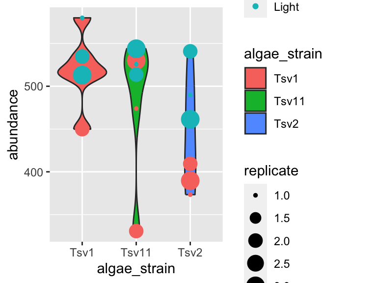
- Use geometric shapes to represent other variables in your data.
Map your variables onto the geometric features of the shapes. To define which shape should be used, use a geom_* command. Some options are, for example, geom_point(), geom_boxplot(), and geom_violin(). These functions should be added to your plot using the + sign. We can use a new line to keep the code from getting too wide, just make sure the + sign is at the end fo the top line. Let’s try it:
ggplot(data = algae_data_small, aes(x = algae_strain, y = abundance)) +
geom_point()
In the same way that we mapped variables in our dataset to the plot axes, we can map variables in the dataset to the geometric features of the shapes we are using to represent our data. For this, again, use aes() to map your variables onto the geometric features of the shapes:
ggplot(data = algae_data_small, aes(x = algae_strain, y = abundance)) +
geom_point(aes(color = harvesting_regime))
In the plot above, the points are a bit small, how could we fix that? We can modify the features of the shapes by adding additional arguments to the geom_*() functions. To change the size of the points created by the geom_point() function, this means that we need to add the size = argument. IMPORTANT! Please note that when we map a feature of a shape to a variable in our data(as we did with color/harvesting regime, above) then it goes inside aes(). In contrast, when we map a feature of a shape to a constant, it goes outside aes(). Here’s an example:
ggplot(data = algae_data_small, aes(x = algae_strain, y = abundance)) +
geom_point(aes(color = harvesting_regime), size = 5)
One powerful aspect of ggplot is the ability to quickly change mappings to see if alternative plots are more effective at bringing out the trends in the data. For example, we could modify the plot above by switching how harvesting_regime is mapped:
ggplot(data = algae_data_small, aes(x = algae_strain, y = abundance)) +
geom_point(aes(size = harvesting_regime), color = "black")
** Important note: Inside the aes() function, map aesthetics (the features of the geom’s shape) to a variable. Outside the aes() function, map aesthetics to constants. You can see this in the above two plots - in the first one, color is inside aes() and mapped to the variable called harvesting_regime, while size is outside the aes() call and is set to the constant 5. In the second plot, the situation is reversed, with size being inside the aes() function and mapped to the variable harvesting_regime, while color is outside the aes() call and is mapped to the constant “black”.
We can also stack geoms on top of one another by using multiple + signs. We also don’t have to assign the same mappings to each geom.
ggplot(data = algae_data_small, aes(x = algae_strain, y = abundance)) +
geom_violin() +
geom_point(aes(color = harvesting_regime), size = 5)
As you can probably guess right now, there are lots of mappings that can be done, and lots of different ways to look at the same data!
ggplot(data = algae_data_small, aes(x = algae_strain, y = abundance)) +
geom_violin(aes(fill = algae_strain)) +
geom_point(aes(color = harvesting_regime, size = replicate))
ggplot(data = algae_data_small, aes(x = algae_strain, y = abundance)) +
geom_boxplot()
markdown
Now that we are able to filter our data and make plots, we are ready to make reports to show others the data processing and visualization that we are doing. For this, we will use R Markdown. You can open a new markdown document in RStudio by clicking: File -> New File -> R Markdown. You should get a template document that compiles when you press “knit”.
Customize this document by modifying the title, and add author: "your_name" to the header. Delete all the content below the header, then compile again. You should get a page that is blank except for the title and the author name.
You can think of your markdown document as a stand-alone R Session. This means you will need to load our class code base into each new markdown doument you create. You can do this by adding a “chunk” or R code. That looks like this:

You can compilie this document into a pdf. We can also run R chunks right inside the document and create figures. You should notice a few things when you compile this document:
Headings: When you compile that code, the “# My first analysis” creates a header. You can create headers of various levels by increasing the number of hashtags you use in front of the header. For example, “## Part 1” will create a subheading, “### Part 1.1” will create a sub-subheading, and so on.
Plain text: Plain text in an R Markdown document creates a plan text entry in your compiled document. You can use this to explain your analyses and your figures, etc.
You can modify the output of a code chunk by adding arguments to its header. Useful arguments are fig.height, fig.width, and fig.cap. Dr. Busta will show you how to do this in class.
exercises I
In this set of exercises we’re going to practice filtering and plotting data in R Markdown. We’re going to work with two datasets: (i) algae_data and (ii) alaska_lake_data. For these exercises, you will write your code and answers to all questions in an R Markdown report, compile it as a pdf, and submit it on Canvas. If you have any questions please let me know
Some pointers:
If your code goes off the page, don’t be afraid to wrap it across multiple lines, as shown in some of the examples.
Don’t be afraid to put the variable with the long elements / long text on the y-axis and the continuous variable on the x-axis.
algae
You will have
algae_datastored in an object calledalgae_dataas soon as you runsource("https://thebustalab.github.io/phylochemistry/phylochemistry.R"). For this question, filter the data so that only entries are shown for which thechemical_speciesis “FAs” (remember that quotes are needed around FAs here!). What are the dimensions (i.e. number of rows and columns) of the resulting dataset?Now filter the dataset so that only entries for the
algae_strain“Tsv1” are shown. What are the dimensions of the resulting dataset?Now filter the dataset so that only entries with an abundance greater than 250 are shown. Note that
>can be used in the filter command instead of==, and that numbers inside a filter command do not require quotes around them. What are the dimensions of the resulting dataset?Make a ggplot that has
algae_strainon the x axis andabundanceon the y axis. Remember aboutaes(). Use points (geom_point()) to represent each compound. You don’t need to color the points. Which algae strain has the most abundant compound out of all the compounds in the dataset?Make a ggplot that has
abundanceon the x axis andchemical_specieson the y axis. Use points to represent each compound. You don’t need to color the points. Generally speaking, what are the two most abundant classes of chemical species in these algae strains? (FAs/Fas stand for fatty acids, AAs/Aas stand for amino acids.)I am going to show you an example of how you can filter and plot at the same time. To do this, we nest the filter command inside ggplot’s data argument:
ggplot(
data = filter(algae_data, chemical_species == "essential_Aas"),
aes(x = algae_strain, y = abundance)) +
geom_point()
Using the above as a template, make a plot that shows just omega_3_polyunsaturated_Fas, with algae_strain on the x axis, and abundance on the y axis. Color the points so that they correspond to harvesting_regime. Remember that mapping a feature of a shape onto a variable must be done inside aes(). Change the plot so that all the points are size = 5. Remember that mapping features of a shape to a constant needs to be done outside aes(). Which harvesting regime leads to higher levels of omega_3_polyunsaturated_Fas?
Use a combination of filtering and plotting to show the abundance of the different chemical species in just the
algae_straincalled “Tsv1”. Use an x and y axis, as well as points to represent the measurements. Make point size correspond to the replicate, and color the points according to harvesting regime.Make a plot that checks to see which
chemical_specieswere more abundant under light as opposed to heavyharvesting_regimein all three replicates. Use filtered data so that just onealgae_strainis shown, an x and a y axis, and points to represent the measurements. Make the pointssize = 5and also set the point’salpha = 0.6. The points should be colored according to harvesting_regime. Make 3 plots, one for each strain of algae.Take the code that you made for the question above. Remove the filtering. Add the following line to the end of the plot:
facet_grid(.~algae_strain). Remember that adding things to plots is done with the+sign, so your code should look something like:
ggplot(data = algae_data, aes(x = <something>, y = <something else>)) +
geom_point(aes(<some things>), <some here too>) +
facet_grid(.~algae_strain)Also try, instead of facet_grid(.~algae_strain), facet_grid(algae_strain~.) at the end of you plot command. (note the swap in the position of the .~ relative to algae_strain). This means your code should look something like:
ggplot(data = algae_data, aes(x = <something>, y = <something else>)) +
geom_point(aes(<some things>), <some here too>) +
facet_grid(algae_strain~.)What advantages does this one extra line (i.e. facet_grid) provide over what you had to do in question 8?
alaska lakes
Use R to view the first few lines of the
alaska_lake_datadataset. Do your best to describe, in written format, the kind of data that are in this data set.How many variables are in the Alaska lakes dataset?
Filter the data set so only meausurements of free elements (i.e. element_type is “free”) are shown. Remember, it’s
==, not=. What are the dimensions of the resulting dataset?Make a plot that shows the water temperatures of each lake. Don’t worry if you get a warning message from R about “missing values”. Which is the hottest lake? The coolest?
Make a plot that shows the water temperature of each lake. The x axis should be
park, the y axiswater temp. Add geom_violin() to the plot first, then geom_point(). Make the points size = 5. Color the points according to water_temp. Which park has four lakes with very similar temperatures?From the plot you made for question 5, it should be apparent that there is one lake in NOAT that is much warmer than the others. Filter the data so that only entries from
park == "NOAT"are shown (note the double equals sign and the quotes around NOAT…). Combine this filtering with plotting and use geom_point() to make a plot that shows which specific lake that is.Make a plot that shows which lake has the highest abundance of sulfur.
Make a plot that uses geom_point(). Set the “shape” aesthetic of the points to 21, i.e.
geom_point(aes(...), shape = 21). This gives you access to a new aesthetics:fill. It also changes the behaviour of thecoloraesthetic slightly, in that it now controls border color, not the internal color. Here is an example (though it doesn’t make a very nice plot):
ggplot(
data = filter(alaska_lake_data, lake == "Lake_Narvakrak"),
aes(x = lake, y = mg_per_L)
) +
geom_point(
shape = 21, size = 10,
color = "black", fill = "green"
)
Now we have lots of aesthetics we can map to: x, y, size, color, and fill (leave shape set to 21 for now). Make a plot of your own design. It should include filtering, and all the aesthetics listed above, though whether you map them to a variable or a constant is up to you.
When you are done with this plot, take a screen shot of it. Go to THIS GOOGLE SHEET, make a slide for yourself (you don’t have to include your name), and paste your screen shot there. Add a small caption that explains how your variables are mapped.
more geoms

We’ve looked at how to filter data and map variables in our data to geometric shapes to make plots. Let’s have a look at a few more things. For these examples, we’re going to use the data set called solvents. In these examples, I’d like to introduce you to two new geoms. The first geom_smooth() is used when there are two continuous variables. It is particularly nice when geom_point() is stacked on top of it.
ggplot(data = solvents, aes(x = boiling_point, y = vapor_pressure)) +
geom_smooth() +
geom_point()
## `geom_smooth()` using method = 'loess' and formula = 'y ~
## x'
Also, please be aware of geom_tile(), which is nice for situations with two discrete variables and one continuous variable. geom_tile() makes what are often referred to as heat maps. Note that geom_tile() is somewhat similar to geom_point(shape = 21), in that it has both fill and color aesthetics that control the fill color and the border color, respectively.
ggplot(
data = filter(algae_data, harvesting_regime == "Heavy"),
aes(x = algae_strain, y = chemical_species)
) +
geom_tile(aes(fill = abundance), color = "black", size = 1)
These examples should illustrate that there is, to some degree, correspondence between the type of data you are interested in plotting (number of discrete and continuous variables) and the types of geoms that can effectively be used to represent the data.
i2 <- iris %>%
mutate(Species2 = rep(c("A","B"), 75))
p <- ggplot(i2, aes(Sepal.Width, Sepal.Length, color = Species)) +
geom_point()
p + geom_xsidedensity(aes(y=stat(density), xfill = Species), position = "stack")+
geom_ysidedensity(aes(x=stat(density), yfill = Species2), position = "stack") +
theme_bw() +
facet_grid(Species~Species2, space = "free", scales = "free") +
labs(title = "FacetGrid", subtitle = "Collapsing All Side Panels") +
ggside(collapse = "all") +
scale_xfill_manual(values = c("darkred","darkgreen","darkblue")) +
scale_yfill_manual(values = c("black","gold"))
There is a handy cheat sheet that can help you identify the right geom for your situation. Please keep this cheat sheet in mind for your future plotting needs…
You can also combine geoms to create more detailed representations of distributions:
mpg %>% filter(cyl %in% c(4,6,8)) %>%
ggplot(aes(x = factor(cyl), y = hwy, fill = factor(cyl))) +
ggdist::stat_halfeye(
adjust = 0.5, justification = -0.2, .width = 0, point_colour = NA
) +
geom_boxplot(width = 0.12, outlier.color = NA, alpha = 0.5) +
ggdist::stat_dots(side = "left", justification = 1.1, binwidth = .25)
facets
As alluded to in Exercises 1, it is possible to map variables in your dataset to more than the geometric features of shapes (i.e. geoms). One very common way of doing this is with facets. Faceting creates small multiples of your plot, each of which shows a different subset of your data based on a categorical variable of your choice. Let’s check it out.
Here, we can facet in the horizontal direction:
ggplot(data = algae_data, aes(x = algae_strain, y = chemical_species)) +
geom_tile(aes(fill = abundance), color = "black") +
facet_grid(.~replicate)
We can facet in the vertical direction:
ggplot(data = algae_data, aes(x = algae_strain, y = chemical_species)) +
geom_tile(aes(fill = abundance), color = "black") +
facet_grid(replicate~.)
And we can do both at the same time:
ggplot(data = algae_data, aes(x = algae_strain, y = chemical_species)) +
geom_tile(aes(fill = abundance), color = "black") +
facet_grid(harvesting_regime~replicate)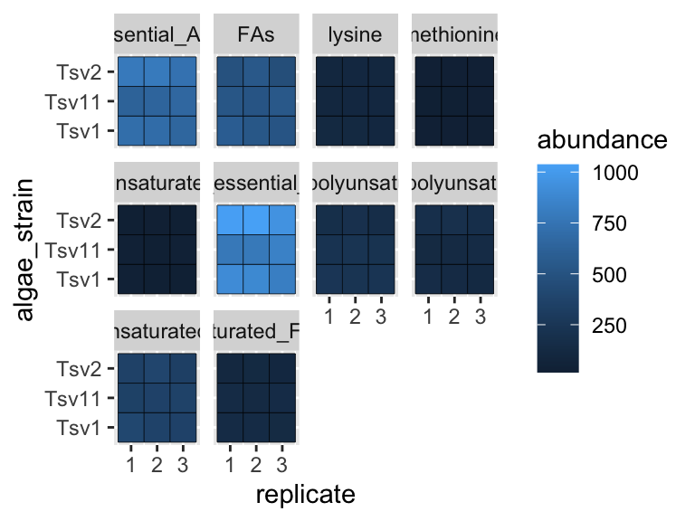
Faceting is a great way to describe more variation in your plot without having to make your geoms more complicated. For situations where you need to generate lots and lots of facets, consider facet_wrap instead of facet_grid:
ggplot(data = algae_data, aes(x = replicate, y = algae_strain)) +
geom_tile(aes(fill = abundance), color = "black") +
facet_wrap(chemical_species~.)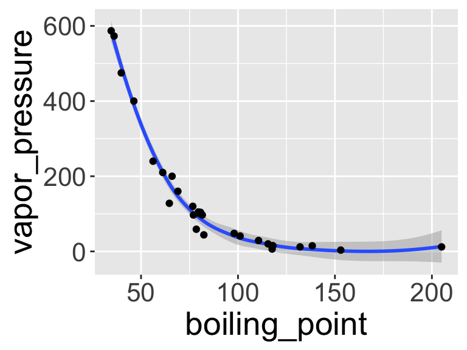
scales
Every time you define an aesthetic mapping (e.g. aes(x = algae_strain)), you are defining a new scale that is added to your plot. You can control these scales using the scale_* family of commands. Consider our faceting example above. In it, we use geom_tile(aes(fill = abundance)) to map the abundance variable to the fill aesthetic of the tiles. This creates a scale called fill that we can adjust using scale_fill_*. In this case, fill is mapped to a continuous variable and so the fill scale is a color gradient. Therefore, scale_fill_gradient() is the command we need to change it. Remember that you could always type ?scale_fill_ into the console and it will help you find relevant help topics that will provide more detail. Another option is to google: “How to modify color scale ggplot geom_tile”, which will undoubtedly turn up a wealth of help.
ggplot(data = algae_data, aes(x = algae_strain, y = chemical_species)) +
geom_tile(aes(fill = abundance), color = "black") +
facet_grid(harvesting_regime~replicate) +
scale_fill_gradient(low = "white", high = "black") +
theme_classic()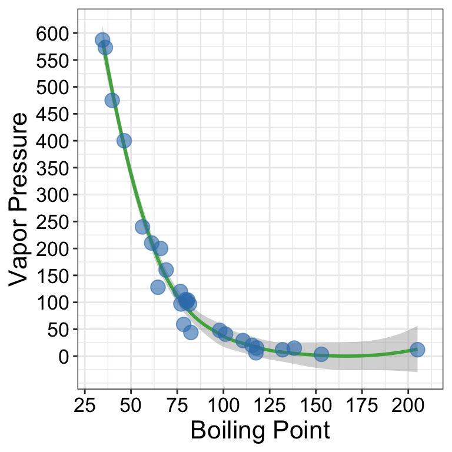
One particularly useful type of scale are the color scales provided by RColorBrewer:
display.brewer.all()
ggplot(mtcars) +
geom_point(
aes(x = mpg, y = factor(cyl), fill = factor(carb)),
shape = 21, size = 6
) +
scale_fill_brewer(palette = "Set1")
themes
So far we’ve just looked at how to control the means by which your data is represented on the plot. There are also components of the plot that are, strictly speaking, not data per se, but rather non-data ink. These are controlled using the theme() family of commands. There are two ways to go about this.
ggplot comes with a handful of built in “complete themes”. These will change the appearance of your plots with respect to the non-data ink. Compare the following plots:
ggplot(data = solvents, aes(x = boiling_point, y = vapor_pressure)) +
geom_smooth() +
geom_point() +
theme_classic()
## `geom_smooth()` using method = 'loess' and formula = 'y ~
## x'
ggplot(data = solvents, aes(x = boiling_point, y = vapor_pressure)) +
geom_smooth() +
geom_point() +
theme_dark()
## `geom_smooth()` using method = 'loess' and formula = 'y ~
## x'
ggplot(data = solvents, aes(x = boiling_point, y = vapor_pressure)) +
geom_smooth() +
geom_point() +
theme_void()
## `geom_smooth()` using method = 'loess' and formula = 'y ~
## x'
You can also change individual components of themes. This can be a bit tricky, but it’s all explained if you run ?theme(). Hare is an example (and google will provide many, many more).
ggplot(data = solvents, aes(x = boiling_point, y = vapor_pressure)) +
geom_smooth() +
geom_point() +
theme(
text = element_text(size = 20, color = "black")
)
## `geom_smooth()` using method = 'loess' and formula = 'y ~
## x'
Last, here is an example of combining scale_* and theme* with previous commands to really get a plot looking sharp.
ggplot(data = solvents, aes(x = boiling_point, y = vapor_pressure)) +
geom_smooth(color = "#4daf4a") +
scale_x_continuous(
name = "Boiling Point", breaks = seq(0,200,25), limits = c(30,210)
) +
scale_y_continuous(
name = "Vapor Pressure", breaks = seq(0,600,50)
) +
geom_point(color = "#377eb8", size = 4, alpha = 0.6) +
theme_bw() +
theme(
axis.text = element_text(color = "black"),
text = element_text(size = 16, color = "black")
)
## `geom_smooth()` using method = 'loess' and formula = 'y ~
## x'
(#fig:unnamed-chunk-75)Vapor pressure as a function of boiling point. A scatter plot with trendline showing the vapor pressure of thirty-two solvents (y-axis) a as a function of their boiling points (x-axis). Each point represents the boiling point and vapor pressure of one solvent. Data are from the ‘solvents’ dataset used in UMD CHEM5725.
subplots
We can make subplots using the cowplot package, which comes with the source() command. Let’s see:
library(patchwork)
plot1 <- ggplot(
filter(alaska_lake_data, element_type == "free")
) +
geom_violin(aes(x = park, y = mg_per_L)) + theme_classic() +
ggtitle("A")
plot2 <- ggplot(
filter(alaska_lake_data, element_type == "bound")
) +
geom_violin(aes(x = park, y = mg_per_L)) + theme_classic() +
ggtitle("B")
plot3 <- ggplot(
filter(alaska_lake_data, element == "C")
) +
geom_violin(aes(x = park, y = mg_per_L)) + theme_classic() +
coord_flip() + ggtitle("C")
plot_grid(plot_grid(plot1, plot2), plot3, ncol = 1)
3D scatter plots
phylochemistry contains a function to help you make somewhat decent 3D scatter plots. Let’s look at an example (see below). For this, we use the function points3D. Se give it a data argument that gives it vectors of data that should be on the x, y, and z axes, along with a vector that uniquely identifies each observation. We also tell it the angle of the z axis that we want, the integer to which ticks should be rounded, and the tick intervals. The function returns data that we can pass to ggplot to make a 3D plot.
pivot_wider(hawaii_aquifers, names_from = "analyte", values_from = "abundance") %>%
mutate(sample_unique_ID = paste0(aquifer_code, "_", well_name)) -> aquifers
output <- points3D(
data = data.frame(
x = aquifers$SiO2,
y = aquifers$Cl,
z = aquifers$Mg,
sample_unique_ID = aquifers$sample_unique_ID
),
angle = pi/2.4,
tick_round = 10,
x_tick_interval = 10,
y_tick_interval = 20,
z_tick_interval = 20
)
str(output)
## List of 6
## $ grid :'data.frame': 14 obs. of 4 variables:
## ..$ y : num [1:14] 0 0 0 0 0 ...
## ..$ yend: num [1:14] 96.6 96.6 96.6 96.6 96.6 ...
## ..$ x : num [1:14] 10 20 30 40 50 ...
## ..$ xend: num [1:14] 35.9 45.9 55.9 65.9 75.9 ...
## $ ticks :'data.frame': 37 obs. of 4 variables:
## ..$ y : num [1:37] 0 0 0 0 0 0 0 0 0 0 ...
## ..$ yend: num [1:37] 1.93 1.93 1.93 1.93 1.93 ...
## ..$ x : num [1:37] 10 20 30 40 50 60 70 80 10 20 ...
## ..$ xend: num [1:37] 10.5 20.5 30.5 40.5 50.5 ...
## $ labels :'data.frame': 29 obs. of 3 variables:
## ..$ y : num [1:29] -11.2 -11.2 -11.2 -11.2 -11.2 -11.2 -11.2 -11.2 0 20 ...
## ..$ x : num [1:29] 7.2 17.2 27.2 37.2 47.2 57.2 67.2 77.2 4.4 4.4 ...
## ..$ label: num [1:29] 10 20 30 40 50 60 70 80 0 20 ...
## $ axes :'data.frame': 3 obs. of 4 variables:
## ..$ x : num [1:3] 10 10 80
## ..$ xend: num [1:3] 80 10 106
## ..$ y : num [1:3] 0 0 0
## ..$ yend: num [1:3] 0 280 96.6
## $ point_segments:'data.frame': 106 obs. of 4 variables:
## ..$ x : num [1:106] 13 33.1 39.4 53.1 22.5 ...
## ..$ xend: num [1:106] 13 33.1 39.4 53.1 22.5 ...
## ..$ y : num [1:106] 27.3 81.6 82.6 109.5 19.5 ...
## ..$ yend: num [1:106] 7.34 11.59 12.56 15.45 5.51 ...
## $ points :'data.frame': 106 obs. of 3 variables:
## ..$ x : num [1:106] 13 33.1 39.4 53.1 22.5 ...
## ..$ y : num [1:106] 27.3 81.6 82.6 109.5 19.5 ...
## ..$ sample_unique_ID: chr [1:106] "aquifer_1_Alewa_Heights_Spring" "aquifer_1_Beretania_High_Service" "aquifer_1_Beretania_Low_Service" "aquifer_1_Kuliouou_Well" ...The output from points3D contains a grid, axes, and ticks, which should all be plotted using geom_segment. It also contains points that should be plotted with geom_point, and point segments that should be plotted with geom_segement. We can take the output from points3D and join it with the original data, which will occurr according to our sample_unique_ID column. Then, we can also plot point metadata:
output$points <- left_join(output$points, aquifers)
## Joining with `by = join_by(sample_unique_ID)`
ggplot() +
geom_segment(
data = output$grid, aes(x = x, xend = xend, y = y, yend = yend),
color = "grey80"
) +
geom_segment(data = output$axes, aes(x = x, xend = xend, y = y, yend = yend)) +
geom_segment(data = output$ticks, aes(x = x, xend = xend, y = y, yend = yend)) +
geom_text(
data = output$labels, aes(x = x, y = y, label = label),
hjust = 0.5
) +
geom_segment(
data = output$point_segments,
aes(x = x, xend = xend, y = y, yend = yend),
linetype = "dotted", color = "black"
) +
geom_point(
data = output$points, aes(x = x, y = y, fill = aquifer_code),
size = 3, shape = 21
) +
theme_void() +
scale_fill_manual(values = discrete_palette)
data vis exercises II
In this set of exercises we’re going to practice making more plots using the dataset solvents. Well, you don’t have to use solvents, you could use something else if you want, but solvents is a fun one to explore. Since you are now familiar with filtering and plotting data, the prompts in this assignment are going to be relatively open ended - I do not care what variables you map to x, y, fill, color, etc. Rather, I expect your submission to demonstrate to me that you have explored each of the new topics covered in the previous chapter. This includes geoms beyond geom_point() and geom_violin(), facets, scale modifications, and theme adjustments. Be creative! Explore the solvents dataset. Find something interesting! Show me that you have mastered this material. Don’t forget about the ggplot cheat sheet (see the “Links” section in this book).
As before, for these exercises, you will write your code and answers to any questions in the Script Editor window of your RStudio as an R Markdown document. You will compile that file as a pdf and submit it on Canvas. If you have any questions please let me know.
Some pointers:
If your code goes off the page, don’t be afraid to wrap it across multiple lines, as shown in some of the examples in the previous set of exercises.
Don’t be afraid to put the variable with the long elements / long text on the y-axis and the continuous variable on the x-axis.
Create a plot that has x and y axes that are continuous variables. Add to this plot
facet_grid, and specify that the facets should be based on a categorical variable (ideally a categorical variable with a small number of total categories). Now make two versions of that plot, one that uses thescales = "free"feature offacet_gridand a second the other does not (i.e. one should usefacet_grid(<things>), while the other usesfacet_grid(<things>, scales = "free")). Write a single caption that describes both plots, highlighting the advantages provided by each plot over the other. For additional tips on writing captions, please see the “Writing” chapter in this book.Using a continuous variable on one axis and a discrete (categorical) variable on the other, create two plots that are identical except that one uses
geom_point(), while the other usesgeom_jitter(). Write a single caption that describes both plots. The caption should highlight the differences bewteen these two plots and it should describe case(s) in which you think it would be appropriate to usegeom_jitter()overgeom_point().Make a plot that has four aesthetic mappings (x and y mappings count). Use the
scales_*family of commands to modify some aspect of each scale create by the four mappings. Hint: some scales are somewhat tricky to modify (alpha, linetype, …), and some scales are easier to modify (x, y, color, fill, shape). You may need to use some google searches to help you. Queries along the lines of “how to modify point color in ggplot” should direct you to a useful resource.Make a plot and manually modify at least three aspects of its theme (i.e. do not use one of the build in complete themes such as
theme_classic(), rather, manually modify components of the theme usingtheme()). This means that inside yourtheme()command, there should be three arguments separated by commas.Identify a relationship between two variables in the dataset. Create a plot that is optimized (see note) to highlight the features of this relationship. Write a short caption that describes the plot and the trend you’ve identified and highlighted. Note: I realize that the word “optimize” is not clearly defined here. That’s ok! You are the judge of what is optimized and what is not. Use your caption to make a case for why your plot is optimized. Defend your ideas with argument!
Watch this video on bar plots. Add a section to the end of the R Markdown document you made for Part 2 that describes the problem outlined in the video and one potential solution to the problem.
further reading
For additional explanations of ggplot2: ggplot2-book.
Check out some of the incredible geoms that are easy to access using R and ggplot2: R Graph Gallery. Use these to make your figures attractive and easy to interpret!
For a challenge, try implementing these awesome color scales: Famous R Color Palettes. Note that some of these are optimized for colorblind individuals and that other are optimized for continuous hue gradients, etc.
For a list of data visualization sins: Friends Don’t Let Friends. Some interesting things in here!
For more information on data visualization and graphics theory, check out the works by Edward Tufte: Edward Tufte. A digital text that covers similar topics is here: [Look At Data] (https://socviz.co/lookatdata.html).
Some examples of award winning data visualization: Information Is Beautiful Awards and Data Vis Inspiration.
data wrangling

Data wrangling refers to the process of organizing, cleaning up, and making a “raw” data set more ready for downstream analysis. It is a key piece of any data analysis process. Here we will look at a few different aspects of wrangling, including data import, subsetting, pivoting, and summarizing data.
data import
To analyze data that is stored on your own computer you can indeed import it into RStudio.
The easiest way to do this is to use the interactive command readCSV(), a function that comes with the phylochemistry source command. You run readCSV() in your console, then navigate to the data on your hard drive.
Another option is to read the data in from a path. For this, you will need to know the “path” to your data file. This is essentially the street address of your data on your computer’s hard drive. Paths look different on Mac and PC.
- On Mac:
/Users/lucasbusta/Documents/sample_data_set.csv(note the forward slashes!) - On PC:
C:\\My Computer\\Documents\\sample_data_set.csv(note double backward slashes!)
You can quickly find paths to files via the following:
- On Mac: Locate the file in Finder. Right-click on the file, hold the Option key, then click “Copy
as Pathname” - On PC: Locate the file in Windows Explorer. Hold down the Shift key then right-click on the file. Click “Copy As Path”
With these paths, we can read in data using the read_csv command. We’ll run read_csv("<path_to_your_data>"). Note the use of QUOTES ""! Those are necessary. Also make sure your path uses the appropriate direction of slashes for your operating system.
subsetting
So far, we have always been passing whole data sets to ggplot to do our plotting. However, suppose we wanted to get at just certain portions of our dataset, say, specific columns, or specific rows? Here are a few ways to do that:
# To look at a single column (the third column)
head(alaska_lake_data[,3])
## # A tibble: 6 × 1
## water_temp
## <dbl>
## 1 6.46
## 2 6.46
## 3 6.46
## 4 6.46
## 5 6.46
## 6 6.46
# To look at select columns:
head(alaska_lake_data[,2:5])
## # A tibble: 6 × 4
## park water_temp pH element
## <chr> <dbl> <dbl> <chr>
## 1 BELA 6.46 7.69 C
## 2 BELA 6.46 7.69 N
## 3 BELA 6.46 7.69 P
## 4 BELA 6.46 7.69 Cl
## 5 BELA 6.46 7.69 S
## 6 BELA 6.46 7.69 F
# To look at a single row (the second row)
head(alaska_lake_data[2,])
## # A tibble: 1 × 7
## lake park water_temp pH element mg_per_L element_type
## <chr> <chr> <dbl> <dbl> <chr> <dbl> <chr>
## 1 Devi… BELA 6.46 7.69 N 0.028 bound
# To look at select rows:
head(alaska_lake_data[2:5,])
## # A tibble: 4 × 7
## lake park water_temp pH element mg_per_L element_type
## <chr> <chr> <dbl> <dbl> <chr> <dbl> <chr>
## 1 Devi… BELA 6.46 7.69 N 0.028 bound
## 2 Devi… BELA 6.46 7.69 P 0 bound
## 3 Devi… BELA 6.46 7.69 Cl 10.4 free
## 4 Devi… BELA 6.46 7.69 S 0.62 free
# To look at just a single column, by name
head(alaska_lake_data$pH)
## [1] 7.69 7.69 7.69 7.69 7.69 7.69
# To look at select columns by name
head(select(alaska_lake_data, park, water_temp))
## # A tibble: 6 × 2
## park water_temp
## <chr> <dbl>
## 1 BELA 6.46
## 2 BELA 6.46
## 3 BELA 6.46
## 4 BELA 6.46
## 5 BELA 6.46
## 6 BELA 6.46tidy data
When we make data tables by hand, it’s often easy to make a wide-style table like the following. In it, the abundances of 7 different fatty acids in 10 different species are tabulated. Each fatty acid gets its own row, each species, its own column.
head(fadb_sample)
## # A tibble: 6 × 11
## fatty_acid Agonandra_brasiliensis Agonandra_silvatica
## <chr> <dbl> <dbl>
## 1 Hexadecanoic a… 3.4 1
## 2 Octadecanoic a… 6.2 0.1
## 3 Eicosanoic acid 4.7 3.5
## 4 Docosanoic acid 77.4 0.4
## 5 Tetracosanoic … 1.4 1
## 6 Hexacosanoic a… 1.9 12.6
## # ℹ 8 more variables: Agonandra_excelsa <dbl>,
## # Heisteria_silvianii <dbl>, Malania_oleifera <dbl>,
## # Ximenia_americana <dbl>, Ongokea_gore <dbl>,
## # Comandra_pallida <dbl>, Buckleya_distichophylla <dbl>,
## # Nuytsia_floribunda <dbl>While this format is very nice for filling in my hand (such as in a lab notebook or similar), it does not groove with ggplot and other tidyverse functions very well. We need to convert it into a long-style table. This is done using pivot_longer(). You can think of this function as transforming both your data’s column names (or some of the column names) and your data matrix’s values (in this case, the measurements) each into their own variables (i.e. columns). We can do this for our fatty acid dataset using the command below. In it, we specify what data we want to transform (data = fadb_sample), we need to tell it what columns we want to transform (cols = 2:11), what we want the new variable that contains column names to be called (names_to = "plant_species") and what we want the new variable that contains matrix values to be called (values_to = "relative_abundance"). All together now:
pivot_longer(data = fadb_sample, cols = 2:11, names_to = "plant_species", values_to = "relative_abundance")
## # A tibble: 70 × 3
## fatty_acid plant_species relative_abundance
## <chr> <chr> <dbl>
## 1 Hexadecanoic acid Agonandra_brasilien… 3.4
## 2 Hexadecanoic acid Agonandra_silvatica 1
## 3 Hexadecanoic acid Agonandra_excelsa 1.2
## 4 Hexadecanoic acid Heisteria_silvianii 2.9
## 5 Hexadecanoic acid Malania_oleifera 0.7
## 6 Hexadecanoic acid Ximenia_americana 3.3
## 7 Hexadecanoic acid Ongokea_gore 1
## 8 Hexadecanoic acid Comandra_pallida 2.3
## 9 Hexadecanoic acid Buckleya_distichoph… 1.6
## 10 Hexadecanoic acid Nuytsia_floribunda 3.8
## # ℹ 60 more rowsBrilliant! Now we have a tidy, long-style table that can be used with ggplot.
the pipe (%>%)
We have seen how to create new objects using <-, and we have been filtering and plotting data using, for example:
ggplot(filter(alaska_lake_data, park == "BELA"), aes(x = pH, y = lake)) + geom_col()
However, as our analyses get more complex, the code can get long and hard to read. We’re going to use the pipe %>% to help us with this. Check it out:
alaska_lake_data %>%
filter(park == "BELA") %>%
ggplot(aes(x = pH, y = lake)) + geom_col()
Neat! Another way to think about the pipe:

The pipe will become more important as our analyses become more sophisticated, which happens very quickly when we start working with summary statistics, as we shall now see…
summary statistics
So far, we have been plotting raw data. This is well and good, but it is not always suitable. Often we have scientific questions that cannot be answered by looking at raw data alone, or sometimes there is too much raw data to plot. For this, we need summary statistics - things like averages, standard deviations, and so on. While these metrics can be computed in Excel, programming such can be time consuming, especially for group statistics. Consider the example below, which uses the ny_trees dataset. The NY Trees dataset contains information on nearly half a million trees in New York City (this is after considerable filtering and simplification):
head(ny_trees)
## # A tibble: 6 × 14
## tree_height tree_diameter address tree_loc pit_type
## <dbl> <dbl> <chr> <chr> <chr>
## 1 21.1 6 1139 57 STREET Front Sidewal…
## 2 59.0 6 2220 BERGEN A… Across Sidewal…
## 3 92.4 13 2254 BERGEN A… Across Sidewal…
## 4 50.2 15 2332 BERGEN A… Across Sidewal…
## 5 95.0 21 2361 EAST 7… Front Sidewal…
## 6 67.5 19 2409 EAST 7… Front Continu…
## # ℹ 9 more variables: soil_lvl <chr>, status <chr>,
## # spc_latin <chr>, spc_common <chr>, trunk_dmg <chr>,
## # zipcode <dbl>, boroname <chr>, latitude <dbl>,
## # longitude <dbl>More than 300,000 observations of 14 variables! That’s 4.2M data points! Now, what is the average and standard deviation of the height and diameter of each tree species within each NY borough? Do those values change for trees that are in parks versus sidewalk pits?? I don’t even know how one would begin to approach such questions using traditional spreadsheets. Here, we will answer these questions with ease using two new commands: group_by() and summarize(). Let’s get to it.
Say that we want to know (and of course, visualize) the mean and standard deviation of the heights of each tree species in NYC. We can see that data in first few columns of the NY trees dataset above, but how to calculate these statistics? In R, mean can be computed with mean() and standard deviation can be calculated with sd(). We will use the function summarize() to calculate summary statistics. So, we can calculate the average and standard deviation of all the trees in the data set as follows:
ny_trees %>%
summarize(mean_height = mean(tree_height))
## # A tibble: 1 × 1
## mean_height
## <dbl>
## 1 72.6
ny_trees %>%
summarize(stdev_height = sd(tree_height))
## # A tibble: 1 × 1
## stdev_height
## <dbl>
## 1 28.7Great! But how to do this for each species? We need to subdivide the data by species, then compute the mean and standard deviation, then recombine the results into a new table. First, we use group_by(). Note that in ny_trees, species are indicated in the column called spc_latin. Once the data is grouped, we can use summarize() to compute statistics.
ny_trees %>%
group_by(spc_latin) %>%
summarize(mean_height = mean(tree_height))
## # A tibble: 12 × 2
## spc_latin mean_height
## <chr> <dbl>
## 1 ACER PLATANOIDES 82.6
## 2 ACER RUBRUM 106.
## 3 ACER SACCHARINUM 65.6
## 4 FRAXINUS PENNSYLVANICA 60.6
## 5 GINKGO BILOBA 90.4
## 6 GLEDITSIA TRIACANTHOS 53.0
## 7 PLATANUS ACERIFOLIA 82.0
## 8 PYRUS CALLERYANA 21.0
## 9 QUERCUS PALUSTRIS 65.5
## 10 QUERCUS RUBRA 111.
## 11 TILIA CORDATA 98.8
## 12 ZELKOVA SERRATA 101.Bam. Mean height of each tree species. We can also count the number of observations using n():
ny_trees %>%
group_by(spc_latin) %>%
summarize(number_of_individuals = n())
## # A tibble: 12 × 2
## spc_latin number_of_individuals
## <chr> <int>
## 1 ACER PLATANOIDES 67260
## 2 ACER RUBRUM 11506
## 3 ACER SACCHARINUM 13161
## 4 FRAXINUS PENNSYLVANICA 16987
## 5 GINKGO BILOBA 15672
## 6 GLEDITSIA TRIACANTHOS 48707
## 7 PLATANUS ACERIFOLIA 80075
## 8 PYRUS CALLERYANA 39125
## 9 QUERCUS PALUSTRIS 37058
## 10 QUERCUS RUBRA 10020
## 11 TILIA CORDATA 25970
## 12 ZELKOVA SERRATA 13221Cool! summarize() is more powerful though, we can do many summary statistics at once:
ny_trees %>%
group_by(spc_latin) %>%
summarize(
mean_height = mean(tree_height),
stdev_height = sd(tree_height)
) -> ny_trees_by_spc_summ
ny_trees_by_spc_summ
## # A tibble: 12 × 3
## spc_latin mean_height stdev_height
## <chr> <dbl> <dbl>
## 1 ACER PLATANOIDES 82.6 17.6
## 2 ACER RUBRUM 106. 15.7
## 3 ACER SACCHARINUM 65.6 16.6
## 4 FRAXINUS PENNSYLVANICA 60.6 21.3
## 5 GINKGO BILOBA 90.4 24.5
## 6 GLEDITSIA TRIACANTHOS 53.0 13.0
## 7 PLATANUS ACERIFOLIA 82.0 16.0
## 8 PYRUS CALLERYANA 21.0 5.00
## 9 QUERCUS PALUSTRIS 65.5 6.48
## 10 QUERCUS RUBRA 111. 20.7
## 11 TILIA CORDATA 98.8 32.6
## 12 ZELKOVA SERRATA 101. 10.7Now we can use this data in plotting. For this, we will use a new geom, geom_pointrange, which takes x and y aesthetics, as usual, but also requires two additional y-ish aesthetics ymin and ymax (or xmin and xmax if you want them to vary along x). Also, note that in the aesthetic mappings for xmin and xmax, we can use a mathematical expression: mean-stdev and mean+stdev, respectivey. In our case, these are mean_height - stdev_height and mean_height + stdev_height. Let’s see it in action:
ny_trees_by_spc_summ %>%
ggplot() +
geom_pointrange(
aes(
y = spc_latin,
x = mean_height,
xmin = mean_height - stdev_height,
xmax = mean_height + stdev_height
)
)
Cool! Just like that, we’ve found (and visualized) the average and standard deviation of tree heights, by species, in NYC. But it doesn’t stop there. We can use group_by() and summarize() on multiple variables (i.e. more groups). We can do this to examine the properties of each tree species in each NYC borough. Let’s check it out:
ny_trees %>%
group_by(spc_latin, boroname) %>%
summarize(
mean_diam = mean(tree_diameter),
stdev_diam = sd(tree_diameter)
) -> ny_trees_by_spc_boro_summ
ny_trees_by_spc_boro_summ
## # A tibble: 48 × 4
## # Groups: spc_latin [12]
## spc_latin boroname mean_diam stdev_diam
## <chr> <chr> <dbl> <dbl>
## 1 ACER PLATANOIDES Bronx 13.9 6.74
## 2 ACER PLATANOIDES Brooklyn 15.4 14.9
## 3 ACER PLATANOIDES Manhattan 11.6 8.45
## 4 ACER PLATANOIDES Queens 15.1 12.9
## 5 ACER RUBRUM Bronx 11.4 7.88
## 6 ACER RUBRUM Brooklyn 10.5 7.41
## 7 ACER RUBRUM Manhattan 6.63 4.23
## 8 ACER RUBRUM Queens 14.1 8.36
## 9 ACER SACCHARINUM Bronx 19.7 10.5
## 10 ACER SACCHARINUM Brooklyn 22.2 10.1
## # ℹ 38 more rowsNow we have summary statistics for each tree species within each borough. This is different from the previous plot in that we now have an additional variable (boroname) in our summarized dataset. This additional variable needs to be encoded in our plot. Let’s map boroname to x and facet over tree species, which used to be on x. We’ll also manually modify the theme element strip.text.y to get the species names in a readable position.
ny_trees_by_spc_boro_summ %>%
ggplot() +
geom_pointrange(
aes(
y = boroname,
x = mean_diam,
xmin = mean_diam-stdev_diam,
xmax = mean_diam+stdev_diam
)
) +
facet_grid(spc_latin~.) +
theme(
strip.text.y = element_text(angle = 0)
)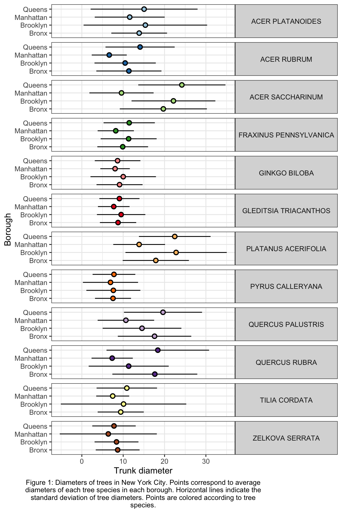
Excellent! And if we really want to go for something pretty:
ny_trees_by_spc_boro_summ %>%
ggplot() +
geom_pointrange(
aes(
y = boroname,
x = mean_diam,
xmin = mean_diam-stdev_diam,
xmax = mean_diam+stdev_diam,
fill = spc_latin
), color = "black", shape = 21
) +
labs(
y = "Borough",
x = "Trunk diameter",
caption = str_wrap("Figure 1: Diameters of trees in New York City. Points correspond to average diameters of each tree species in each borough. Horizontal lines indicate the standard deviation of tree diameters. Points are colored according to tree species.", width = 80)
) +
facet_grid(spc_latin~.) +
guides(fill = "none") +
scale_fill_brewer(palette = "Paired") +
theme_bw() +
theme(
strip.text.y = element_text(angle = 0),
plot.caption = element_text(hjust = 0.5)
)
Now we are getting somewhere. It looks like there are some really big maple trees (Acer) in Queens.
ordering
We can also sort or order a data frame based on a specific column with the command arrange(). Let’s have a quick look. Suppose we wanted to know which lake was the coldest:
arrange(alaska_lake_data, water_temp)
## # A tibble: 220 × 7
## lake park water_temp pH element mg_per_L
## <chr> <chr> <dbl> <dbl> <chr> <dbl>
## 1 Desperation_Lake NOAT 2.95 6.34 C 2.1
## 2 Desperation_Lake NOAT 2.95 6.34 N 0.005
## 3 Desperation_Lake NOAT 2.95 6.34 P 0
## 4 Desperation_Lake NOAT 2.95 6.34 Cl 0.2
## 5 Desperation_Lake NOAT 2.95 6.34 S 2.73
## 6 Desperation_Lake NOAT 2.95 6.34 F 0.01
## 7 Desperation_Lake NOAT 2.95 6.34 Br 0
## 8 Desperation_Lake NOAT 2.95 6.34 Na 1.11
## 9 Desperation_Lake NOAT 2.95 6.34 K 0.16
## 10 Desperation_Lake NOAT 2.95 6.34 Ca 5.87
## # ℹ 210 more rows
## # ℹ 1 more variable: element_type <chr>Or suppose we wanted to know which was the warmest?
arrange(alaska_lake_data, desc(water_temp))
## # A tibble: 220 × 7
## lake park water_temp pH element mg_per_L
## <chr> <chr> <dbl> <dbl> <chr> <dbl>
## 1 Lava_Lake BELA 20.2 7.42 C 8.3
## 2 Lava_Lake BELA 20.2 7.42 N 0.017
## 3 Lava_Lake BELA 20.2 7.42 P 0.001
## 4 Lava_Lake BELA 20.2 7.42 Cl 2.53
## 5 Lava_Lake BELA 20.2 7.42 S 0.59
## 6 Lava_Lake BELA 20.2 7.42 F 0.04
## 7 Lava_Lake BELA 20.2 7.42 Br 0.01
## 8 Lava_Lake BELA 20.2 7.42 Na 2.93
## 9 Lava_Lake BELA 20.2 7.42 K 0.57
## 10 Lava_Lake BELA 20.2 7.42 Ca 11.8
## # ℹ 210 more rows
## # ℹ 1 more variable: element_type <chr>arrange() will work on grouped data, which is particularly useful in combination with slice(), which can show us the first n elements in each group:
alaska_lake_data %>%
group_by(park) %>%
arrange(water_temp) %>%
slice(1)
## # A tibble: 3 × 7
## # Groups: park [3]
## lake park water_temp pH element mg_per_L element_type
## <chr> <chr> <dbl> <dbl> <chr> <dbl> <chr>
## 1 Devi… BELA 6.46 7.69 C 3.4 bound
## 2 Wild… GAAR 5.5 6.98 C 6.5 bound
## 3 Desp… NOAT 2.95 6.34 C 2.1 boundIt looks like the coldest lakes in the three parks are Devil Mountain Lake, Wild Lake, and Desperation Lake!
mutate
One last thing before our exercises… there is another command called mutate(). It is like summarize it calculates user-defined statistics, but it creates output on a per-observation level instead of for each group. This means that it doesn’t make the data set smaller, in fact it makes it bigger, by creating a new row for the new variables defined inside mutate(). It can also take grouped data. This is really useful for calculating percentages within groups. For example: within each park, what percent of the park’s total dissolved sulfur does each lake have?
alaska_lake_data %>%
filter(element == "S") %>%
group_by(park) %>%
select(lake, park, element, mg_per_L) %>%
mutate(percent_S = mg_per_L/sum(mg_per_L)*100)
## # A tibble: 20 × 5
## # Groups: park [3]
## lake park element mg_per_L percent_S
## <chr> <chr> <chr> <dbl> <dbl>
## 1 Devil_Mountain_Lake BELA S 0.62 32.3
## 2 Imuruk_Lake BELA S 0.2 10.4
## 3 Kuzitrin_Lake BELA S 0.29 15.1
## 4 Lava_Lake BELA S 0.59 30.7
## 5 North_Killeak_Lake BELA S 0.04 2.08
## 6 White_Fish_Lake BELA S 0.18 9.38
## 7 Iniakuk_Lake GAAR S 12.1 13.2
## 8 Kurupa_Lake GAAR S 12.4 13.6
## 9 Lake_Matcharak GAAR S 13.3 14.5
## 10 Lake_Selby GAAR S 7.92 8.64
## 11 Nutavukti_Lake GAAR S 2.72 2.97
## 12 Summit_Lake GAAR S 3.21 3.50
## 13 Takahula_Lake GAAR S 5.53 6.03
## 14 Walker_Lake GAAR S 5.77 6.30
## 15 Wild_Lake GAAR S 28.7 31.3
## 16 Desperation_Lake NOAT S 2.73 25.8
## 17 Feniak_Lake NOAT S 4.93 46.5
## 18 Lake_Kangilipak NOAT S 0.55 5.19
## 19 Lake_Narvakrak NOAT S 1.38 13.0
## 20 Okoklik_Lake NOAT S 1.01 9.53The percent columns for each park add to 100%, so, for example, Devil Mountain Lake has 32.3% of BELA’s dissolved sulfur.
exercises
Isn’t seven the most powerfully magical number? Isn’t seven the most powerfully magical number? Yes… I think the idea of a seven-part assignment would greatly appeal to an alchemist.
In this set of exercises we are going to use the periodic table. After you run source() you can load that data set using periodic_table. Please use that dataset to run analyses and answer the following questions/prompts. Compile the answers in an R Markdown document, compile it as a pdf, and upload it to the Canvas assignment. Please let me know if you have any questions. Good luck, and have fun!
Some pointers:
If your code goes off the page, please wrap it across multiple lines, as shown in some of the examples in the previous set of exercises.
Don’t be afraid to put the variable with the long elements / long text on the y-axis and the continuous variable on the x-axis.
If your axis tick labels are overlapping or not visible, do something to fix that. Some solutions could be: move the legend to the top of the plot (
theme(legend.position = "top")), rotate the text (theme(axis.text.x = element_text(angle = 90)), or make the text smaller (theme(axis.text.x = element_text(size = 8)).
Make a plot using
geom_point()that shows the average atomic weight of the elements discovered in each year spanned by the dataset (i.e. what was the average weight of the elements discovered in 1900? 1901? 1902? etc.). You should see a trend, particularly after 1950. What do you think has caused this trend?The column
state_at_RTindicates the state of each element at room temperate. Make a plot that shows the average first ionization potential of all the elements belonging to each state group indicated instate_at_RT(i.e. what is the average 1st ionization potential of all elements that are solid at room temp? liquid? etc.). Which is the highest?Filter the dataset so that only elements with atomic number less than 85 are included. Considering only these elements, what is the average and standard deviation of boiling points for each type of
crystal_structure? Make a plot usinggeom_pointrange()that shows the mean and standard deviation of each of these groups. What’s up with elements that have a cubic crystal structure?Now filter the original dataset so that only elements with atomic number less than 37 are considered. The elements in this dataset belong to the first four periods. What is the average abundance of each of these four periods in seawater? i.e. what is the average abundance of all elements from period 1? period 2? etc. Which period is the most abundant? In this context what does “CHON” mean? (not the rock band, though they are also excellent, especially that song that features GoYama)
Now filter the original dataset so that only elements with atomic number less than 103 are considered. Filter it further so that elements from group number 18 are excluded. Using this twice-filtered dataset, compute the average, minimum, and maximum values for electronegativiy for each
group_number. Usegeom_point()andgeom_errorbar()to illustrate the average, minimum, and maximum values for each group number.Filter the dataset so that only elements with atomic number less than 85 are considered. Group these by
color. Now filter out those that havecolor == "colorless". Of the remaining elements, which has the widest range of specific heats? Usegeom_point()andgeom_errorbar()to illustrate the mean and standard deviation of each color’s specific heats.You have learned many things in this course so far.
read_csv(),filter(),ggplot(), and nowgroup_by(),summarize(),mutate(),arrange(), andslice(). Using all these commands, create one or more graphics to illustrate what you consider to be one or more interesting trends in a data set of your own choosing. Use theme elements and scales to enhance your plot. Give your plot a nice caption based on the caption guide in this book. Impress me!
further reading
Be sure to check out the Tidy Data Tutor: https://tidydatatutor.com/vis.html. An easy way to visualize what’s going on during data wrangling!
dimensionality reduction

In the previous chapters, we looked at how to explore our data sets by visualizing many variables and manually identifying trends. Sometimes, we encounter data sets with so many variables, that it is not reasonable to manually select certain variables with which to create plots and manually search for trends. In these cases, we need dimensionality reduction - a set of techniques that helps us identify which variables are driving differences among our samples. In this course, we will conduct dimensionality reduction useing runMatrixAnalysis(), a function that is loaded into your R Session when you run the source() command.
Matrix analyses can be a bit tricky to set up. There are two things that we can do to help us with this: (i) we will use a template for runMatrixAnalysis() (see below) and (ii) it is critical that we think about our data in terms of samples and analytes. Let’s consider our Alaska lakes data set:
alaska_lake_data
## # A tibble: 220 × 7
## lake park water_temp pH element mg_per_L
## <chr> <chr> <dbl> <dbl> <chr> <dbl>
## 1 Devil_Mountain_L… BELA 6.46 7.69 C 3.4
## 2 Devil_Mountain_L… BELA 6.46 7.69 N 0.028
## 3 Devil_Mountain_L… BELA 6.46 7.69 P 0
## 4 Devil_Mountain_L… BELA 6.46 7.69 Cl 10.4
## 5 Devil_Mountain_L… BELA 6.46 7.69 S 0.62
## 6 Devil_Mountain_L… BELA 6.46 7.69 F 0.04
## 7 Devil_Mountain_L… BELA 6.46 7.69 Br 0.02
## 8 Devil_Mountain_L… BELA 6.46 7.69 Na 8.92
## 9 Devil_Mountain_L… BELA 6.46 7.69 K 1.2
## 10 Devil_Mountain_L… BELA 6.46 7.69 Ca 5.73
## # ℹ 210 more rows
## # ℹ 1 more variable: element_type <chr>We can see that this dataset is comprised of measurements of various analytes (i.e. several chemical elements, as well as water_temp, and pH), in different samples (i.e. lakes). We need to tell the runMatrixAnalysis() function how each column relates to this samples and analytes structure. See the image below for an explanation.

pca
“Which analytes are driving differences among my samples?” “Which analytes in my data set are correlated?”
theory
PCA looks at all the variance in a high dimensional data set and chooses new axes within that data set that align with the directions containing highest variance. These new axes are called principal components. Let’s look at an example:

In the example above, the three dimensional space can be reduced to a two dimensional space with the principal components analysis. New axes (principal components) are selected (bold arrows on left) that become the x and y axes in the principal components space (right).
We can run and visualize principal components analyses using the runMatrixAnalysis() function as in the example below. As you can see in the output, the command provides the sample_IDs, sample information, then the coordinates for each sample in the 2D projection (the “PCA plot”) and the raw data, in case you wish to do further processing.
AK_lakes_pca <- runMatrixAnalysis(
data = alaska_lake_data,
analysis = c("pca"),
column_w_names_of_multiple_analytes = "element",
column_w_values_for_multiple_analytes = "mg_per_L",
columns_w_values_for_single_analyte = c("water_temp", "pH"),
columns_w_additional_analyte_info = "element_type",
columns_w_sample_ID_info = c("lake", "park"),
scale_variance = TRUE
)
## Replacing NAs in your data with mean
head(AK_lakes_pca)
## # A tibble: 6 × 18
## sample_unique_ID lake park Dim.1 Dim.2 water_temp
## <chr> <chr> <chr> <dbl> <dbl> <dbl>
## 1 Devil_Mountain_Lake_… Devi… BELA 0.229 -0.861 6.46
## 2 Imuruk_Lake_BELA Imur… BELA -1.17 -1.62 17.4
## 3 Kuzitrin_Lake_BELA Kuzi… BELA -0.918 -1.15 8.06
## 4 Lava_Lake_BELA Lava… BELA 0.219 -1.60 20.2
## 5 North_Killeak_Lake_B… Nort… BELA 9.46 0.450 11.3
## 6 White_Fish_Lake_BELA Whit… BELA 4.17 -0.972 12.0
## # ℹ 12 more variables: pH <dbl>, C <dbl>, N <dbl>, P <dbl>,
## # Cl <dbl>, S <dbl>, F <dbl>, Br <dbl>, Na <dbl>,
## # K <dbl>, Ca <dbl>, Mg <dbl>Let’s plot the 2D projection of the Alaska lakes data:
ggplot(data = AK_lakes_pca, aes(x = Dim.1, y = Dim.2)) +
geom_point(aes(fill = park), shape = 21, size = 4, alpha = 0.8) +
geom_label_repel(aes(label = lake), alpha = 0.5) +
theme_classic()
Great! In this plot we can see that White Fish Lake and North Killeak Lake, both in BELA park, are quite different from the other parks (they are separated from the others along dimension 1, i.e. the first principal component). At the same time, Wild Lake, Iniakuk Lake, Walker Lake, and several other lakes in GAAR park are different from all the others (they are separated from the others along dimension 2, i.e. the second principal component).
Important question: what makes the lakes listed above different from the others? Certainly some aspect of their chemistry, since that’s the data that this analysis is built upon, but how do we determine which analyte(s) are driving the differences among the lakes that we see in the PCA plot?
ordination plots
Let’s look at how to access the information about which analytes are major contributors to each principal component. This is important because it will tell you which analytes are associated with particular dimensions, and by extension, which analytes are associated with (and are markers for) particular groups in the PCA plot. This can be determined using an ordination plot. Let’s look at an example. We can obtain the ordination plot information using runMatrixAnalysis() with analysis = "pca_ord":
## Replacing NAs in your data with mean
## # A tibble: 6 × 3
## analyte Dim.1 Dim.2
## <chr> <dbl> <dbl>
## 1 water_temp 0.0750 -0.261
## 2 pH 0.686 0.0185
## 3 C 0.290 -0.242
## 4 N 0.00435 0.714
## 5 P 0.473 -0.0796
## 6 Cl 0.953 0.0148We can now visualize the ordination plot using our standard ggplot plotting techniques. Note the use of geom_label_repel() and filter() to label certain segments in the ordination plot. You do not need to use geom_label_repel(), you could use the built in geom_label(), but geom_label_repel() can make labelling your segments easier.
AK_lakes_pca_ord <- runMatrixAnalysis(
data = alaska_lake_data,
analysis = c("pca_ord"),
column_w_names_of_multiple_analytes = "element",
column_w_values_for_multiple_analytes = "mg_per_L",
columns_w_values_for_single_analyte = c("water_temp", "pH"),
columns_w_additional_analyte_info = "element_type",
columns_w_sample_ID_info = c("lake", "park")
)
## Replacing NAs in your data with mean
head(AK_lakes_pca_ord)
## # A tibble: 6 × 3
## analyte Dim.1 Dim.2
## <chr> <dbl> <dbl>
## 1 water_temp 0.0750 -0.261
## 2 pH 0.686 0.0185
## 3 C 0.290 -0.242
## 4 N 0.00435 0.714
## 5 P 0.473 -0.0796
## 6 Cl 0.953 0.0148
ggplot(AK_lakes_pca_ord) +
geom_segment(aes(x = 0, y = 0, xend = Dim.1, yend = Dim.2, color = analyte), size = 1) +
geom_circle(aes(x0 = 0, y0 = 0, r = 1)) +
geom_label_repel(
data = filter(AK_lakes_pca_ord, Dim.1 > 0.9, Dim.2 < 0.1, Dim.2 > -0.1),
aes(x = Dim.1, y = Dim.2, label = analyte), xlim = c(1,1.5)
) +
geom_label_repel(
data = filter(AK_lakes_pca_ord, Dim.2 > 0.5),
aes(x = Dim.1, y = Dim.2, label = analyte), direction = "y", ylim = c(1,1.5)
) +
coord_cartesian(xlim = c(-1,1.5), ylim = c(-1,1.5)) +
theme_bw()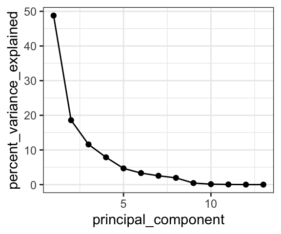
Great! Here is how to read the ordination plot:
When considering one analyte’s vector: the vector’s projected value on an axis shows how much its variance is aligned with that principal component.
When considering two analyte vectors: the angle between two vectors indicates how correlated those two variables are. If they point in the same direction, they are highly correlated. If they meet each other at 90 degrees, they are not very correlated. If they meet at ~180 degrees, they are negatively correlated. If say that one analyte is “1.9” with respect to dimension 2 and another is “-1.9” with respect to dimension 2. Let’s also say that these vectors are ~“0” with respect to dimension 1.
With the ordination plot above, we can now see that the abundances of K, Cl, Br, and Na are the major contributors of variance to the first principal component (or the first dimension). The abundances of these elements are what make White Fish Lake and North Killeak Lake different from the other lakes. We can also see that the abundances of N, S, and Ca are the major contributors to variance in the second dimension, which means that these elements ar what set Wild Lake, Iniakuk Lake, Walker Lake, and several other lakes in GAAR park apart from the rest of the lakes in the data set. It slightly easier to understand this if we look at an overlay of the two plots, which is often called a “biplot”:
AK_lakes_pca <- runMatrixAnalysis(
data = alaska_lake_data,
analysis = c("pca"),
column_w_names_of_multiple_analytes = "element",
column_w_values_for_multiple_analytes = "mg_per_L",
columns_w_values_for_single_analyte = c("water_temp", "pH"),
columns_w_additional_analyte_info = "element_type",
columns_w_sample_ID_info = c("lake", "park"),
scale_variance = TRUE
)
## Replacing NAs in your data with mean
AK_lakes_pca_ord <- runMatrixAnalysis(
data = alaska_lake_data,
analysis = c("pca_ord"),
column_w_names_of_multiple_analytes = "element",
column_w_values_for_multiple_analytes = "mg_per_L",
columns_w_values_for_single_analyte = c("water_temp", "pH"),
columns_w_additional_analyte_info = "element_type",
columns_w_sample_ID_info = c("lake", "park")
)
## Replacing NAs in your data with mean
ggplot() +
geom_point(
data = AK_lakes_pca,
aes(x = Dim.1, y = Dim.2, fill = park), shape = 21, size = 4, alpha = 0.8
) +
# geom_label_repel(aes(label = lake), alpha = 0.5) +
geom_segment(
data = AK_lakes_pca_ord,
aes(x = 0, y = 0, xend = Dim.1, yend = Dim.2, color = analyte),
size = 1
) +
scale_color_manual(values = discrete_palette) +
theme_classic()Note that you do not have to plot ordination data as a circular layout of segments. Sometimes it is much easier to plot (and interpret!) alternatives:
AK_lakes_pca_ord %>%
ggplot(aes(x = Dim.1, y = analyte)) +
geom_point(aes(fill = analyte), shape = 22, size = 3) +
scale_fill_manual(values = discrete_palette) +
theme_bw()
principal components
We also can access information about the how much of the variance in the data set is explained by each principal component, and we can plot that using ggplot:
AK_lakes_pca_dim <- runMatrixAnalysis(
data = alaska_lake_data,
analysis = c("pca_dim"),
column_w_names_of_multiple_analytes = "element",
column_w_values_for_multiple_analytes = "mg_per_L",
columns_w_values_for_single_analyte = c("water_temp", "pH"),
columns_w_additional_analyte_info = "element_type",
columns_w_sample_ID_info = c("lake", "park")
)
## Replacing NAs in your data with mean
head(AK_lakes_pca_dim)
## # A tibble: 6 × 2
## principal_component percent_variance_explained
## <dbl> <dbl>
## 1 1 48.8
## 2 2 18.6
## 3 3 11.6
## 4 4 7.88
## 5 5 4.68
## 6 6 3.33
ggplot(
data = AK_lakes_pca_dim,
aes(x = principal_component, y = percent_variance_explained)
) +
geom_line() +
geom_point() +
theme_bw()
Cool! We can see that the first principal component retains nearly 50% of the variance in the original dataset, while the second dimension contains only about 20%. We can derive an important notion about PCA visualization from this: the scales on the two axes need to be the same for distances between points in the x and y directions to be comparable. This can be accomplished using coord_fixed() as an addition to your ggplots.
exercises
In this set of exercises, as you are filling out the runMatrixAnalysis() template, you can use the colnames() function to help you specify a long list of column names rather than typing them out by hand. For example, in the periodic table data set, we can refer to a set of columns (columns 10 through 20) with the following command:
colnames(periodic_table_subset)[10:20]
## [1] "electronegativity_pauling"
## [2] "first_ionization_poten_eV"
## [3] "second_ionization_poten_eV"
## [4] "third_ionization_poten_eV"
## [5] "electron_affinity_eV"
## [6] "atomic_radius_ang"
## [7] "ionic_radius_ang"
## [8] "covalent_radius_ang"
## [9] "atomic_volume_cm3_per_mol"
## [10] "electrical_conductivity_mho_per_cm"
## [11] "specific_heat_J_per_g_K"
colnames(periodic_table_subset)[c(18:20, 23:25)]
## [1] "atomic_volume_cm3_per_mol"
## [2] "electrical_conductivity_mho_per_cm"
## [3] "specific_heat_J_per_g_K"
## [4] "thermal_conductivity_W_per_m_K"
## [5] "polarizability_A_cubed"
## [6] "heat_atomization_kJ_per_mol"We can use that command in the template, as in the example below. With the notation colnames(periodic_table_subset)[c(5:7,9:25)], we can mark columns 5 - 7 and 9 - 25 as columns_w_values_for_single_analyte (note what happens when you run c(5:7,9:25) in the console, and what happens when you run colnames(periodic_table_subset)[c(5:7,9:25)] in the console). With the notation colnames(periodic_table_subset)[c(1:4, 8)] we can mark columns 1 - 4 and column 8 as columns_w_sample_ID_info (note what happens when you run c(1:4, 8) in the console, and what happens when you run colnames(periodic_table_subset)[c(1:4, 8)] in the console).
human metabolomics
For these questions, work with a dataset describing metabolomics data (i.e. abundances of > 100 different biochemicals) from each of 93 human patients, some of which have Chronic Kidney Disease. Your task is to discover a biomarker for Chronic Kidney Disease. This means that you will need to determine a metabolite whose abundance is strongly associated with the disease. To do this you should complete the following:
- Run a PCA analysis on
metabolomics_data(i.e.runMatrixAnalysis()withanalysis = "pca") - Plot the results of the analysis to determine which principal component (i.e. dimension) separates the healthy and kidney_disease samples.
- Obtain the ordination plot coordinates for the analytes in the PCA analysis (i.e.
runMatrixAnalysis()withanalysis = "pca_ord"). In your own words, how does this plot correspond to the original data set? - Visualize the ordination plot and determine which of the analytes are strongly associated with the principal component (i.e. dimension) separates the healthy and kidney_disease samples.
- Bingo! These analytes are associated with Chronic Kidney Disease and could be biomarkers for such.
- Complete this PCA analysis by creating a scree plot (i.e. use
analysis = "pca_dim"). In your own words, what does this plot mean?
grape vine chemistry
For this set of quesions, work with a dataset describing metabolomics data (i.e. abundances of > 100 different biochemicals) from 5 different wine grape varieties. Your task is to discover a biomarker for Chardonnay and a biomarker for Cabernet Sauvignon. This means that you will need to identify two metabolites, each of which are associated with one of those two grape varieties. To do this you should complete the following:
- Run a PCA analysis on
wine_grape_data(i.e.runMatrixAnalysis()withanalysis = "pca") - Plot the results of the analysis to determine which principal component (i.e. dimension) separates the Chardonnay samples from the other varieties and the Cabernet Sauvignon samples from the other varieties.
- Obtain the ordination plot coordinates for the analytes in the PCA analysis (i.e.
runMatrixAnalysis()withanalysis = "pca_ord"). In your own words, how does this plot correspond to the original data set? - Visualize the ordination plot and determine which of the analytes are strongly associated with the principal component (i.e. dimension) separates the Chardonnay samples from the other varieties and the Cabernet Sauvignon samples from the other varieties.
- Bingo! These analytes are associated with those varieites and could be biomarkers for such.
- Complete this PCA analysis by creating a scree plot (i.e. use
analysis = "pca_dim"). In your own words, what does this plot mean?
further reading
tsne and umap
set.seed(235)
runMatrixAnalysis(
data = hops_components,
analysis = "pca",
column_w_names_of_multiple_analytes = NULL,
column_w_values_for_multiple_analytes = NULL,
columns_w_values_for_single_analyte = colnames(hops_components)[c(5:12)],
columns_w_additional_analyte_info = NULL,
columns_w_sample_ID_info = colnames(hops_components)[c(1:4)],
na_replacement = "mean"
) -> pca_data
pca_data$technique <- "pca_data"
colnames(pca_data) <- gsub("\\.", "_", colnames(pca_data))
pca_data$Dim_1 <- as.numeric(scale(pca_data$Dim_1))
pca_data$Dim_2 <- as.numeric(scale(pca_data$Dim_2))
runMatrixAnalysis(
data = hops_components,
analysis = "umap",
column_w_names_of_multiple_analytes = NULL,
column_w_values_for_multiple_analytes = NULL,
columns_w_values_for_single_analyte = colnames(hops_components)[c(5:12)],
columns_w_additional_analyte_info = NULL,
columns_w_sample_ID_info = colnames(hops_components)[c(1:4)],
na_replacement = "mean"
) -> umap_data
umap_data$technique <- "umap_data"
umap_data$Dim_1 <- as.numeric(scale(umap_data$Dim_1))
umap_data$Dim_2 <- as.numeric(scale(umap_data$Dim_2))
runMatrixAnalysis(
data = hops_components,
analysis = "tsne",
column_w_names_of_multiple_analytes = NULL,
column_w_values_for_multiple_analytes = NULL,
columns_w_values_for_single_analyte = colnames(hops_components)[c(5:12)],
columns_w_additional_analyte_info = NULL,
columns_w_sample_ID_info = colnames(hops_components)[c(1:4)],
na_replacement = "mean"
) -> tsne_data
tsne_data$technique <- "tsne_data"
tsne_data$Dim_1 <- as.numeric(scale(tsne_data$Dim_1))
tsne_data$Dim_2 <- as.numeric(scale(tsne_data$Dim_2))
data <- rbind(pca_data, umap_data, tsne_data)
p1 <- ggplot(data) +
geom_point(aes(x = Dim_1, y = Dim_2, fill = hop_origin), shape = 21, size= 4) +
facet_grid(technique~., scales = "free") +
scale_fill_brewer(palette = "Set1")
p2 <- ggplot(data) +
geom_point(aes(x = Dim_1, y = Dim_2, fill = hop_brewing_usage), shape = 21, size= 4) +
facet_grid(technique~., scales = "free") +
scale_fill_brewer(palette = "Set1")
p1 + p2
clustering
heirarchical clustering
theory
“Which of my samples are most closely related?”
So far we have been looking at how to plot raw data, summarize data, and reduce a data set’s dimensionality. It’s time to look at how to identify relationships between the samples in our data sets. For example: in the Alaska lakes dataset, which lake is most similar, chemically speaking, to Lake Narvakrak? Answering this requires calculating numeric distances between samples based on their chemical properties. For this, the first thing we need is a distance matrix:

Please note that we can get distance matrices directly from runMatrixAnalysis by specifying analysis = "dist":
dist <- runMatrixAnalysis(
data = alaska_lake_data,
analysis = c("dist"),
column_w_names_of_multiple_analytes = "element",
column_w_values_for_multiple_analytes = "mg_per_L",
columns_w_values_for_single_analyte = c("water_temp", "pH"),
columns_w_additional_analyte_info = "element_type",
columns_w_sample_ID_info = c("lake", "park")
)
## Replacing NAs in your data with mean
as.matrix(dist)[1:3,1:3]
## Devil_Mountain_Lake_BELA
## Devil_Mountain_Lake_BELA 0.000000
## Imuruk_Lake_BELA 3.672034
## Kuzitrin_Lake_BELA 1.663147
## Imuruk_Lake_BELA
## Devil_Mountain_Lake_BELA 3.672034
## Imuruk_Lake_BELA 0.000000
## Kuzitrin_Lake_BELA 3.062381
## Kuzitrin_Lake_BELA
## Devil_Mountain_Lake_BELA 1.663147
## Imuruk_Lake_BELA 3.062381
## Kuzitrin_Lake_BELA 0.000000There is more that we can do with distance matrices though, lots more. Let’s start by looking at an example of hierarchical clustering. For this, we just need to tell runMatrixAnalysis() to use analysis = "hclust":
AK_lakes_clustered <- runMatrixAnalysis(
data = alaska_lake_data,
analysis = "hclust",
column_w_names_of_multiple_analytes = "element",
column_w_values_for_multiple_analytes = "mg_per_L",
columns_w_values_for_single_analyte = c("water_temp", "pH"),
columns_w_additional_analyte_info = "element_type",
columns_w_sample_ID_info = c("lake", "park"),
na_replacement = "mean"
)
## Replacing NAs in your data with mean
AK_lakes_clustered
## # A tibble: 39 × 25
## sample_unique_ID lake park parent node branch.length
## <chr> <chr> <chr> <int> <int> <dbl>
## 1 Devil_Mountain_La… Devi… BELA 33 1 0.987
## 2 Imuruk_Lake_BELA Imur… BELA 39 2 0.820
## 3 Kuzitrin_Lake_BELA Kuzi… BELA 38 3 0.703
## 4 Lava_Lake_BELA Lava… BELA 31 4 0.743
## 5 North_Killeak_Lak… Nort… BELA 21 5 5.62
## 6 White_Fish_Lake_B… Whit… BELA 22 6 3.89
## 7 Iniakuk_Lake_GAAR Inia… GAAR 28 7 1.25
## 8 Kurupa_Lake_GAAR Kuru… GAAR 35 8 0.954
## 9 Lake_Matcharak_GA… Lake… GAAR 35 9 0.954
## 10 Lake_Selby_GAAR Lake… GAAR 36 10 1.12
## # ℹ 29 more rows
## # ℹ 19 more variables: label <chr>, isTip <lgl>, x <dbl>,
## # y <dbl>, branch <dbl>, angle <dbl>, water_temp <dbl>,
## # pH <dbl>, C <dbl>, N <dbl>, P <dbl>, Cl <dbl>, S <dbl>,
## # F <dbl>, Br <dbl>, Na <dbl>, K <dbl>, Ca <dbl>,
## # Mg <dbl>It works! Now we can plot our cluster diagram with a ggplot add-on called ggtree. We’ve seen that ggplot takes a “data” argument (i.e. ggplot(data = <some_data>) + geom_*() etc.). In contrast, ggtree takes an argument called tr, though if you’re using the runMatrixAnalysis() function, you can treat these two (data and tr) the same, so, use: ggtree(tr = <output_from_runMatrixAnalysis>) + geom_*() etc.
Note that ggtree also comes with several great new geoms: geom_tiplab() and geom_tippoint(). Let’s try those out:
library(ggtree)
AK_lakes_clustered %>%
ggtree() +
geom_tiplab() +
geom_tippoint() +
theme_classic()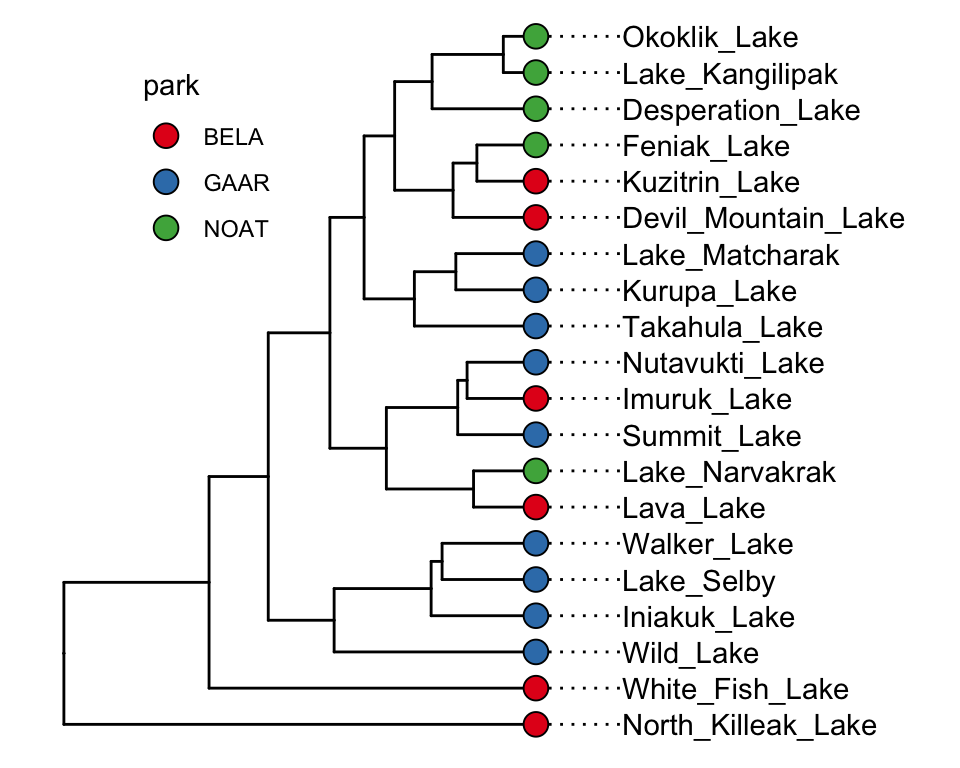
Cool! Though that plot could use some tweaking… let’s try:
AK_lakes_clustered %>%
ggtree() +
geom_tiplab(aes(label = lake), offset = 1, align = TRUE) +
geom_tippoint(shape = 21, aes(fill = park), size = 4) +
scale_x_continuous(limits = c(0,10)) +
scale_fill_brewer(palette = "Set1") +
# theme_classic() +
theme(
legend.position = c(0.2,0.8)
)
Very nice!
further reading
For more information on plotting annotated trees, see: https://yulab-smu.top/treedata-book/chapter10.html.
For more on clustering, see: https://ryanwingate.com/intro-to-machine-learning/unsupervised/hierarchical-and-density-based-clustering/.
exercises
For this set of exercises, please use runMatrixAnalysis() to run and visualize a hierarchical cluster analysis with each of the main datasets that we have worked with so far, except for NY_trees. This means: algae_data (which algae strains are most similar to each other?), alaska_lake_data (which lakes are most similar to each other?). and solvents (which solvents are most similar to each other?). It also means you should use the periodic table (which elements are most similar to each other?), though please don’t use the whole periodic table, rather, use periodic_table_subset. Please also conduct a heirarchical clustering analysis for a dataset of your own choice that is not provided by the source() code. For each of these, create (i) a tree diagram that shows how the “samples” in each data set are related to each other based on the numerical data associated with them, (ii) a caption for each diagram, and (iii) describe, in two or so sentences, an interesting trend you see in the diagram. You can ignore columns that contain categorical data, or you can list those columns as “additional_analyte_info”.
For this assignment, you may again find the colnames() function and square bracket-subsetting useful. It will list all or a subset of the column names in a dataset for you. For example:
colnames(solvents)
## [1] "solvent" "formula"
## [3] "boiling_point" "melting_point"
## [5] "density" "miscible_with_water"
## [7] "solubility_in_water" "relative_polarity"
## [9] "vapor_pressure" "CAS_number"
## [11] "formula_weight" "refractive_index"
## [13] "specific_gravity" "category"
colnames(solvents)[1:3]
## [1] "solvent" "formula" "boiling_point"
colnames(solvents)[c(1,5,7)]
## [1] "solvent" "density"
## [3] "solubility_in_water"k-means and dbscan
“Do my samples fall into definable clusters?”
theory
One of the questions we’ve been asking is “which of my samples are most closely related?”. We’ve been answering that question using clustering. However, now that we know how to run principal components analyses, we can use another approach. This alternative approach is called k-means, and can help us decide how to assign our data into clusters. It is generally desirable to have a small number of clusters, however, this must be balanced by not having the variance within each cluster be too big. To strike this balance point, the elbow method is used. For it, we must first determine the maximum within-group variance at each possible number of clusters. An illustration of this is shown in A below:

One we know within-group variances, we find the “elbow” point - the point with minimum angle theta - thus picking the outcome with a good balance of cluster number and within-cluster variance (illustrated above in B and C.)
Let’s try k-means using runMatrixAnalysis. For this example, let’s run it on the PCA projection of the alaska lakes data set. We can set analysis = "kmeans". When we do this, an application will load that will show us the threshold value for the number of clusters we want. We set the number of clusters and then close the app. In the context of markdown document, simply provide the number of clusters to the parameters argument:
alaska_lake_data_pca <- runMatrixAnalysis(
data = alaska_lake_data,
analysis = c("pca"),
column_w_names_of_multiple_analytes = "element",
column_w_values_for_multiple_analytes = "mg_per_L",
columns_w_values_for_single_analyte = c("water_temp", "pH"),
columns_w_additional_analyte_info = "element_type",
columns_w_sample_ID_info = c("lake", "park")
)
## Replacing NAs in your data with mean
alaska_lake_data_pca_clusters <- runMatrixAnalysis(
data = alaska_lake_data_pca,
analysis = c("kmeans"),
parameters = c(5),
column_w_names_of_multiple_analytes = NULL,
column_w_values_for_multiple_analytes = NULL,
columns_w_values_for_single_analyte = c("Dim.1", "Dim.2"),
columns_w_sample_ID_info = "sample_unique_ID"
)
## Using 5 as a value for cluster_number.
alaska_lake_data_pca_clusters <- left_join(alaska_lake_data_pca_clusters, alaska_lake_data_pca) We can plot the results and color them according to the group that kmeans suggested. We can also highlight groups using geom_mark_ellipse. Note that it is recommended to specify both fill and label for geom_mark_ellipse:
alaska_lake_data_pca_clusters$cluster <- factor(alaska_lake_data_pca_clusters$cluster)
ggplot() +
geom_point(
data = alaska_lake_data_pca_clusters,
aes(x = Dim.1, y = Dim.2, fill = cluster), shape = 21, size = 5, alpha = 0.6
) +
geom_mark_ellipse(
data = alaska_lake_data_pca_clusters,
aes(x = Dim.1, y = Dim.2, label = cluster, fill = cluster), alpha = 0.2
) +
theme_classic() +
coord_cartesian(xlim = c(-7,12), ylim = c(-4,5)) +
scale_fill_manual(values = discrete_palette) There is another method to define clusters that we call dbscan. In this method, not all points are necessarily assigned to a cluster, and we define clusters according to a set of parameters, instead of simply defining the number of clusteres, as in kmeans. In interactive mode, runMatrixAnalysis() will again load an interactive means of selecting parameters for defining dbscan clusters (“k”, and “threshold”). In the context of markdown document, simply provide “k” and “threshold” to the parameters argument:
alaska_lake_data_pca <- runMatrixAnalysis(
data = alaska_lake_data,
analysis = c("pca"),
column_w_names_of_multiple_analytes = "element",
column_w_values_for_multiple_analytes = "mg_per_L",
columns_w_values_for_single_analyte = c("water_temp", "pH"),
columns_w_additional_analyte_info = "element_type",
columns_w_sample_ID_info = c("lake", "park")
)
## Replacing NAs in your data with mean
alaska_lake_data_pca_clusters <- runMatrixAnalysis(
data = alaska_lake_data_pca,
analysis = c("dbscan"),
parameters = c(4, 0.45),
column_w_names_of_multiple_analytes = NULL,
column_w_values_for_multiple_analytes = NULL,
columns_w_values_for_single_analyte = c("Dim.1", "Dim.2"),
columns_w_sample_ID_info = "sample_unique_ID"
)
## Using 4 as a value for k.
## Using 0.45 as a value for threshold.
alaska_lake_data_pca_clusters <- left_join(alaska_lake_data_pca_clusters, alaska_lake_data_pca)We can make the plot in the same way, but please note that to get geom_mark_ellipse to omit the ellipse for NAs you need to feed it data without NAs:
alaska_lake_data_pca_clusters$cluster <- factor(alaska_lake_data_pca_clusters$cluster)
ggplot() +
geom_point(
data = alaska_lake_data_pca_clusters,
aes(x = Dim.1, y = Dim.2, fill = cluster), shape = 21, size = 5, alpha = 0.6
) +
geom_mark_ellipse(
data = drop_na(alaska_lake_data_pca_clusters),
aes(x = Dim.1, y = Dim.2, label = cluster, fill = cluster), alpha = 0.2
) +
theme_classic() +
coord_cartesian(xlim = c(-7,12), ylim = c(-4,5)) +
scale_fill_manual(values = discrete_palette) summarize by cluster
One more important point: when using kmeans or dbscan, we can use the clusters as groupings for summary statistics. For example, suppose we want to see the differences in abundances of certain chemicals among the clusters:
alaska_lake_data_pca <- runMatrixAnalysis(
data = alaska_lake_data,
analysis = c("pca"),
column_w_names_of_multiple_analytes = "element",
column_w_values_for_multiple_analytes = "mg_per_L",
columns_w_values_for_single_analyte = c("water_temp", "pH"),
columns_w_additional_analyte_info = "element_type",
columns_w_sample_ID_info = c("lake", "park")
)
## Replacing NAs in your data with mean
alaska_lake_data_pca_clusters <- runMatrixAnalysis(
data = alaska_lake_data_pca,
analysis = c("dbscan"),
parameters = c(4, 0.45),
column_w_names_of_multiple_analytes = NULL,
column_w_values_for_multiple_analytes = NULL,
columns_w_values_for_single_analyte = c("Dim.1", "Dim.2"),
columns_w_sample_ID_info = "sample_unique_ID",
columns_w_additional_analyte_info = colnames(alaska_lake_data_pca)[6:18]
)
## Using 4 as a value for k.
## Using 0.45 as a value for threshold.
alaska_lake_data_pca_clusters <- left_join(alaska_lake_data_pca_clusters, alaska_lake_data_pca)
alaska_lake_data_pca_clusters %>%
select(cluster, S, Ca) %>%
pivot_longer(cols = c(2,3), names_to = "analyte", values_to = "mg_per_L") %>%
drop_na() %>%
group_by(cluster, analyte) -> alaska_lake_data_pca_clusters_clean
plot_2 <- ggplot() +
geom_col(
data = summarize(
alaska_lake_data_pca_clusters_clean,
mean = mean(mg_per_L), sd = sd(mg_per_L)
),
aes(x = cluster, y = mean, fill = cluster),
color = "black", alpha = 0.6
) +
geom_errorbar(
data = summarize(
alaska_lake_data_pca_clusters_clean,
mean = mean(mg_per_L), sd = sd(mg_per_L)
),
aes(x = cluster, ymin = mean-sd, ymax = mean+sd, fill = cluster),
color = "black", alpha = 0.6, width = 0.5, size = 1
) +
facet_grid(.~analyte) + theme_bw() +
geom_jitter(
data = alaska_lake_data_pca_clusters_clean,
aes(x = cluster, y = mg_per_L, fill = cluster), width = 0.05,
shape = 21
) +
scale_fill_manual(values = discrete_palette)
plot_1<- ggplot() +
geom_point(
data = alaska_lake_data_pca_clusters,
aes(x = Dim.1, y = Dim.2, fill = cluster), shape = 21, size = 5, alpha = 0.6
) +
geom_mark_ellipse(
data = drop_na(alaska_lake_data_pca_clusters),
aes(x = Dim.1, y = Dim.2, label = cluster, fill = cluster), alpha = 0.2
) +
theme_classic() + coord_cartesian(xlim = c(-7,12), ylim = c(-4,5)) +
scale_fill_manual(values = discrete_palette)
plot_1 + plot_2
further reading
http://www.sthda.com/english/wiki/wiki.php?id_contents=7940
{kind=link}
https://www.geeksforgeeks.org/dbscan-clustering-in-r-programming/
exercises
For this set of exercises, please use the dataset hawaii_aquifers, available after you run the source() command. Do the following:
Run a PCA analysis on the data set and plot the results.
Create an ordination plot and identify one analyte that varies with Dim.1 and one analyte that varies with Dim.2 (these are your “variables of interest”).
Run kmeans clustering on your PCA output. Create a set of clusters that seems to appropriately subdivide the data set.
Use the clusters defined by kmeans as groupings on which to run summary statistics for your two variables of interest.
Create a plot with four subpanels that shows: (i) the PCA analysis (colored by kmeans clusters), (ii) the ordination analysis, and (iii) the summary statistics for your two variables of interest within the kmeans groups. Please note that subpanel plots can be created by sending ggplots to their own objects and then adding those objects together. Please see the subsection in the data visualization chapter on subplots.
Run dbscan clustering on your PCA output. Create a set of clusters that seems to appropriately subdivide the data set.
Use the clusters defined by dbscan as groupings on which to run summary statistics for your two variables of interest.
Create a plot with four subpanels that shows: (i) the PCA analysis (colored by dbscan clusters), (ii) the ordination analysis, and (iii) the summary statistics for your two variables of interest within the dbscan groups.
models
univariate
Next on our quest to develop our abilities in analytical data exploration is modeling. We will start with some of the simplest models - linear models. There are a variety of ways to build linear models in R, but we will use a function called buildLinearModel. To use it, we simply give it our data, and tell it which to sets of values we want to compare. To tell it what we want to compare, we give it a formula in the form of Y = M x X + B, however, the B term and the M are implicit, so all we need to tell it is Y = X.
Let’s look at an example. Suppose we want to know if the abundances of ADP and AMP are related in our metabolomics dataset:
ggplot(metabolomics_data) +
geom_point(aes(x = AMP, y = ADP))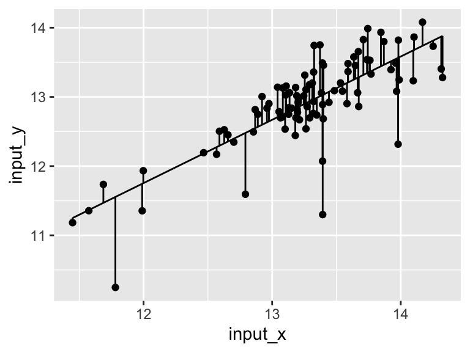
It looks like there might be a relationship! Let’s build a linear model for that relationship:
model <- buildLinearModel(
data = metabolomics_data,
formula = "ADP = AMP"
)
str(model, strict.width = "cut")
## List of 2
## $ metrics:'data.frame': 6 obs. of 5 variables:
## ..$ variable: chr [1:6] "(Intercept)" "AMP" "median_res"..
## ..$ value : num [1:6] 0.7842 0.9142 0.0415 40.3224 15...
## ..$ std_err : chr [1:6] "1.0056" "0.0757" NA NA ...
## ..$ type : chr [1:6] "coefficient" "coefficient" "st"..
## ..$ p_value : chr [1:6] "0.4375" "0" NA NA ...
## $ data :'data.frame': 92 obs. of 7 variables:
## ..$ input_x : num [1:92] 13.2 13.5 14.3 13.3 12 ...
## ..$ input_y : num [1:92] 12.8 13.1 13.3 13.2 11.9 ...
## ..$ ADP : num [1:92] 12.8 13.1 13.3 13.2 11.9 ...
## ..$ AMP : num [1:92] 13.2 13.5 14.3 13.3 12 ...
## ..$ residuals: num [1:92] 0.0312 -0.0217 -0.6014 0.2458 ..
## ..$ model_y : num [1:92] 12.8 13.1 13.9 13 11.8 ...
## ..$ model_x : num [1:92] 13.2 13.5 14.3 13.3 12 ...The model consists of two thigs: metrics and data. Let’s look at the metrics:
model$metrics
## variable value std_err type p_value
## 1 (Intercept) 0.7842 1.0056 coefficient 0.4375
## 2 AMP 0.9142 0.0757 coefficient 0
## 3 median_residual 0.0415 <NA> statistic <NA>
## 4 total_sum_squares 40.3224 <NA> statistic <NA>
## 5 residual_sum_squares 15.3901 <NA> statistic <NA>
## 6 r_squared 0.6183 <NA> statistic <NA>It shows us the intercept (b), the variable for AMP (i.e. the slope, m), as well some other things (we will talk about them in a second). The other thing the model contains is the data (below). This includes the input_x and y values. The raw values for ADP and AMP, the residuals (see below for details), and the x and y values generated by the model.
head(model$data)
## input_x input_y ADP AMP residuals model_y
## 1 13.15029 12.83791 12.83791 13.15029 0.03119000 12.80672
## 2 13.48362 13.08980 13.08980 13.48362 -0.02165141 13.11146
## 3 14.32515 13.27943 13.27943 14.32515 -0.60138528 13.88082
## 4 13.31191 13.20029 13.20029 13.31191 0.24581244 12.95448
## 5 11.99764 11.93350 11.93350 11.99764 0.18057517 11.75293
## 6 12.95966 12.83649 12.83649 12.95966 0.20405638 12.63243
## model_x
## 1 13.15029
## 2 13.48362
## 3 14.32515
## 4 13.31191
## 5 11.99764
## 6 12.95966Let’s plot the model!
ggplot(model$data) +
geom_point(aes(x = input_x, y = input_y)) +
geom_line(aes(x = model_x, y = model_y))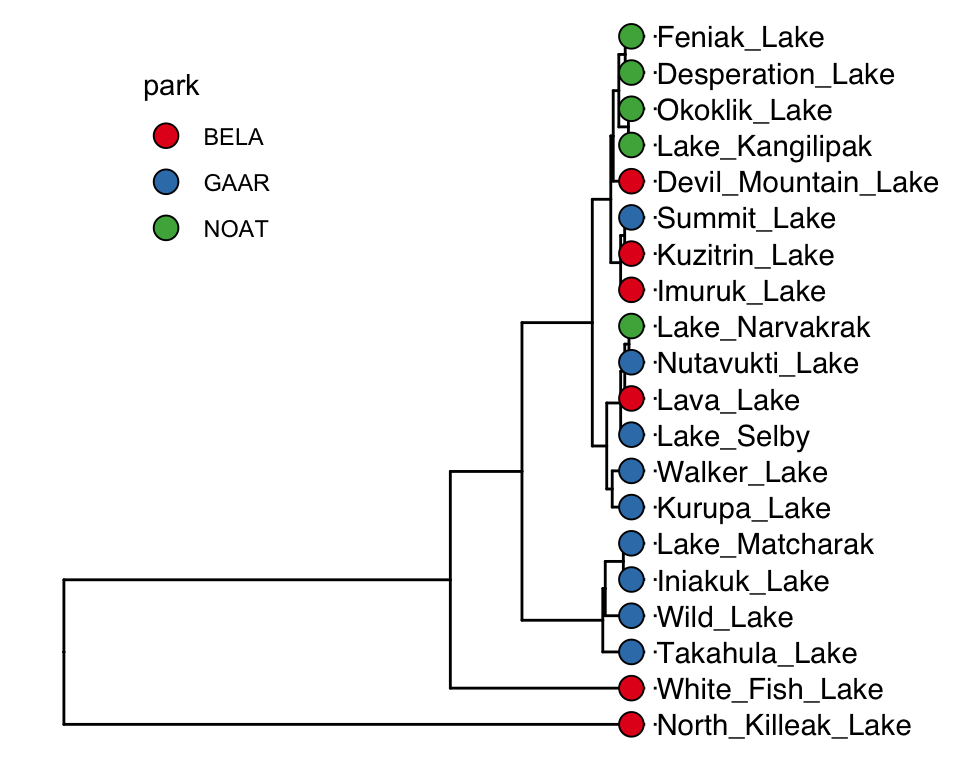
Very good. Now let’s talk about evaluating the quality of our model. For this we need some means of assessing how well our line fits our data. We will use residuals - the distance between each of our points and our line.
ggplot(model$data) +
geom_point(aes(x = input_x, y = input_y)) +
geom_line(aes(x = model_x, y = model_y)) +
geom_segment(aes(x = input_x, y = input_y, xend = input_x, yend = model_y))
We can calculate the sum of the squared residuals:
sum(
(model$data$input_y - model$data$model_y)^2
, na.rm = TRUE)
## [1] 15.3901415.39! Let’s call that the “residual sum of the squares”. So. 15.39.. does that mean our model is good? I don’t know. We have to compare that number to something. Let’s compare it to a super simple model that is just defined by the mean y value of the input data.
ggplot(metabolomics_data) +
geom_point(aes(x = AMP, y = ADP)) +
geom_hline(aes(yintercept = mean(ADP, na.rm = TRUE)))A pretty bad model, I agree. How much better is our linear model that the flat line model? Let’s create a measure of the distance between each point and the point predicted for that same x value on the model:
sum(
(metabolomics_data$ADP - mean(metabolomics_data$ADP, na.rm = TRUE))^2
, na.rm = TRUE)
## [1] 40.32239
ggplot(metabolomics_data) +
geom_point(aes(x = AMP, y = ADP)) +
geom_hline(aes(yintercept = mean(ADP, na.rm = TRUE))) +
geom_segment(aes(x = AMP, y = ADP, xend = AMP, yend = mean(ADP, na.rm = TRUE)))
40.32! Wow. Let’s call that the “total sum of the squares”, and now we can compare that to our “residual sum of the squares”:
1-(15.39/40.32)
## [1] 0.61830360.68! Alright. That is our R squared value. It is equal to 1 minus the ratio of the “residual sum of the squares” to the “total sum of the squares”. Now, let’s put it all together and make it pretty:
top <- ggplot(model$data) +
geom_point(aes(x = input_x, y = input_y)) +
geom_line(aes(x = model_x, y = model_y)) +
annotate(geom = "table",
x = 11.4,
y = 16,
label = list(model$metrics)
) +
coord_cartesian(ylim = c(10,16)) +
theme_bw()
bottom <- ggplot(model$data) +
geom_col(
aes(x = input_x, y = residuals),
width = 0.03, color = "black", position = "dodge", alpha = 0.5
) +
theme_bw()
cowplot::plot_grid(top, bottom, ncol = 1, labels = "AUTO", rel_heights = c(2,1))
multivariate
model1 <- buildLinearModel(metabolomics_data, formula = "ADP = AMP")
model1[1]
## $metrics
## variable value std_err type p_value
## 1 (Intercept) 0.7842 1.0056 coefficient 0.4375
## 2 AMP 0.9142 0.0757 coefficient 0
## 3 median_residual 0.0415 <NA> statistic <NA>
## 4 total_sum_squares 40.3224 <NA> statistic <NA>
## 5 residual_sum_squares 15.3901 <NA> statistic <NA>
## 6 r_squared 0.6183 <NA> statistic <NA>
model2 <- buildLinearModel(metabolomics_data, formula = "ADP = AMP + IMP")
model2[1]
## $metrics
## variable value std_err type p_value
## 1 (Intercept) 2.0057 0.9222 coefficient 0.0323
## 2 AMP 0.6201 0.0907 coefficient 0
## 3 IMP 0.2303 0.0606 coefficient 3e-04
## 4 median_residual 0.0462 <NA> statistic <NA>
## 5 total_sum_squares 40.3224 <NA> statistic <NA>
## 6 residual_sum_squares 11.6145 <NA> statistic <NA>
## 7 r_squared 0.6494 <NA> statistic <NA>
plot1 <- ggplot() +
geom_point(
data = metabolomics_data,
aes(x = (AMP*0.9142) + 0.7842, y = ADP),
fill = "gold", shape = 21, color = "black", size = 4
) +
geom_segment(
aes(x = 10, y = 10, xend = 15, yend = 15),
color = "black"
) +
annotate(
geom = "table",
x = 10,
y = 15,
label = list(model1$metrics)
) +
theme_bw()
plot2 <- ggplot() +
geom_point(
data = metabolomics_data,
aes(x = (AMP*0.6201) + (IMP*0.2303) + 2.0057, y = ADP),
fill = "maroon", shape = 21, color = "black", size = 4
) +
annotate(
geom = "table",
x = 10,
y = 15,
label = list(model2$metrics)
) +
geom_segment(
aes(x = 10, y = 10, xend = 15, yend = 15),
color = "black"
) +
theme_bw()
plot1/plot2
exercises
To practice creating linear models, try the following:
Choose one of the datasets we have used so far, and run a principal components analysis on it. Note that the output of the analysis when you run “pca_ord” contains the Dimension 1 coordinate “Dim.1” for each sample, as well as the abundance of each analyte in that sample.
Using the information from the ordination plot, identify two analytes: one that has a variance that is strongly and positively correlated with the first principal component (i.e. dimension 1), and one that has a variance that is slightly less strongly, but still positively correlated with the first principal component. Using
buildLinearModel, create and plot two linear models, one that regresses each of those analytes against dimension 1. Which has the greater r-squared value? Based on what you know about PCA, does that make sense?Choose two analytes: one should be one of the analytes from question 2 above, the other should be an analyte that, according to your PCA ordination analysis, is negatively correlated with the first principal component. Using
buildLinearModelcreate plots showing how those two analytes are correlated with dimension 1. One should be positively correlated, and the other negatively correlated. Enhance the plots by including in them a visual represetation of the residuals.
further reading
comparing means

“Are these two things the same?”
Often, we want to know if our study subjects contain different amounts of certain analytes. For example, “Does this lake over here contain more potassium than that lake over there?” For this, we need statistical tests. Here, we will have a look at comparing mean values for analyte abundance in situations with two samples and in situations with more than two samples.
I find many of the concepts discussed in this chapter easier to think about with an example in mind. For that, suppose that you are an analytical chemist on Hawaii that is studying the chemistry of the island’s aquifers. you have the data set hawaii_aquifers. You can see in the output below the structure of the data set - we have 990 measurements of a 9 different analytes in multiple wells that draw on a set of 10 aquifers.
hawaii_aquifers
## # A tibble: 954 × 6
## aquifer_code well_name longitude latitude analyte
## <chr> <chr> <dbl> <dbl> <chr>
## 1 aquifer_1 Alewa_Heights_Sp… NA NA SiO2
## 2 aquifer_1 Alewa_Heights_Sp… NA NA Cl
## 3 aquifer_1 Alewa_Heights_Sp… NA NA Mg
## 4 aquifer_1 Alewa_Heights_Sp… NA NA Na
## 5 aquifer_1 Alewa_Heights_Sp… NA NA K
## 6 aquifer_1 Alewa_Heights_Sp… NA NA SO4
## 7 aquifer_1 Alewa_Heights_Sp… NA NA HCO3
## 8 aquifer_1 Alewa_Heights_Sp… NA NA dissol…
## 9 aquifer_1 Alewa_Heights_Sp… NA NA Ca
## 10 aquifer_1 Beretania_High_S… NA NA SiO2
## # ℹ 944 more rows
## # ℹ 1 more variable: abundance <dbl>
unique(hawaii_aquifers$aquifer_code)
## [1] "aquifer_1" "aquifer_2" "aquifer_3" "aquifer_4"
## [5] "aquifer_5" "aquifer_6" "aquifer_7" "aquifer_8"
## [9] "aquifer_9" "aquifer_10"Importantly, there are many wells that draw on each aquifer, as shown in the graph below.
hawaii_aquifers %>%
select(aquifer_code, well_name) %>%
group_by(aquifer_code) %>%
summarize(n_wells = length(unique(well_name))) -> aquifers_summarized
aquifers_summarized
## # A tibble: 10 × 2
## aquifer_code n_wells
## <chr> <int>
## 1 aquifer_1 12
## 2 aquifer_10 7
## 3 aquifer_2 5
## 4 aquifer_3 3
## 5 aquifer_4 16
## 6 aquifer_5 4
## 7 aquifer_6 12
## 8 aquifer_7 9
## 9 aquifer_8 3
## 10 aquifer_9 30
ggplot(aquifers_summarized) + geom_col(aes(x = n_wells, y = aquifer_code))definitions
populations and independent measurements: When we are comparing means, we are comparing two sets of values. It is important to consider where these values came from in the first place. In particular, it is usually useful to think of these values as representatives of larger populations. In the example of our aquifer data set, we can think of the measurements from different wells drawing on the same aquifer as independent measurements of the “population” (i.e. the aquifer).
the null hypothesis: When we conduct a statistical test, we are testing the null hypothesis. The null (think “default”) hypothesis is that there is no difference bewteen the means (hence the name “null”). In the example of our aquifers, let’s say that we’re interested in whether two aquifers have different abundances of potassium - in this case the null hypothesis is that they do not differ, in other words, that they have the same amount of potassium.
the p value: The p value represents the probability of getting data as extreme as our results if the null hypothesis is true. In other words - the p value is the probability that we would observe the differences we did, if in fact there were no differences in the means at all. To continue with our example: suppose we measure potassium levels in 10% of the wells that access each aquifer and find that aquifer_1 has potassium levels of 14 +/- 2 and aquifer_2 has potassium levels of 12 +/- 1. Suppose that we then conduct a statistical test and get a p value of 0.04. This means that, assuming the aquifers have the same magneisum levels (i.e. assuming the null hypothesis is true), there is a 4% chance that we would get the measured values that we did. In other words, IF the aquifers have the same potassium abundance, it is pretty unlikely that we would have obtained the measurements that we did.
Please note that the the p value is not the probability of a detected difference being a false positive. The probability of a false positive requires additional information in order to be calculated. For further discussion please see the end of this chapter.
test selection
There are many different types of statistical tests. Below is a flow chart illustrating how it is recommended that statistical tests be used in this course. You can see that there are three regimes of tests: variance and normality tests (blue), parametric tests (green), and non-parametric tests (orange):

When we are comparing means, we need to first determine what kind of statistical tests we can use with our data. If (i) our data can be reasonably modelled by a normal distribution and (ii) the variances about the two means are similar, then we can use the more powerful “parametric” tests (i.e. tests that will be more likely to detect a difference in means, assuming one exists). If one of these criteria are not met, then we need to use less powerful “non-parametric” tests.
We can check our data for normality and similar variances using the Shapiro test and the Levene test. Let’s use the hawaii_aquifers data as an example, and let’s consider only the element potassium:
K_data <- hawaii_aquifers %>%
filter(analyte == "K")
K_data
## # A tibble: 106 × 6
## aquifer_code well_name longitude latitude analyte
## <chr> <chr> <dbl> <dbl> <chr>
## 1 aquifer_1 Alewa_Heights_Sp… NA NA K
## 2 aquifer_1 Beretania_High_S… NA NA K
## 3 aquifer_1 Beretania_Low_Se… NA NA K
## 4 aquifer_1 Kuliouou_Well -158. 21.3 K
## 5 aquifer_1 Manoa_Well_II -158. 21.3 K
## 6 aquifer_1 Moanalua_Wells_P… -158. 21.4 K
## 7 aquifer_1 Moanalua_Wells_P… -158. 21.4 K
## 8 aquifer_1 Moanalua_Wells_P… -158. 21.4 K
## 9 aquifer_1 Nuuanu_Aerator_W… -158. 21.4 K
## 10 aquifer_1 Palolo_Tunnel -158. 21.3 K
## # ℹ 96 more rows
## # ℹ 1 more variable: abundance <dbl>To work with two means, let’s just look at aquifers 1 and 6:
K_data_1_6 <- K_data %>%
filter(aquifer_code %in% c("aquifer_1", "aquifer_6"))
K_data_1_6
## # A tibble: 24 × 6
## aquifer_code well_name longitude latitude analyte
## <chr> <chr> <dbl> <dbl> <chr>
## 1 aquifer_1 Alewa_Heights_Sp… NA NA K
## 2 aquifer_1 Beretania_High_S… NA NA K
## 3 aquifer_1 Beretania_Low_Se… NA NA K
## 4 aquifer_1 Kuliouou_Well -158. 21.3 K
## 5 aquifer_1 Manoa_Well_II -158. 21.3 K
## 6 aquifer_1 Moanalua_Wells_P… -158. 21.4 K
## 7 aquifer_1 Moanalua_Wells_P… -158. 21.4 K
## 8 aquifer_1 Moanalua_Wells_P… -158. 21.4 K
## 9 aquifer_1 Nuuanu_Aerator_W… -158. 21.4 K
## 10 aquifer_1 Palolo_Tunnel -158. 21.3 K
## # ℹ 14 more rows
## # ℹ 1 more variable: abundance <dbl>
ggplot(K_data_1_6, aes(x = aquifer_code, y = abundance)) +
geom_boxplot() +
geom_point()
Are these data normally distributed? Do they have similar variance? Let’s get a first approximation by looking at a plot:
K_data_1_6 %>%
ggplot(aes(x = abundance)) +
geom_histogram(bins = 30) +
facet_wrap(~aquifer_code) +
geom_density(aes(y = ..density..*10), color = "blue")Based on this graphic, it’s hard to say! Let’s use a statistical test to help. When we want to run the Shaprio test, we are looking to see if each group has normally distributed here (here group is “aquifer_code”, i.e. aquifer_1 and aquifer_6). This means we need to group_by(aquifer_code) before we run the test:
K_data_1_6 %>%
group_by(aquifer_code) %>%
shapiroTest(abundance)
## # A tibble: 2 × 4
## aquifer_code variable statistic p
## <chr> <chr> <dbl> <dbl>
## 1 aquifer_1 abundance 0.885 0.102
## 2 aquifer_6 abundance 0.914 0.239Both p-values are above 0.05! This means that the distributions are not significantly different from a normal distribution. What about the variances about the two means? Are they similar? For this we need a Levene test. With that test, we are not looking within each group, but rather across groups - this means we do NOT need to group_by(aquifer_code) and should specify a y ~ x formula instead:
K_data_1_6 %>%
leveneTest(abundance ~ aquifer_code)
## # A tibble: 1 × 4
## df1 df2 statistic p
## <int> <int> <dbl> <dbl>
## 1 1 22 0.289 0.596The p-value from this test is 0.596! This means that their variances are not significantly different. If their shape is the same (normality) and their variances are the same (equal variances), then the only thing that can be different is their means. This allows us to set up our null hypothesis and calculate the probability of obtaining these different means if the two sets of observations come from an identical source.
two means
Now, since our data passed both test, this means we can use a normal t-test. A t-test is a parametric test. This means that it relies on modelling the data using a normal distribution in order to make comparisons. It is also a powerful test. This means that it is likely to detect a difference in means, assuming one is present. Let’s try it out:
K_data_1_6 %>%
tTest(abundance ~ aquifer_code)
## # A tibble: 1 × 8
## .y. group1 group2 n1 n2 statistic df p
## * <chr> <chr> <chr> <int> <int> <dbl> <dbl> <dbl>
## 1 abundance aquif… aquif… 12 12 -2.75 20.5 0.0121A p-value of 0.012! This is below 0.05, meaning that there is a 95% chance that the two means are different. Suppose that our data had not passed the Shapiro and/or Levene tests. We would then need to use a Wilcox test. The Wilcox test is a non-parametric test, which means that it does not use a normal distribution to model the data in order to make comparisons. This means that is a less powerful test than the t-test, which means that it is less likely to detect a difference in the means, assuming there is one. For fun, let’s try that one out and compare the p-values from the two methods:
K_data_1_6 %>%
wilcoxTest(abundance ~ aquifer_code)
## # A tibble: 1 × 7
## .y. group1 group2 n1 n2 statistic p
## * <chr> <chr> <chr> <int> <int> <dbl> <dbl>
## 1 abundance aquifer_1 aquifer_6 12 12 33.5 0.0282A p-value of 0.028! This is higher than the value given by the t-test (0.012). That is because the Wilcox test is a less powerful test: it is less likely to detect differences in means, assuming they exist.
more than two means
In the previous section we compared two means. What if we want to compare means from more than two study subjects? The first step is again to determine which tests to use. Let’s consider our hawaii aquifer data again, though this time let’s use all the aquifers, not just two:
K_data <- hawaii_aquifers %>%
filter(analyte == "K")
K_data
## # A tibble: 106 × 6
## aquifer_code well_name longitude latitude analyte
## <chr> <chr> <dbl> <dbl> <chr>
## 1 aquifer_1 Alewa_Heights_Sp… NA NA K
## 2 aquifer_1 Beretania_High_S… NA NA K
## 3 aquifer_1 Beretania_Low_Se… NA NA K
## 4 aquifer_1 Kuliouou_Well -158. 21.3 K
## 5 aquifer_1 Manoa_Well_II -158. 21.3 K
## 6 aquifer_1 Moanalua_Wells_P… -158. 21.4 K
## 7 aquifer_1 Moanalua_Wells_P… -158. 21.4 K
## 8 aquifer_1 Moanalua_Wells_P… -158. 21.4 K
## 9 aquifer_1 Nuuanu_Aerator_W… -158. 21.4 K
## 10 aquifer_1 Palolo_Tunnel -158. 21.3 K
## # ℹ 96 more rows
## # ℹ 1 more variable: abundance <dbl>
ggplot(data = K_data, aes(y = aquifer_code, x = abundance)) +
geom_boxplot() +
geom_point(color = "maroon", alpha = 0.6, size = 3)
Let’s check visually to see if each group is normally distributed and to see if they have roughly equal variance:
K_data %>%
group_by(aquifer_code) %>%
ggplot(aes(x = abundance)) +
geom_histogram(bins = 30) +
facet_wrap(~aquifer_code) +
geom_density(aes(y = ..density..*10), colour = "blue")Again, it is somewhat hard to tell visually if these data are normally distributed. It seems pretty likely that they have different variances about the means, but let’s check using the Shapiro and Levene tests. Don’t forget: with the Shaprio test, we are looking within each group and so need to group_by(), with the Levene test, we are looking across groups, and so need to provide a y~x formula:
K_data %>%
group_by(aquifer_code) %>%
shapiroTest(abundance)
## # A tibble: 10 × 4
## aquifer_code variable statistic p
## <chr> <chr> <dbl> <dbl>
## 1 aquifer_1 abundance 0.885 0.102
## 2 aquifer_10 abundance 0.864 0.163
## 3 aquifer_2 abundance 0.913 0.459
## 4 aquifer_3 abundance 0.893 0.363
## 5 aquifer_4 abundance 0.948 0.421
## 6 aquifer_5 abundance 0.993 0.972
## 7 aquifer_6 abundance 0.914 0.239
## 8 aquifer_7 abundance 0.915 0.355
## 9 aquifer_8 abundance 0.842 0.220
## 10 aquifer_9 abundance 0.790 0.0000214K_data %>%
leveneTest(abundance ~ aquifer_code)
## # A tibble: 1 × 4
## df1 df2 statistic p
## <int> <int> <dbl> <dbl>
## 1 9 96 2.95 0.00387Based on these tests, it looks like the data for aquifer 9 is significantly different from a normal distribution (Shaprio test p = 0.000008), and the variances are certainly different from one another (Levene test p = 0.002).
Let’s assume for a second that our data passed these tests. This means that we could reasonably model our data with normal distributions and use a parametric test to compare means. This means that we can use an ANOVA to test for differences in means.
ANOVA, Tukey tests
We will use the anovaTest function from the package rstatix. It will tell us if any of the means in the data are statistically different from one another. However, if there are differences between the means, it will not tell us which of them are different.
K_data %>%
anovaTest(abundance ~ aquifer_code)
## ANOVA Table (type II tests)
##
## Effect DFn DFd F p p<.05 ges
## 1 aquifer_code 9 96 9.486 3.28e-10 * 0.471A p-value of 7.7e-11! There are definitely some significant differences among this group. But, WHICH are different from one another though? For this, we need to run Tukey’s Honest Significant Difference test (implemented using tukey_hsd). This will essentially run t-test on all the pairs of study subjects that we can derive from our data set (in this example, aquifer_1 vs. aquifer_2, aquifer_1 vs. aquifer_3, etc.). After that, it will correct the p-values according to the number of comparisons that it performed. This controls the rate of type I error that we can expect from the test. These corrected values are provided to us in the p.adj column.
K_data %>%
tukey_hsd(abundance ~ aquifer_code)
## # A tibble: 45 × 9
## term group1 group2 null.value estimate conf.low
## * <chr> <chr> <chr> <dbl> <dbl> <dbl>
## 1 aquifer_code aquifer… aquif… 0 0.00357 -2.04
## 2 aquifer_code aquifer… aquif… 0 1.44 -0.708
## 3 aquifer_code aquifer… aquif… 0 0.375 -2.40
## 4 aquifer_code aquifer… aquif… 0 -1.15 -2.78
## 5 aquifer_code aquifer… aquif… 0 -0.875 -3.36
## 6 aquifer_code aquifer… aquif… 0 1.98 0.228
## 7 aquifer_code aquifer… aquif… 0 2.70 0.801
## 8 aquifer_code aquifer… aquif… 0 -0.125 -2.90
## 9 aquifer_code aquifer… aquif… 0 -0.349 -1.80
## 10 aquifer_code aquifer… aquif… 0 1.44 -0.954
## # ℹ 35 more rows
## # ℹ 3 more variables: conf.high <dbl>, p.adj <dbl>,
## # p.adj.signif <chr>
# K_data %>%
# tukeyHSD(abundance ~ aquifer_code)Using the output from our tukey test, we can determine which means are similar. We can do this using the pGroups function:
groups_based_on_tukey <- K_data %>%
tukey_hsd(abundance ~ aquifer_code) %>%
pGroups()
groups_based_on_tukey
## treatment group spaced_group
## aquifer_1 aquifer_1 ab ab
## aquifer_10 aquifer_10 abc abc
## aquifer_2 aquifer_2 acd a cd
## aquifer_3 aquifer_3 abcd abcd
## aquifer_4 aquifer_4 b b
## aquifer_5 aquifer_5 ab ab
## aquifer_6 aquifer_6 cd cd
## aquifer_7 aquifer_7 d d
## aquifer_8 aquifer_8 abcd abcd
## aquifer_9 aquifer_9 ab abWe can use the output from pGroups to annotate our plot:
ggplot(data = K_data, aes(y = aquifer_code, x = abundance)) +
geom_boxplot() +
geom_point(color = "maroon", alpha = 0.6, size = 3) +
geom_text(data = groups_based_on_tukey, aes(y = treatment, x = 9, label = group))Excellent! This plot shows us, using the letters on the same line with each aquifer, which means are the same and which are different. If a letter is shared among the labels in line with two aquifers, it means that their means do not differ significantly. For example, aquifer 2 and aquifer 6 both have “b” in their labels, so their means are not different - and are the same as those of aquifers 3 and 10.
Kruskal, Dunn tests
The above ANOVA example is great, but remember - our data did not pass the Shapiro or Levene tests. This means not all our data can be modelled by a normal distribution and taht we need to use a non-parametric test. The non-parametric alternative to the ANOVA is called the Kruskal test. Like the Wilcox test, it is less powerful that its parametric relative, meaning that it is less likely to detected differences, should they exist. However, since our data do not pass the Shapiro/Levene tests, we have to resort to the Kruskal test. Let’s try it out:
K_data %>%
kruskalTest(abundance ~ aquifer_code)
## # A tibble: 1 × 6
## .y. n statistic df p method
## * <chr> <int> <dbl> <int> <dbl> <chr>
## 1 abundance 106 55.9 9 0.00000000807 Kruskal-Wal…A p-value of 3.9e-9! This is higher than the p-value from running ANOVA on the same data (remember, the Kruskal test is less powerful). Never the less, the value is still well below 0.05, meaning that some of the means are different. So, how do we determine WHICH are different from one another? When we ran ANOVA the follow-up test (the post hoc test) was Tukey’s HSD. After the Kruskal test, the post hoc test we use is the Dunn test. Let’s try:
K_data %>%
dunnTest(abundance ~ aquifer_code)
## # A tibble: 45 × 9
## .y. group1 group2 n1 n2 statistic p p.adj
## * <chr> <chr> <chr> <int> <int> <dbl> <dbl> <dbl>
## 1 abunda… aquif… aquif… 12 7 -0.194 0.846 1
## 2 abunda… aquif… aquif… 12 6 2.24 0.0254 0.736
## 3 abunda… aquif… aquif… 12 3 0.866 0.387 1
## 4 abunda… aquif… aquif… 12 17 -2.65 0.00806 0.266
## 5 abunda… aquif… aquif… 12 4 -1.12 0.263 1
## 6 abunda… aquif… aquif… 12 12 2.51 0.0121 0.388
## 7 abunda… aquif… aquif… 12 9 3.01 0.00257 0.100
## 8 abunda… aquif… aquif… 12 3 0.143 0.886 1
## 9 abunda… aquif… aquif… 12 33 -0.470 0.639 1
## 10 abunda… aquif… aquif… 7 6 2.17 0.0296 0.830
## # ℹ 35 more rows
## # ℹ 1 more variable: p.adj.signif <chr>This gives us adjusted p-values for all pairwise comparisons. Once again, we can use pGroups() to give us a compact letter display for each group, which can then be used to annotate the plot:
groups_based_on_dunn <- K_data %>%
dunnTest(abundance ~ aquifer_code) %>%
pGroups()
groups_based_on_dunn
## treatment group spaced_group
## aquifer_1 aquifer_1 abcd abcd
## aquifer_10 aquifer_10 abcd abcd
## aquifer_2 aquifer_2 abc abc
## aquifer_3 aquifer_3 abcd abcd
## aquifer_4 aquifer_4 d d
## aquifer_5 aquifer_5 acd a cd
## aquifer_6 aquifer_6 ab ab
## aquifer_7 aquifer_7 b b
## aquifer_8 aquifer_8 abcd abcd
## aquifer_9 aquifer_9 cd cd
ggplot(data = K_data, aes(y = aquifer_code, x = abundance)) +
geom_boxplot() +
geom_point(color = "black", alpha = 0.4, size = 2) +
scale_x_continuous(name = "Potassium abundance", breaks = seq(0,10,1)) +
scale_y_discrete(name = "Aquifer code") +
geom_text(data = groups_based_on_dunn, aes(y = treatment, x = 9, label = group)) +
theme_bw()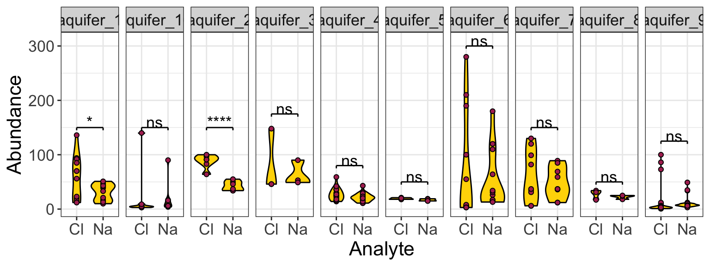
Note that these groupings are different from those generated by ANOVA/Tukey.
pairs of means
Oftentimes we have more than two means to compare, but rather than wanting to compare all means at once, we want to compare them in a pairwise fashion. For example, suppose we want to know if any of the aquifers contain different amounts of Na and Cl. We are not interested in testing for differences among all values of Na and Cl, rather, we want to test all pairs of Na and Cl values arising from each aquifer. That is to say, we want to compare the means in each facet of the plot below:
hawaii_aquifers %>%
filter(analyte %in% c("Na", "Cl")) %>%
ggplot(aes(x = analyte, y = abundance)) + geom_violin() + geom_point() + facet_grid(.~aquifer_code)Fortunately, we can use an approach that is very similar to the what we’ve learned in the earlier portions of this chapter, just with minor modifications. Let’s have a look! We start with the Shapiro and Levene tests, as usual (note that we group using two variables when using the Shapiro test so that each analyte within each aquifer is considered as an individual distribution):
hawaii_aquifers %>%
filter(analyte %in% c("Na", "Cl")) %>%
group_by(analyte, aquifer_code) %>%
shapiroTest(abundance)
## # A tibble: 20 × 5
## aquifer_code analyte variable statistic p
## <chr> <chr> <chr> <dbl> <dbl>
## 1 aquifer_1 Cl abundance 0.900 1.59e- 1
## 2 aquifer_10 Cl abundance 0.486 1.09e- 5
## 3 aquifer_2 Cl abundance 0.869 2.24e- 1
## 4 aquifer_3 Cl abundance 0.75 0
## 5 aquifer_4 Cl abundance 0.903 7.49e- 2
## 6 aquifer_5 Cl abundance 0.849 2.24e- 1
## 7 aquifer_6 Cl abundance 0.741 2.15e- 3
## 8 aquifer_7 Cl abundance 0.893 2.12e- 1
## 9 aquifer_8 Cl abundance 0.878 3.17e- 1
## 10 aquifer_9 Cl abundance 0.420 2.68e-10
## 11 aquifer_1 Na abundance 0.886 1.06e- 1
## 12 aquifer_10 Na abundance 0.593 2.26e- 4
## 13 aquifer_2 Na abundance 0.884 2.88e- 1
## 14 aquifer_3 Na abundance 0.822 1.69e- 1
## 15 aquifer_4 Na abundance 0.933 2.41e- 1
## 16 aquifer_5 Na abundance 0.827 1.61e- 1
## 17 aquifer_6 Na abundance 0.764 3.80e- 3
## 18 aquifer_7 Na abundance 0.915 3.51e- 1
## 19 aquifer_8 Na abundance 0.855 2.53e- 1
## 20 aquifer_9 Na abundance 0.531 3.97e- 9Looks like some of those distributions are significantly different from normal! Let’s run the levene test anyway. Note that for this particular case of the Levene test, we are interested in testing whether each pair of distributions has similar variances. For that we need to feed the Levene test data that is grouped by aquifer_code (so that it tests each pair as a group), then we need to specify the y ~ x formula (which in this case is abundance ~ analyte):
hawaii_aquifers %>%
filter(analyte %in% c("Na", "Cl")) %>%
group_by(aquifer_code) %>%
leveneTest(abundance ~ analyte)
## # A tibble: 10 × 5
## aquifer_code df1 df2 statistic p
## <chr> <int> <int> <dbl> <dbl>
## 1 aquifer_1 1 22 10.5 0.00375
## 2 aquifer_10 1 12 0.0535 0.821
## 3 aquifer_2 1 10 0.0243 0.879
## 4 aquifer_3 1 4 0.320 0.602
## 5 aquifer_4 1 32 1.57 0.219
## 6 aquifer_5 1 6 2 0.207
## 7 aquifer_6 1 22 1.03 0.322
## 8 aquifer_7 1 16 1.54 0.232
## 9 aquifer_8 1 4 0.515 0.512
## 10 aquifer_9 1 64 1.10 0.298It looks like the variances of the pair in aquifer 1 have significantly different variances. So - we for sure need to be using non-parametric testing. If this were a simple case of two means we would use the wilcox_test, but we have may pairs, so we will use pairwise_wilcox_test (note that with this test there are options for various styles of controlling for multiple comparisons, see: ?pairwise_wilcox_test):
hawaii_aquifers %>%
filter(analyte %in% c("Na", "Cl")) %>%
group_by(aquifer_code) %>%
pairwiseWilcoxTest(abundance~analyte)
## # A tibble: 10 × 10
## aquifer_code .y. group1 group2 n1 n2 statistic
## * <chr> <chr> <chr> <chr> <int> <int> <dbl>
## 1 aquifer_1 abundan… Cl Na 12 12 99.5
## 2 aquifer_10 abundan… Cl Na 7 7 14
## 3 aquifer_2 abundan… Cl Na 6 6 36
## 4 aquifer_3 abundan… Cl Na 3 3 3
## 5 aquifer_4 abundan… Cl Na 17 17 189
## 6 aquifer_5 abundan… Cl Na 4 4 13
## 7 aquifer_6 abundan… Cl Na 12 12 53
## 8 aquifer_7 abundan… Cl Na 9 9 42
## 9 aquifer_8 abundan… Cl Na 3 3 6
## 10 aquifer_9 abundan… Cl Na 33 33 195
## # ℹ 3 more variables: p <dbl>, p.adj <dbl>,
## # p.adj.signif <chr>Excellent! It looks like there is a statistically significant difference between the means of the abundances of Cl and Na in aquifer_2 and (surprisingly?) in aquifer_9 (perhaps due to the large number of observations?).
What would we have done if our Shaprio and Levene tests had revealed no significant differences? Well, a pairwise_tTest of course!
hawaii_aquifers %>%
filter(analyte %in% c("Na", "Cl")) %>%
group_by(aquifer_code) %>%
pairwiseTTest(abundance~analyte) -> test_output
test_output
## # A tibble: 10 × 10
## aquifer_code .y. group1 group2 n1 n2 p
## * <chr> <chr> <chr> <chr> <int> <int> <dbl>
## 1 aquifer_1 abundance Cl Na 12 12 4.69e-2
## 2 aquifer_10 abundance Cl Na 7 7 8.82e-1
## 3 aquifer_2 abundance Cl Na 6 6 3.75e-5
## 4 aquifer_3 abundance Cl Na 3 3 6.83e-1
## 5 aquifer_4 abundance Cl Na 17 17 1.03e-1
## 6 aquifer_5 abundance Cl Na 4 4 9.75e-2
## 7 aquifer_6 abundance Cl Na 12 12 5.66e-1
## 8 aquifer_7 abundance Cl Na 9 9 5.21e-1
## 9 aquifer_8 abundance Cl Na 3 3 4.28e-1
## 10 aquifer_9 abundance Cl Na 33 33 8.96e-1
## # ℹ 3 more variables: p.signif <chr>, p.adj <dbl>,
## # p.adj.signif <chr>Excellent, now we see how to run parametric and non-parametric pairwise comparisons. How do we annotate plots with the output of these tests? Here is an example:
anno <- data.frame(
xmin = test_output$group1,
xmax = test_output$group2,
y_position = c(150, 150, 150, 175, 80, 50, 300, 150, 50, 125),
text = test_output$p.signif,
text_size = 10,
text_vert_offset = 10,
text_horiz_offset = 1.5,
tip_length_xmin = 5,
tip_length_xmax = 5,
aquifer_code = test_output$aquifer_code,
hjust = 0.5,
vjust = 0.5
)
hawaii_aquifers %>%
filter(analyte %in% c("Na", "Cl")) %>%
ggplot(aes(x = analyte, y = abundance)) +
geom_violin(fill = "gold", color = "black") +
geom_point(shape = 21, fill = "maroon", color = "black") +
facet_grid(.~aquifer_code) +
geomSignif(data = anno, orientation = "horizontal") +
scale_x_discrete(name = "Analyte") +
scale_y_continuous(name = "Abundance") +
theme_bw() +
theme(
text = element_text(size = 16)
)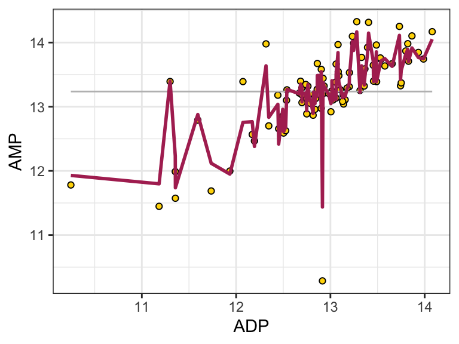
further reading
For more on comparing multiple means in R: www.datanovia.com
For more on parametric versus non-parametric tests: Statistics by Jim
For more on interpreting p values: [The p value wars (again) by Ulrich Dirnagl]
Ten common statistical mistakes and their solutions: Science Forum: Ten common statistical mistakes to watch out for when writing or reviewing a manuscript
exercises
Using the hawaii_aquifers data set, please complete the following:
Choose one analyte and filter the data so only the rows for that analyte are shown.
Choose two of the aquifers. Are the mean abundances for your chosen analyte different in these two aquifers? Don’t forget to test your data for normality and homogeneity of variance before selecting a statistical test. Use a plot to illustrate whether the means are similar or different.
Choose a second analyte, different from the first one you chose. Considering all the aquifers in the dataset, do any of them have the same abundance of this analyte? Again, don’t forget about normality and homogeneity of variance tests. Use a plot to illustrate your answer.
Repeat #3 above, but switch the type of test used (i.e. use non-parametric if you used parametric for #3 and vice-versa). Compare the p values and p groups obtained by the two methods. Use a graphic to illustrate this. Why are they different?
map data
plotting boundaries
There is a simple way to plot maps with ggplot. The map data comes with ggplot2! Let’s have a look. See below some of the data sets included. Options included with ggplot are: world, world2, usa, state (US), county (US), nz, italy, and france. geom_polygon() is useful for plotting these, at (at least to me) seems more intuitive than geom_map().
head(map_data("world"))
## long lat group order region subregion
## 1 -69.89912 12.45200 1 1 Aruba <NA>
## 2 -69.89571 12.42300 1 2 Aruba <NA>
## 3 -69.94219 12.43853 1 3 Aruba <NA>
## 4 -70.00415 12.50049 1 4 Aruba <NA>
## 5 -70.06612 12.54697 1 5 Aruba <NA>
## 6 -70.05088 12.59707 1 6 Aruba <NA>head(map_data("state"))
## long lat group order region subregion
## 1 -87.46201 30.38968 1 1 alabama <NA>
## 2 -87.48493 30.37249 1 2 alabama <NA>
## 3 -87.52503 30.37249 1 3 alabama <NA>
## 4 -87.53076 30.33239 1 4 alabama <NA>
## 5 -87.57087 30.32665 1 5 alabama <NA>
## 6 -87.58806 30.32665 1 6 alabama <NA>head(map_data("county"))
## long lat group order region subregion
## 1 -86.50517 32.34920 1 1 alabama autauga
## 2 -86.53382 32.35493 1 2 alabama autauga
## 3 -86.54527 32.36639 1 3 alabama autauga
## 4 -86.55673 32.37785 1 4 alabama autauga
## 5 -86.57966 32.38357 1 5 alabama autauga
## 6 -86.59111 32.37785 1 6 alabama autaugahead(map_data("france"))
## long lat group order region subregion
## 1 2.557093 51.09752 1 1 Nord <NA>
## 2 2.579995 51.00298 1 2 Nord <NA>
## 3 2.609101 50.98545 1 3 Nord <NA>
## 4 2.630782 50.95073 1 4 Nord <NA>
## 5 2.625894 50.94116 1 5 Nord <NA>
## 6 2.597699 50.91967 1 6 Nord <NA>Cool! We can see that lat, lon, group, order, region, and subregion are included. That makes plotting easy. Note that coord_map() can help preserve aspect ratios:
ggplot(map_data("world")) +
geom_point(aes(x = long, y = lat, color = group), size = 0.5) +
theme_void() +
coord_map()Note that we can use coord_map() to do some pretty cool things!
ggplot(map_data("world")) +
geom_point(aes(x = long, y = lat, color = group), size = 0.5) +
theme_void() +
coord_map(projection = "albers", lat0 = 39, lat1 = 45)
We can use filtering to produce maps of specific regions.
ggplot() +
geom_polygon(
data = filter(map_data("county"), region == "minnesota"),
aes(x = long, y = lat, group = subregion, fill = subregion),
color = "black"
) +
theme_void() +
coord_map()further reading
For more on plotting maps in R: datavizplyr
For more advanced map plotting: R Spatial
(PART) GC-MS DATA
mass spectrometric analysis
loading analyzeGCMSdata (basic)
phylochemistry provides a simple application for integrating and analyzing GC-MS data. With it, you can analyze .CDF files, which contain essentially all the data from a GC-MS run, and can be exported from most GC-MS systems using the software provided by the manufacturer. Instructions for this are provided at the end of this chapter. To run the lite version of the integration app, use the following guidelines:
Create a new folder on your hard drive and place your CDF file(s) into that folder. It doesn’t matter what the name of that folder is, but it must not contain special characters (including a space
in the name). For example, if my CDF file is called “sorghum_bicolor.CDF”, then I might create a folder calledgc_dataon my hard drive, and place the “sorghum_bicolor.CDF” file in that folder.In RStudio, run the source command to load
phylochemistry:
source("https://thebustalab.github.io/phylochemistry/phylochemistry.R")
- In RStudio, run the
analyzeGCMSdatacommand on the folder that contains your CDF file.
If you are on a Mac, use single forward slashes. For example:
analyzeGCMSdata("/Volumes/My_Drive/gc_data")
If you are on a PC, use double back slashes. For example:
analyzeGCMSdata("C:\\Users\\My_Profile\\gc_data")
The first time you open your datafile, it may take a while to load. Once the new RShiny window opens, press shit+q to load the chromatogram(s).
loading analyzeGCMSdata (advanced)
You can ask analyzeGCMSdata to extract single ion chromatograms if you wish. Just specify a list of ions as an argument. Note that specifying “0” corresponds to the total ion chromatogram and must be included as the first item in the list. For example:
analyzeGCMSdata("/Volumes/My_Drive/gc_data", ions = c("0", "218"))
Will return an interface that shows chromatograms for the total ion count and for ion 218.
At this point, note that you have a new set of files in your data-containing folder. There will be one *.CDF.csv file for each CDF file you have in the folder. This contains a matrix of all the mass measurements in your entire sample - the abundance of each m/z value during each scan. There is also a chromatograms.csv file. This is a list of all the chromatograms (total ion + whatever single ions were specified). These can be useful for creating plots of chromatograms via ggplot.
1.1 using analyzeGCMSdata
As a reference, below are the key commands used to operate the integration app. This is the information that is covered in the overview video.
To control the chromatogram window:
- shift + q = update
- shift + a = add selected peak
- shift + r = remove selected peak
- shift + g = add global peak
- shift + z = save table
To control the mass spectrum window:
- shift+1 = extract mass spectra from highlighted chromatogram region, plot average mass spectrum in panel 1.
- shift+2 = refresh mass spectrum in panel 1. This is used for zooming in on a region of the mass spectrum that you have highlighted. A spectrum needs to first be extracted for this to be possible.
- shift+3 = extract mass spectra from highlighted chromatogram region, subtract their average from the mass spectrum in panel 1.
- shift+4 = search current spectrum in panel 1 against library of mass spectra.
- shift+5 = save the current spectrum in panel 1 as a csv file.
1.2 CDF export
- On the GC-MS computer, open Enhanced Data Analysis
- File > Export Data To .AIA Format, Create New Directory (“OK”) > Desktop (create a folder with a name you will remember)
- Select all the datafiles you wish to analyze and process them, saving the output into the folder you just created
- Copy the .D files for the samples you wish to analyze to the same folder
- Move this folder to your personal computer
- Create one folder for each sample, and put the corresponding .CDF file into that folder.
(PART) SEQUENCE DATA
data acquisition
Updating MinKNOW on GridIon
sudo apt update
sudo apt install ont-gridion-release
sudo apt-key adv --fetch-keys https://developer.download.nvidia.com/compute/cuda/repos/ubuntu1604/x86_64/3bf863cc.pub
data transfer
Once you’ve completed a sequencing run, the data are can be transferred to an external hard drive, which can then be plugged into the storage computer. The next steps are:
- Identify which files are of interest/where they are in the system. Useful commands:
Display all currently mounted filesystems (& their usage, storage space, mounting point):
df -h
Also:
lsblk -f
Display more data pertaining to the identification of disks. Can also change partitioning of hard disks:
sudo fdisk -l
-Hard drives are labeled as sd’s. Organization follows as /dev/sd_ with the underscore replaced with a letter (first hard drive starting with ‘a’ and continuing alphabetically). If partitions are present, the letter if followed by a number (starting with ‘1’ for the first partition and continuing numerically). Ex) /dev/sdb2
- Mounting
-Use command:
sudo mount </dev/sd_> </file_path>
-Replace </sd_> with actual hard drive label and /file_path with the pathway for the location in which you want to mount the drive.
-Make sure the location (</file_path>) is preexisting location. Use the mkdir command to make a new directory if necessary.
- Copy data
-Just use the cp command and make sure you have the right filenames and locations to transfer the data from the hard drive to the internal disk.
sequence assessment
With your nanopore reads stored on a suitable machine, you can analyze them with several phylochemistry functions. Here is a quick overview:
qc_data <- fastxQC(
paths_to_fastxs = c(
"/Users/bust0037/Documents/Science/Websites/thebustalab.github.io/data/example.fastq",
"/Users/bust0037/Documents/Science/Websites/thebustalab.github.io/data/example2.fastq"
),
type = "fasta",
mode = "slow",
max_n_seqs = 1000
)
head(qc_data)
qc_data %>%
mutate(category = case_when(
length > mean(qc_data$length)*5 ~ "chromosome",
length <= mean(qc_data$length)*5 ~ "leftover_bit"
)) %>%
ggplot() +
geom_treemap(aes(area = length, fill = category), color = "black", size = 1) +
scale_fill_manual(values = c("gold", "maroon"))- Additional Information
bootable USB: https://rufus.ie/en/#
illumina read assessment
Check out: fastqcr: An R Package Facilitating Quality Controls of Sequencing Data for Large Numbers of Samples
(PART) TRANSCRIPTOME ANALYSIS
conda install -c bioconda trimmomatic
trimmomatic PE -version
transXpress make sure to add conda-forge::ncurses as a dependency in the yaml file. should look like:
channels: - conda-forge - bioconda - r - defaults dependencies: - conda-forge::ncurses - trinity=2.13.2=hea94271_3 - bioconductor-edger=3.36.0=r41hc247a5b_2 - kallisto=0.48.0=h15996b6_2 - r=4.1=r41hd8ed1ab_1006 - r-tidyverse=1.3.2=r41hc72bb7e_1 - bowtie2=2.5.0=py310h8d7afc0_0 - samtools=1.16.1=h6899075_1 - rsem=1.3.3=pl5321ha04fe3b_5
(PART) GENOME ANALYSIS
setup
- Get docker.
- Connecting to remote host:
Make sure the remote host has openSSH installed:
sudo apt install openssh-server
On the client computer (usually your laptop or something), first create the key:
ssh-keygen -t rsa
Then copy that key to the host (usually the computer you want to connect remotely to):
ssh-copy-id -i ~/.ssh/id_rsa.pub {username}@host.address
Done! Log in with ssh {username}@host.address
- Initializing a conda environment:
conda create --name <name> python=3.6
conda activate <name>
conda install -c bioconda flye
conda install -c bioconda abyss
genome assembly
To some degree, refer to: https://github.com/dithiii/ant-pipeline/blob/main/README.md.
1.3 assembly
1.3.1 equipment
Genome assembly requires computing resources - and since not all genomes are of equal size, the computing resources required for different assemblies may differ. To run a genome assembly, start by determining what computing resources are available. Some helpful commands when investigating these resources on Linux machines:
- Assessing RAM (It is recommended to assign about 75% of available RAM to the assembly process):
grep MeMTotal /proc/meminfo
- Assessing CPU resources (note that “threads per CPU” can denote the availability of hyperthreading):
lscpu
- Assessing disk/storage space (Make sure you are running your assembly on a disk with lots of open space. Ideally > 2TB):
df -h
1.3.2 assembly software
1.3.2.1 abyss
abyss-pe k=111 name=SS1 B=10G in='SS1_1.fa SS1_2.fa'
A rough indicator is, for 2x150bp reads and 40x coverage, the right k value is often around 70 to 90. For 2x250bp reads and 40x coverage, the right value might be around 110 to 140.
A good value for B depends on a number of factors, but primarily on the genome being assembled. A general guideline is: P. glauca (~20Gbp): B=500G; H. sapiens (~3.1Gbp): B=50G; C. elegans (~101Mbp): B=2G. Using more is fine though,
1.3.2.2 canu
docker pull staphb/canu-racon
For assembly on the BustaLab storage box, navigate to the directory that contains your reads. Merge all reads into one file using:
cat *.fastq > all_reads.fastq
Then use Canu to assemble, we suggest creating a file that contains the Canu call. You can create the file using nano. In it, try something like:
sudo docker run -u $(id -u) -v /data/ben_diatom2/basecalled_reads/:/canu-racon_wd staphb/canu-racon canu -p n_frust2assembly -d /canu-racon_wd/ -genomeSize=150m -nanopore /canu-racon_wd/all_reads2.fastq -minReadLength=1000 -correctedErrorRate=0.12 -minOverlapLength=500 -useGrid=false -minInputCoverage=0.5 -maxInputCoverage=100 -stopOnLowCoverage=0.5 -corMemory=48 -corThreads=4 -hapMemory=48 -hapThreads=4 -merylMemory=48 -merylthreads=4 -batMemory=48 -batThreads=4Notes on Canu options:
Defaults:
- minReadLength=1000
- minOverlapLength=500bp
- correctedErrorRate=0.114
- stopOnLowCoverage <integer=10>
Essentially only speed optimization:
- For over 30X coverage:
- Nanopore flip-flop R9.4 or R10.3: try:
corMhapOptions=--threshold 0.8 –ordered-sketch-size 1000 –ordered-kmer-size 14’ correctedErrorRate=0.105 - For over 60X coverage: 2 recommendations were made, one said to decrease slightly (~1%). Another suggested using 12% correctedErrorRate=0.12
- Increasing minReadLength increases run time, increasing minOverlapLength improves assembly quality but increasing too much quickly degrades assemblies.
1.3.2.3 flye
docker pull staphb/flye
1.3.3 kmer-based metrics
Canu will take some time to run. As it goes along, you can both check on its progress and learn about the genome you are assembling from some intermediate results. Take the k-mer data found in the .histogram files (i.e. in correction/0-mercounts/x.histogram, trimming/0-mercounts/x.histogram, unitigging/0-mercounts/x.histogram) and process them with canuHistogramToKmerTable(), as shown below. You can upload the output to : http://qb.cshl.edu/genomescope/genomescope2.0/. This will give you approximate genome size, ploidy, heterozygosity, repeat content, and read error rate. All good stuff to know!
canuHistogramToKmerTable(
file_in_path = "/Users/bust0037/Desktop/n_frust3assemblyB.ms22.histogram",
file_out_path = "/Users/bust0037/Desktop/n_frust3assemblyB.ms22.histogram_table"
)Also check on this tutorial:
1.3.3.1 merqury
docker pull quay.io/chai/merqury
sudo docker run -u $(id -u) -v /home/bust0037/data1/Kalanchoe_DNASeq/round2_pass_reads_assembly/:/merqury/ quay.io/chai/merqury:latest quast.py -h
References: https://www.biorxiv.org/content/10.1101/2020.03.15.992941v1.abstract Merqury: reference-free quality, completeness, and phasing assessment for genome assemblies
1.4 evaluating contigs
Can these be merged into a single wrapper that can be run after each step in assembly/polishing/scaffolding etc?
1.4.1 BUSCO
- Real BUSCO input will be /home/bust0037/data1/comparative_genomics/Kfedtschenkoi_382_v1.0.fa
- Note BUSCO uses current working directory for input and output
docker pull ezlabgva/busco:v5.3.2_cv1
sudo docker run -u $(id -u) -v /home/bust0037/data1/comparative_genomics/:/busco_wd ezlabgva/busco:v5.3.2_cv1 busco -i k_fed.contigs.fa -o busco_our_kfed/ -m genome -l eudicots_odb10
1.4.2 quast
Quast provides a score called ALE: alignment liklihood estimate.
docker pull longas/quast
sudo docker run -u $(id -u) -v /home/bust0037/:/tmp/work/quast_results longas/quast:latest quast.py -h
sudo docker run -u $(id -u) -v /home/bust0037/ben_test/_ben_genomes/:/tmp/work/quast_results longas/quast:latest quast.py --fragmented /tmp/work/quast_results/ben_pre_n_frust.contigs.fasta --nanopore /tmp/work/quast_results/all_pass_reads.fastq --space-efficient --memory-efficient --fast
1.5 polishing contigs
1.5.1 medaka
Pull the docker image:
docker pull ontresearch/medaka
Run medaka:
sudo docker run -u $(id -u) -v /home/bust0037/data1/Kalanchoe_DNASeq/round2_pass_reads_assembly/:/medaka/ ontresearch/medaka:latest medaka_consensus -i medaka/all_reads.fastq -d medaka/k_fed.contigs.fasta -b 50
Good documentation here: https://labs.epi2me.io/notebooks/Introduction_to_how_ONT's_medaka_works.html
Medaka will:
* Map all your raw reads. Look for feedback like: [M::worker_pipeline::2924.325*0.25] mapped 75823 sequences.
* Do something else, updates in the form of: 21.7% Done (88.2/406.1 Mbases) in 6815.1s.
1.6 methylation with remora
can we call methylation status on our Kalanchoe genomes? -> yes, we can use Remora -> watch for new guppy release, MinKNOW integration -> currently in bonito
bonito basecaller dna_r10.4_e8.1_sup@v3.4 /data/reads --modified-bases 5mC --reference ref.mmi > basecalls_with_mods.bam
bonito basecaller dna_r10.4_e8.1_sup@v3.4 --reference consensus.fasta --modified-bases 5mC1.7 scaffolding assembly
1.7.1 RagTag
INSTALL PYTHON (or upgrade python) <- can this be done using docker?
INSTALL BIOCONDA 1. install miniconda: curl -O https://repo.anaconda.com/miniconda/Miniconda3-latest-Linux-x86_64.sh sh …
1.8 annotation
1.8.1 augustus
see: https://hub.docker.com/r/pegi3s/autoaugustus/
docker pull pegi3s/autoaugustussudo docker run --rm -v $(pwd):$(pwd) pegi3s/autoaugustus augustus --species=help
sudo docker run --rm -v $(pwd):/augustus/ pegi3s/autoaugustus augustus --species=tomato /augustus/consensus.fasta > consensus-preductions.gff --progress=TRUE1.9 final assessment
https://www.molecularecologist.com/2017/03/29/whats-n50/
1.9.1 mosdepth
sudo docker pull quay.io/biocontainers/mosdepth:0.2.4--he527e40_0
sudo docker run -u $(id -u) -v /home/bust0037/data1/Kalanchoe_DNASeq/rounds_1and2_pass_assembly/:/mosdepth_wd quay.io/biocontainers/mosdepth:0.2.4--he527e40_0 mosdepth -h
sudo docker run -u $(id -u) -v /home/bust0037/data1/Kalanchoe_DNASeq/rounds_1and2_pass_assembly/:/mosdepth_wd quay.io/biocontainers/mosdepth:0.2.4--he527e40_0 mosdepth -n --fast-mode --by 1000 mosdepth_wd/mosdepth_out /mosdepth_wd/calls_to_draft.bam
sudo docker run -u $(id -u) -v /home/bust0037/data1/Kalanchoe_DNASeq/rounds_1and2_pass_assembly/:/mosdepth_wd gfanz/mosdepth -n --fast-mode --by 1000 mosdepth_wd/mosdepth_out /mosdepth_wd/calls_to_draft.bam
sudo docker run -u $(id -u) -v /home/bust0037/data1/Kalanchoe_DNASeq/rounds_1and2_pass_assembly/:/mosdepth_wd quay.io/biocontainers/mosdepth:0.2.4--he527e40_0 mosdepth --quantize 0:1:4:100:200: --fast-mode --by 1000 mosdepth_wd/mosdepth_out /mosdepth_wd/calls_to_draft.bam
- set up channels
/home/bust0037/miniconda3/bin/conda config –add channels defaults /home/bust0037/miniconda3/bin/conda config –add channels bioconda /home/bust0037/miniconda3/bin/conda config –add channels conda-forge
- install packages
/home/bust0037/miniconda3/bin/conda install sibeliaz /home/bust0037/miniconda3/bin/conda install -c bioconda ragtag
- run your stuff
/home/bust0037/miniconda3/bin/conda run sibeliaz -n k_fed.contigs.scaffolded.fasta KlaxifloraFTBG2000359A_699_v3.0.fa
/home/bust0037/miniconda3/bin/conda run ragtag
/home/bust0037/miniconda3/bin/conda run ragtag
ragtag.py
/home/bust0037/meryl-1.3/bin/meryl /home/bust0037/merqury-1.3/merqury.sh
sh $MERQURY/best_k.sh
Let’s look at some examples. For these example, we will use some fasta files stored in a Google Drive folder:
# reads <- readFasta("https://drive.google.com/file/d/1r6E0U5LyYwjWenxy9yqh5QQ2mq1umWOW/view?usp=sharing")
# # post <- readFasta("/Users/bust0037/Desktop/ragtag.scaffold.fasta")
# n_chroms <- 18
# pb <- progress::progress_bar$new(total = n_chroms)
# out <- list()
# for (i in 1:n_chroms) {
# pb$tick()
# dat <- strsplit(substr(as.character(post[i]), 1, 50000000), "")[[1]]
# b <- rle(dat)
# # Create a data frame
# dt <- data.frame(number = b$values, lengths = b$lengths, scaff = i)
# # Get the end
# dt$end <- cumsum(dt$lengths)
# # Get the start
# dt$start <- dt$end - dt$lengths + 1
# # Select columns
# dt <- dt[, c("number", "start", "end", "scaff")]
# # Sort rows
# dt <- dt[order(dt$number), ]
# dt %>%
# filter(number == "N") -> N_dat
# out[[i]] <- N_dat
# }
# out <- do.call(rbind, out)
# chroms <- data.frame(
# lengths = post@ranges@width[1:n_chroms],
# scaff = seq(1,n_chroms,1)
# )
# ggplot() +
# statebins:::geom_rrect(data = chroms, aes(xmin = 0, xmax = lengths, ymin = -1, ymax = 1, fill = scaff), color = "black") +
# geom_rect(data = out, aes(xmin = start, xmax = end, ymin = -0.95, ymax = 0.95), color = "white", fill = "white", size = 0.08) +
# facet_grid(scaff~.) +
# scale_fill_viridis(end = 0.8) +
# theme_classic()
# ggplot() +
# geom_rect(data = filter(chroms, scaff == 1 | scaff == 2), aes(xmin = 0, xmax = lengths, ymin = -1, ymax = 1, fill = scaff), color = "black") +
# geom_rect(data = filter(out, scaff == 1 | scaff == 2), aes(xmin = start, xmax = end, ymin = -0.95, ymax = 0.95), color = "white", fill = "white", size = 0.08) +
# facet_grid(scaff~.) +
# scale_y_continuous(limits = c(-2,2)) +
# scale_fill_viridis(end = 0.8) +
# theme_classic() +
# coord_polar()annotation
docker pull nanozoo/braker2
Pfam scores E-values and Bit-scores Pfam-A is based around hidden Markov model (HMM) searches, as provided by the HMMER3 package. In HMMER3, like BLAST, E-values (expectation values) are calculated. The E-value is the number of hits that would be expected to have a score equal to or better than this value by chance alone. A good E-value is much less than 1. A value of 1 is what would be expected just by chance. In principle, all you need to decide on the significance of a match is the E-value.
E-values are dependent on the size of the database searched, so we use a second system in-house for maintaining Pfam models, based on a bit score (see below), which is independent of the size of the database searched. For each Pfam family, we set a bit score gathering (GA) threshold by hand, such that all sequences scoring at or above this threshold appear in the full alignment. It works out that a bit score of 20 equates to an E-value of approximately 0.1, and a score 25 of to approximately 0.01. From the gathering threshold both a “trusted cutoff” (TC) and a “noise cutoff” (NC) are recorded automatically. The TC is the score for the next highest scoring match above the GA, and the NC is the score for the sequence next below the GA, i.e. the highest scoring sequence not included in the full alignment.
Sequence versus domain scores There’s an additional wrinkle in the scoring system. HMMER3 calculates two kinds of scores, the first for the sequence as a whole and the second for the domain(s) on that sequence. The “sequence score” is the total score of a sequence aligned to the model (the HMM); the “domain score” is the score for a single domain — these two scores are virtually identical where only one domain is present on a sequence. Where there are multiple occurrences of the domain on a sequence any individual match may be quite weak, but the sequence score is the sum of all the individual domain scores, since finding multiple instances of a domain increases our confidence that that sequence belongs to that protein family, i.e. truly matches the model.
Meaning of bit-score for non-mathematicians A bit score of 0 means that the likelihood of the match having been emitted by the model is equal to that of it having been emitted by the Null model (by chance). A bit score of 1 means that the match is twice as likely to have been emitted by the model than by the Null. A bit score of 2 means that the match is 4 times as likely to have been emitted by the model than by the Null. So, a bit score of 20 means that the match is 2 to the power 20 times as likely to have been emitted by the model than by the Null.
comparative genomics
GENESPACE: syntenic pan-genome annotations for eukaryotes
1.10 loading GFF files
(PART) EVOLUTIONARY ANALYSIS
blast

1.11 polyBlast
1.11.1 setup
On NCBI, you can search various sequence collections with one or more queries. However, often we want to search a custom library, or multiple libraries. For example, maybe we have downloaded some genomes of interest and want to run blast searches on them. That is what polyBlast() is designed to do. polyBlast() relies on the BLAST+ program available from NCBI BLAST+. Download the program and then point this function to the executable via the blast_module_directory_path argument. You can search multiple sequence libraries at once using multiple queries, and all the usual blast configurations (blastp, blastn, tblastn, etc.) are available. Please note that searches with protein sequences or translated DNA sequences are 5–10-fold more sensitive than DNA:DNA sequence comparison.
Let’s check out polyBlast() by looking at an example. For this example, we need to set up a few things:
- “named_subjects_list”: A named list of sequence collections (often transcriptomes) to search (one fasta for each collection, often one collection for each species or accession).
- “query_in_path”: One or more queries, all listed in a single fasta file.
- “sequences_of_interest_directory_path”: The path to a directory where the BLAST hits will be written as individual files (this will be useful later on).
- “blast_module_directory_path”: The path to the folder of BLAST+ executable.
- “blast_mode”: The format is XYblastZ where X is subject type (the transcriptome or proteome, use “n” for nucleotide, “p” for amino acids). Y is whether the subjects should be translated (“t” for translate, “n” for no translation, if you choose “t” your subjects will not be searched for ORFs, every three base pairs are just translated verbatim). Z is the format of the query/queries (“n” for nucleotide, “p” for amino acids). Allowed formats: nnblastn, ntblastp, pnblastp.
- “e_value_cutoff”: Hits with a e-value below this cutoff will not be returned. Default = 1.
- “queries_in_outout”: TRUE/FALSE, should the queries be included in the output? If you want to build a tree of BLAST hits and want the queries in the tree, then set this to be TRUE.
- “monolist_out_path”: The path to where we want a summary file of the BLAST hits to be written.
Once we have those things, we can set up the search (see below). There are two main outputs from the search: a list of the hits (“monolist_out”, which is written to “monolist_out_path”), and the hits themselves, written as individual files to “sequences_of_interest_directory_path”. These two things can be used in downstream analyses, such as alignments. The function does not return an object.
the_transcriptomes <- c(
"/path_to/the_transcriptomes_or_proteomes/Nicotiana_glauca.fa",
"/path_to/the_transcriptomes_or_proteomes/Nicotiana_tabacum.fa",
"/path_to/the_transcriptomes_or_proteomes/Nicotiana_benthamiana.fa"
)
names(the_transcriptomes) <- c(
"Nicotiana_glauca.fa",
"Nicotiana_tabacum.fa",
"Nicotiana_benthamiana.fa"
)
polyBlast(
named_subjects_list = the_transcriptomes,
query_in_path = "/path_to/sequences_you_want_to_find_in_the_transcriptomes.fa",
sequences_of_interest_directory_path = "/path_to/a_folder_for_hit_sequences/",
blast_module_directory_path = "/path_to/the_blast_module/",
blast_mode = c("nnblastn", "ntblastp", "pnblastp", "dc-megablast"),
e_value_cutoff = 1,
queries_in_output = TRUE,
monolist_out_path = "/path_to/a_csv_file_that_will_list_all_blast_hits.csv"
)1.11.2 interpretation
The “30% identity rule-of-thumb” is too conservative. Statistically significant (E < 10−6 – 10−3) protein homologs can share less than 20% identity. E-values and bit scores (bits > 50) are far more sensitive and reliable than percent identity for inferring homology.
The expect value (E-value) can be changed in order to limit the number of hits to the most significant ones. The lower the E-value, the better the hit. The E-value is dependent on the length of the query sequence and the size of the database. For example, an alignment obtaining an E-value of 0.05 means that there is a 5 in 100 chance of occurring by chance alone. E-values are very dependent on the query sequence length and the database size. Short identical sequence may have a high E-value and may be regarded as “false positive” hits. This is often seen if one searches for short primer regions, small domain regions etc. The default threshold for the E-value on the BLAST web page is 10, the default for polyBlast is 1. Increasing this value will most likely generate more hits. Below are some rules of thumb which can be used as loose guidelines:
- E-value < 10e-100 Identical sequences. You will get long alignments across the entire query and hit sequence.
- 10e-100 < E-value < 10e-50 Almost identical sequences. A long stretch of the query protein is matched to the database.
- 10e-50 < E-value < 10e-10 Closely related sequences, could be a domain match or similar.
- 10e-10 < E-value < 1 Could be a true homologue but it is a gray area.
- E-value > 1 Proteins are most likely not related
- E-value > 10 Hits are most likely junk unless the query sequence is very short.
reference: https://resources.qiagenbioinformatics.com/manuals/clcgenomicsworkbench/650/_E_value.html
reference: Pearson W. R. (2013). An introduction to sequence similarity (“homology”) searching. Current protocols in bioinformatics, Chapter 3, Unit3.1. https://doi.org/10.1002/0471250953.bi0301s42.
alignments

1.12 alignSequences
There are, of course, many tools for aligning sequences. alignSequences(), the alignment tool in phylochemistry, is designed to be both versatile (it can do nucleotide, amino acid, codon alignments, and more), and able to quily align different subsets of collections of sequences. There are three steps to make it work, which is a bit of work, but worth it in the end. Here is a list of the ingredients. If you used polyBlast(), then polyBlast() should have created all these ingredients for you. Following the list is an example. The function does not return an object, and should output a fasta containing the alignment to the alignment_directory_path.
“monolist”: a data.frame that contains a list of all the sequences that are to be aligned. The first column should be an accession number that refers to a fasta file in the “sequences_of_interest_directory_path”.
“subset”: The monolist .csv also needs to contain at least one “subset_*” column. The most simple implementation of this is a column called “subset_all” which contains a TRUE entry in each row. This means that all the accessions will be aligned. It is possible to create additonal logical/boolean columns and specify those in this argument, which would cause only that subset of the collection of sequences to be aligned.
“alignment_directory_path”: a path to a directory that should contain the output alignment.
“sequences_of_interest_directory_path”: a path to a directory that contains one fasta file for each of the accessions in the monolist.
“input_sequence_type”: options are “nucl” or “amin” specifying what type of sequence is to be aligned.
“mode”: options are “nucl_align”, a basic nucleotide alignment, “amin_align”, a basic amino acid alignment, “codon_align”, a codon alignment, and “fragment_align”, which will align all the sequences to a base fragment.
“base_fragment”: a path to a fasta file containing the base fragment to which the subjects should be aligned.
alignSequences(
monolist = readMonolist("/path_to/a_csv_file_that_will_list_all_blast_hits.csv"),
subset = "subset_all",
alignment_directory_path = "/path_to/a_folder_for_alignments/",
sequences_of_interest_directory_path = "/path_to/a_folder_for_hit_sequences/",
input_sequence_type = "amin",
mode = "amin_alignment",
base_fragment = NULL
)1.13 analyzeAlignment
phylogenies
1.14 buildTree
This function is a swiss army knife for tree building. It takes as input alignments or existing phylogenies from which to derive a phylogeny of interest, it can use neighbor-joining or maximum liklihood methods (with model optimization), it can run bootstrap replicates, and it can calculate ancestral sequence states. To illustrate, let’s look at some examples:
1.14.1 newick input
Let’s use the Busta lab’s plant phylogeny [derived from Qian et al., 2016] to build a phylogeny with five species in it.
tree <- buildTree(
scaffold_type = "newick",
scaffold = "https://thebustalab.github.io/data/plant_phylogeny.newick",
members = c("Sorghum_bicolor", "Zea_mays", "Setaria_viridis", "Arabidopsis_thaliana", "Amborella_trichopoda")
)
## Pro tip: most tree read/write functions reset node numbers.
## Fortify your tree and save it as a csv file to preserve node numbering.
## Do not save your tree as a newick or nexus file.
tree
##
## Phylogenetic tree with 5 tips and 4 internal nodes.
##
## Tip labels:
## Amborella_trichopoda, Zea_mays, Sorghum_bicolor, Setaria_viridis, Arabidopsis_thaliana
## Node labels:
## , , ,
##
## Rooted; includes branch lengths.
plot(tree)Cool! We got our phylogeny. What happens if we want to build a phylogeny that has a species on it that isn’t in our scaffold? For example, what if we want to build a phylogeny that includes Arabidopsis neglecta? We can include that name in our list of members:
tree <- buildTree(
scaffold_type = "newick",
scaffold_in_path = "https://thebustalab.github.io/data/plant_phylogeny.newick",
members = c("Sorghum_bicolor", "Zea_mays", "Setaria_viridis", "Arabidopsis_neglecta", "Amborella_trichopoda")
)
## Scaffold newick tip Arabidopsis_thaliana substituted with Arabidopsis_neglecta
## Pro tip: most tree read/write functions reset node numbers.
## Fortify your tree and save it as a csv file to preserve node numbering.
## Do not save your tree as a newick or nexus file.
tree
##
## Phylogenetic tree with 5 tips and 4 internal nodes.
##
## Tip labels:
## Amborella_trichopoda, Zea_mays, Sorghum_bicolor, Setaria_viridis, Arabidopsis_neglecta
## Node labels:
## , , ,
##
## Rooted; includes branch lengths.
plot(tree)Note that buildTree informs us: “Scaffold newick tip Arabidopsis_thaliana substituted with Arabidopsis_neglecta”. This means that Arabidopsis neglecta was grafted onto the tip originally occupied by Arabidopsis thaliana. This behaviour is useful when operating on a large phylogenetic scale (i.e. where exact phylogeny topology is not critical below the family level). However, if a person is interested in using an existing newick tree as a scaffold for a phylogeny where genus-level topology is critical, then beware! Your scaffold may not be appropriate if you see that message. When operating at the genus level, you probably want to use sequence data to build your phylogeny anyway. So let’s look at how to do that:
1.14.2 alignment input
Arguments in this case are:
- “scaffold_type”: “amin_alignment” or “nucl_alignment” for amino acids or nucleotides.
- “scaffold_in_path”: path to the fasta file that contains the alignment from which you want to build a tree.
- “ml”: Logical, TRUE if you want to use maximum liklihood, FALSE if not, in which case neighbor joining will ne used.
- “model_test”: if you say TRUE to “ml”, should buildTree test different maximum liklihood models and then use the “best” one?
- “bootstrap”: TRUE or FALSE, whether you want bootstrap values on the nodes.
- “ancestral_states”: TRUE or FALSE, should buildTree() compute the ancestral sequence at each node?
- “root”: NULL, or the name of an accession that should form the root of the tree.
buildTree(
scaffold_type = "amin_alignment",
scaffold_in_path = "/path_to/a_folder_for_alignments/all_amin_seqs.fa",
ml = FALSE,
model_test = FALSE,
bootstrap = FALSE,
ancestral_states = FALSE,
root = NULL
)1.15 plotting trees
There are several approaches to plotting trees. A simple one is using the base plot function:
test_tree_small <- buildTree(
scaffold_type = "newick",
scaffold_in_path = "https://thebustalab.github.io/data/plant_phylogeny.newick",
members = c("Sorghum_bicolor", "Zea_mays", "Setaria_viridis")
)
## Pro tip: most tree read/write functions reset node numbers.
## Fortify your tree and save it as a csv file to preserve node numbering.
## Do not save your tree as a newick or nexus file.
plot(test_tree_small)Though this can get messy when there are lots of tip labels:
set.seed(122)
test_tree_big <- buildTree(
scaffold_type = "newick",
scaffold_in_path = "https://thebustalab.github.io/data/plant_phylogeny.newick",
members = plant_species$Genus_species[abs(floor(rnorm(60)*100000))]
)
## The following species belong to a genus not found in the newick scaffold and were removed:
## Steirodiscus_schlechteri
## Phyllagathis_marumiaetricha
## Jungia_sordida
## Carpacoce_heteromorpha
## Huttonaea_woodii
## Ferulago_macrocarpa
## Echinospartum_lusitanicum
## Scurrula_lepidota
## Astronidium_sudestense
##
## Scaffold newick tip Peperomia_fraseri substituted with Peperomia_kimachii
## Scaffold newick tip Telipogon_pulcher substituted with Telipogon_alberti
## Scaffold newick tip Elaeocarpus_angustifolius substituted with Elaeocarpus_miriensis
## Scaffold newick tip Angelica_sinensis substituted with Angelica_anomala
## Scaffold newick tip Senecio_pterophorus substituted with Senecio_isatideus
## Scaffold newick tip Macroscepis_hirsuta substituted with Macroscepis_pleistantha
## Scaffold newick tip Tithonia_diversifolia substituted with Tithonia_fruticosa
## Scaffold newick tip Spermacoce_princeae substituted with Spermacoce_latituba
## Scaffold newick tip Bothriocline_laxa substituted with Bothriocline_amphicoma
## Scaffold newick tip Siler_montanum substituted with Siler_zernyi
## Scaffold newick tip Teucrium_betchei substituted with Teucrium_rotundifolium
## Scaffold newick tip Calathea_pluriplicata substituted with Calathea_mediopicta
## Scaffold newick tip Phyllanthus_maderaspatensis substituted with Phyllanthus_roeperianus
## Scaffold newick tip Entada_abyssinica substituted with Entada_dolichorrhachis
## Scaffold newick tip Pimpinella_rhodantha substituted with Pimpinella_cypria
## Scaffold newick tip Baccharis_neglecta substituted with Baccharis_grisebachii
## Scaffold newick tip Mikania_micrantha substituted with Mikania_longipes
## Scaffold newick tip Raphionacme_flanaganii substituted with Raphionacme_hirsuta
## Scaffold newick tip Senecio_polyanthemoides substituted with Senecio_conferruminatus
## Scaffold newick tip Heracleum_austriacum substituted with Heracleum_bailletianum
## Scaffold newick tip Bulbophyllum_hainanense substituted with Bulbophyllum_kaniense
## Scaffold newick tip Madhuca_microphylla substituted with Madhuca_elmeri
## Scaffold newick tip Capparis_spinosa substituted with Capparis_cantoniensis
## Scaffold newick tip Albizia_lebbekoides substituted with Albizia_tulearensis
## Scaffold newick tip Cephalaria_syriaca substituted with Cephalaria_dirmilensis
## Scaffold newick tip Adesmia_exilis substituted with Adesmia_uspallatensis
## Scaffold newick tip Artemisia_biennis substituted with Artemisia_stricta
## Scaffold newick tip Osteospermum_ilicifolium substituted with Osteospermum_polycephalum
## Scaffold newick tip Atriplex_californica substituted with Atriplex_lanfrancoi
## Scaffold newick tip Oberonia_ensiformis substituted with Oberonia_anguina
## Scaffold newick tip Ceropegia_linearis_subsp._woodii substituted with Ceropegia_andamanica
## Scaffold newick tip Cousinia_severtzovii substituted with Cousinia_butkovii
## Scaffold newick tip Hoya_lanceolata substituted with Hoya_loyceandrewsiana
## Scaffold newick tip Cousinia_microcarpa substituted with Cousinia_trachylepis
## Scaffold newick tip Bossiaea_cordigera substituted with Bossiaea_oligosperma
## Scaffold newick tip Cayaponia_tubulosa substituted with Cayaponia_jenmanii
## Scaffold newick tip Pomatocalpa_kunstleri substituted with Pomatocalpa_linearipetalum
## Scaffold newick tip Endlicheria_verticillata substituted with Endlicheria_xerampela
## Scaffold newick tip Eugenia_moschata substituted with Eugenia_azurensis
## Scaffold newick tip Gastrolobium_punctatum substituted with Gastrolobium_spinosum
## Scaffold newick tip Dioscorea_mexicana substituted with Dioscorea_pennellii
## Scaffold newick tip Mitrella_kentii substituted with Mitrella_ledermannii
## Scaffold newick tip Ageratina_adenophora substituted with Ageratina_ayerscottiana
## Scaffold newick tip Astragalus_vogelii substituted with Astragalus_jolderensis
## Scaffold newick tip Eremocharis_fruticosa substituted with Eremocharis_longiramea
## Scaffold newick tip Spathiphyllum_floribundum substituted with Spathiphyllum_monachinoi
## Scaffold newick tip Balanops_vieillardii substituted with Balanops_microstachya
## Pro tip: most tree read/write functions reset node numbers.
## Fortify your tree and save it as a csv file to preserve node numbering.
## Do not save your tree as a newick or nexus file.
plot(test_tree_big)
One solution is to use ggtree, which by default doesn’t show tip labels. plot can do that too, but ggtree does a bunch of other useful things, so I recommend that:
ggtree(test_tree_big)
Another convenient fucntion is ggplot’s fortify. This will convert your phylo object into a data frame:
test_tree_big_fortified <- fortify(test_tree_big)
test_tree_big_fortified
## # A tibble: 101 × 9
## parent node branch.length label isTip x y branch
## <int> <int> <dbl> <chr> <lgl> <dbl> <dbl> <dbl>
## 1 54 1 83.0 Wolf… TRUE 188. 1 147.
## 2 54 2 83.0 Spat… TRUE 188. 2 147.
## 3 55 3 138. Dios… TRUE 188. 3 120.
## 4 58 4 42.7 Bulb… TRUE 188. 5 167.
## 5 58 5 42.7 Ober… TRUE 188. 6 167.
## 6 59 6 32.0 Poma… TRUE 188. 7 172.
## 7 59 7 32.0 Teli… TRUE 188. 8 172.
## 8 56 8 135. Cala… TRUE 188. 4 121.
## 9 61 9 147. Pepe… TRUE 188. 9 115.
## 10 62 10 121. Endl… TRUE 188. 10 128.
## # ℹ 91 more rows
## # ℹ 1 more variable: angle <dbl>ggtree can still plot this dataframe, and it allows metadata to be stored in a human readable format by using mutating joins (explained below). This metadata can be plotted with standard ggplot geoms, and these dataframes can also conveniently be saved as .csv files:
## Note that "plant_species" comes with the phylochemistry source.
test_tree_big_fortified_w_data <- left_join(test_tree_big_fortified, plant_species, by = c("label" = "Genus_species"))
test_tree_big_fortified_w_data
## # A tibble: 101 × 14
## parent node branch.length label isTip x y branch
## <int> <int> <dbl> <chr> <lgl> <dbl> <dbl> <dbl>
## 1 54 1 83.0 Wolf… TRUE 188. 1 147.
## 2 54 2 83.0 Spat… TRUE 188. 2 147.
## 3 55 3 138. Dios… TRUE 188. 3 120.
## 4 58 4 42.7 Bulb… TRUE 188. 5 167.
## 5 58 5 42.7 Ober… TRUE 188. 6 167.
## 6 59 6 32.0 Poma… TRUE 188. 7 172.
## 7 59 7 32.0 Teli… TRUE 188. 8 172.
## 8 56 8 135. Cala… TRUE 188. 4 121.
## 9 61 9 147. Pepe… TRUE 188. 9 115.
## 10 62 10 121. Endl… TRUE 188. 10 128.
## # ℹ 91 more rows
## # ℹ 6 more variables: angle <dbl>, Phylum <chr>,
## # Order <chr>, Family <chr>, Genus <chr>, species <chr>
ggtree(test_tree_big_fortified_w_data) +
geom_point(
data = filter(test_tree_big_fortified_w_data, isTip == TRUE),
aes(x = x, y = y, fill = Order), size = 3, shape = 21, color = "black") +
geom_text(
data = filter(test_tree_big_fortified_w_data, isTip == TRUE),
aes(x = x, y = y, label = y), size = 2, color = "white") +
geom_tiplab(aes(label = label), offset = 10, size = 2) +
theme_void() +
scale_fill_manual(values = discrete_palette) +
coord_cartesian(xlim = c(0,280)) +
theme(
legend.position = c(0.15, 0.75)
)
1.16 collapseTree
Sometimes we want to view a tree at a higher level of taxonomical organization, or some other higher level. This can be done easily using the collapseTree function. It takes two arguments: an un-fortified tree (tree), and a two-column data frame (associations). In the first column of the data frame are all the tip labels of the tree, and in the second column are the higher level of organization to which each tip belongs. The function will prune the tree so that only one member of the higher level of organization is included in the output. For example, let’s look at the tree from the previous section at the family level:
collapseTree(
tree = test_tree_big,
associations = data.frame(
tip.label = test_tree_big$tip.label,
family = plant_species$Family[match(test_tree_big$tip.label, plant_species$Genus_species)]
)
) -> test_tree_big_families
ggtree(test_tree_big_families) + geom_tiplab() + coord_cartesian(xlim = c(0,300))
phylogenetic analyses
1.17 ancestralTraits
Note that this is different from buildTree’s “ancestral_states”, which estimates ancestral sequence states at phylogeny nodes. Instead, ancestralTraits will estimate the traits of an ancestor, given the traits of extant species that are present on the leaves of a phylogeny.
ancestral states: https://www.phytools.org/eqg2015/asr.html
1.18 phylogenetic regression
(PART) SCIENTIFIC WRITING
overview
For your final project in this course you will use the techniques we have learned in class to analyze a large dataset, prepare high quality figures, and write a miniature manuscript describing the results:

- Find a data set: Large! >10ish variables, >5ish categories
- Sources: your research supervisor, CHEM5725 database spreadsheet, google searches!
- Relevant to your research or interests (ideally).
- Requires approval from Dr. Busta.
- Ask at least three scientific questions.
- These should drive your data analyses.
- Requires approval from Dr. Busta.
- Analyze your data using what you learned in class.
- Refer to our book.
- Ask Dr. Busta for assistance.
- Create a written overview of your analysis. A mini-manuscript in R Markdown:
- Content similar to the articles we looked at in class, though shorter.
- Layout similar to this example (pdf, rmd).
scope
When conducting a project of this type, it is very common for there to be mismatches in the scope of how the project was conducted and how the written report is presented (see image below). We often spend LOTS of time exploring our data and running into dead ends, conclusions that are mundane, or questions we can’t answer. When we write a report on the project, we often focus the report of a specific discovery we made during our vast avenues of exploration, rather than boring the reader with all the mundane details.

order
The manuscript will be comprised of a title, abstract, introduction, results and discussion section, figures and captions, conclusions section, and at least five references. Please note the following when preparing your manuscript: the orders of presentation and preparation do not have to be the same (see the images below)! While in some instances a scientist may choose to write the components of a manuscript in the same order in which they appear on the page, this is not always the case. The order of preparation suggsted above is designed to minimize the amount of revision / re-writing that needs to be performed during the manuscript preparation process. Note that the suggested order of composition is in line with the class schedule for the rest of the semester.

scientific questions
DESCRIPTIVE questions (often addressed with summary statistics):
How many white pines are in the Duluth area?
What is the wolf pack’s distribution range?
How frequently do blizzards occurr?
CORRELATIVE questions (often addressed with regression modeling):
What is the relationship between leaf color and soil nitrogen content in oak seedlings?
How does a spider’s reproduction rate change with a change in season?
COMPARATIVE questions (often addressed with dimensionality reduction, clustering, and/or comparisons of means):
Of the rivers and streams along the North Shore, when are most similar in terms of their chemistry?
What factors drive differences in chemistry between Lake Superior and inland lakes?
Is there a difference in diversity of cyanobacteria that live in the St. Louis estuary and the Twin Ports Harbor area?
figures & captions
A high quality figure is one in which, for example, axes tick labels do not overlap but also fill the space available to them, colors are used, raw data is plotted (if possible), axes labels are customized, an appropriate theme is chosen, and geoms are chosen carefully. The plots should be visually attractive and professional.

zoomed figures
Zoom in on certain plot regions
p <- ggplot(mpg, aes(displ, hwy, colour = factor(cyl))) +
geom_point()
data.tb <-
tibble(x = 7, y = 44,
plot = list(p +
coord_cartesian(xlim = c(4.9, 6.2),
ylim = c(13, 21)) +
labs(x = NULL, y = NULL) +
theme_bw(8) +
scale_colour_discrete(guide = "none")))
ggplot(mpg, aes(displ, hwy, colour = factor(cyl))) +
geom_plot(data = data.tb, aes(x, y, label = plot)) +
annotate(geom = "rect",
xmin = 4.9, xmax = 6.2, ymin = 13, ymax = 21,
linetype = "dotted", fill = NA, colour = "black") +
geom_point() 
inset figures
plot insets
p <- ggplot(mpg, aes(factor(cyl), hwy, fill = factor(cyl))) +
stat_summary(geom = "col", fun = mean, width = 2/3) +
labs(x = "Number of cylinders", y = NULL, title = "Means") +
scale_fill_discrete(guide = "none")
data.tb <- tibble(x = 7, y = 44,
plot = list(p +
theme_bw(8)))
ggplot(mpg, aes(displ, hwy, colour = factor(cyl))) +
geom_plot(data = data.tb, aes(x, y, label = plot)) +
geom_point() +
labs(x = "Engine displacement (l)", y = "Fuel use efficiency (MPG)",
colour = "Engine cylinders\n(number)") +
theme_bw()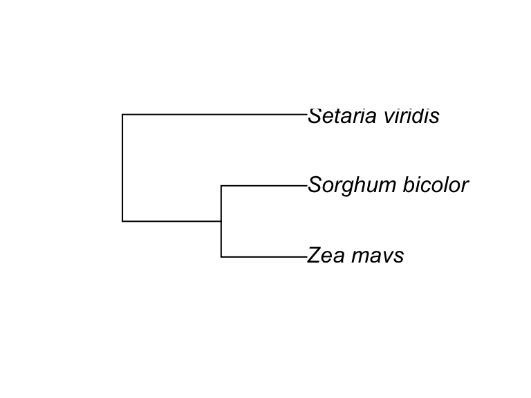
image insets
Isoquercitin_synthase <- magick::image_read("https://thebustalab.github.io/integrated_bioanalytics/images/homology.png")
grobs.tb <- tibble(x = c(0, 10, 20, 40), y = c(4, 5, 6, 9),
width = c(0.05, 0.05, 0.01, 1),
height = c(0.05, 0.05, 0.01, 0.3),
grob = list(grid::circleGrob(),
grid::rectGrob(),
grid::textGrob("I am a Grob"),
grid::rasterGrob(image = Isoquercitin_synthase)))
ggplot() +
geom_grob(data = grobs.tb,
aes(x, y, label = grob, vp.width = width, vp.height = height),
hjust = 0.7, vjust = 0.55) +
scale_y_continuous(expand = expansion(mult = 0.3, add = 0)) +
scale_x_continuous(expand = expansion(mult = 0.2, add = 0)) +
theme_bw(12)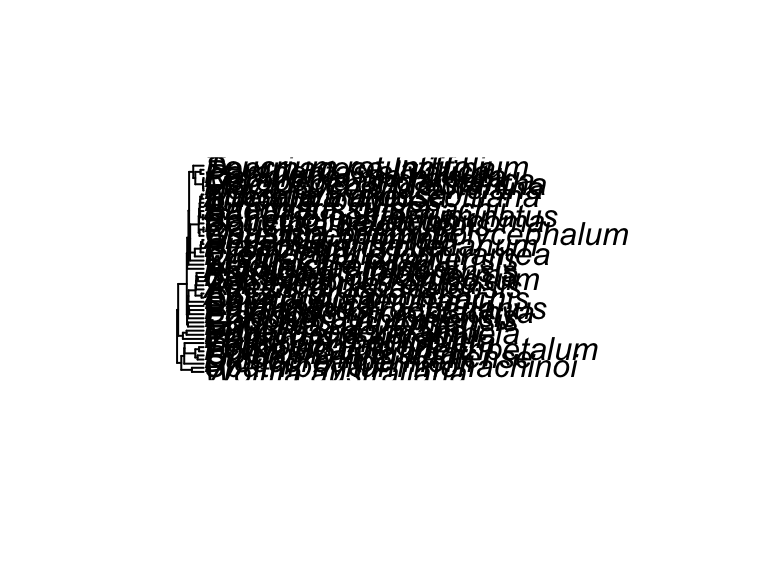
ggplot() +
annotate("grob", x = 1, y = 3, vp.width = 0.5,
label = grid::rasterGrob(image = Isoquercitin_synthase, width = 1)) +
theme_bw(12)
composite figures
Many high quality figures are composite figures in which there is more than one panel. Here is a simple way to make such figures in R. First, make each component of the composite figure and send the plot to a new object:
color_palette <- RColorBrewer::brewer.pal(11, "Paired")
names(color_palette) <- unique(alaska_lake_data$element)
plot1 <- ggplot(
data = filter(alaska_lake_data, element_type == "bound"),
aes(y = lake, x = mg_per_L)
) +
geom_col(
aes(fill = element), size = 0.5, position = "dodge",
color = "black"
) +
facet_grid(park~., scales = "free", space = "free") +
theme_bw() +
scale_fill_manual(values = color_palette) +
scale_y_discrete(name = "Lake Name") +
scale_x_continuous(name = "Abundance mg/L)") +
theme(
text = element_text(size = 14)
)
plot2 <- ggplot(
data = filter(alaska_lake_data, element_type == "free"),
aes(y = lake, x = mg_per_L)
) +
geom_col(
aes(fill = element), size = 0.5, position = "dodge",
color = "black"
) +
facet_grid(park~., scales = "free", space = "free") +
theme_bw() +
scale_fill_manual(values = color_palette) +
scale_y_discrete(name = "Lake Name") +
scale_x_continuous(name = "Abundance mg/L)") +
theme(
text = element_text(size = 14)
)Now, add them together to lay them out. Let’s look at various ways to lay this out:
plot_grid(plot1, plot2)plot_grid(plot1, plot2, ncol = 1)
plot_grid(plot_grid(plot1,plot2), plot1, ncol = 1)
exporting graphics
To export graphics from R, consider the code below. The
plot <- ggplot(data, aes(x = x, y = y)) + geom_point()
png(filename = <path_to_file_you_want_to_create>, width = 8, height = 8, res = 600, units = "in")
plot
dev.off()captions
- Title - an overall description of the what is shown
- For each subplot:
- The type of plot (line plot, bar chart, etc.)
- Describe what is plotted as y vs x in words.
- Describe what each bar, point, or error bar represents.
- If applicable, describe the number of independent samples or measurements (sometimes called “replicates”) that underlie a given geometric feature or summary statistic.
- Describe where the data are from.
- Avoid abbreviations, but if you do use any, specify what they mean.
An example:
(plot1 + plot2 + labs(caption = str_wrap("Figure 1: Carbon, nitrogen, and phosphorous in Alaskan lakes. A) A bar chart showing the abundance (in mg per L, x-axis) of the bound elements (C, N, and P) in various Alaskan lakes (lake names on y-axis) that are located in one of three parks in Alaska (park names on right y groupings). B) A bar chart showing the abundance (in mg per L, x-axis) of the free elements (Cl, S, F, Br, Na, K, Ca, and Mg) in various Alaskan lakes (lake names on y-axis) that are located in one of three parks in Alaska (park names on right y groupings). The data are from a public chemistry data repository. Each bar represents the result of a single measurement of a single analyte, the identity of which is coded using color as shown in the color legend. Abbreviations: BELA - Bering Land Bridge National Preserve, GAAR - Gates Of The Arctic National Park & Preserve, NOAT - Noatak National Preserve.", 90))) + plot_annotation(tag_levels = 'A') +
plot_layout(widths = c(1.1, 3), guides = 'collect') &
theme(legend.position = 'right')
further reading
plot layout
One option for plot layout, patchwork. This one is quick and simple.
patchwork, for plot layout
Another option for plot layout is cowplot. Cowplot is a bit more complicated, but is more versatile.
cowplot on Github
results and discussion
- Objective: Walk your reader through your results, drawing conclusions and making interpretations as you go.
- As you go: make notes of what should go into the introduction.
structure
(key: number of suggested sentences: purpose: “example”)
- Introductory paragraph:
- 1: Review the aim of the paper: “In order to understand…”
- 3-4: Combine a methods summary (with generalized summary of results?) to call out subsections: “We used method X to quantify property Y of our study subject (section 2.1)”
- Each subsection paragraph:
- 1: Purpose of the work described in this paragraph: “In order to determine…”
- 1: Review methods or experimental design specific to this subsection (if necessary)
- 4-5: Results of that method or experiment (i.e. data features)
- 1-2: Comparison of new results against those in literature (if possible)
- 1-2: Conclusion from the combined results or some other concluding remark “Thus, analysis X revealed that…”
- 1: Interpretation of the conclusion in a larger context (if possible / reasonable)
- Let’s look at an example:
2. Results and Discussion.
In order to better understand pollution in the state of Minnesota, this study focused on a detailed analyses of chemical measurements from soil samples from 300 sites around the state. The analyses consisted of a principal components analysis to determine which sites were similar to one another (Section 2.1) followed by statistical tests to see whether differences could be detected in the sites’ chemistry (Section 2.2).
2.1 Principal Components Analysis
To understand relationships between the sites from which soil chemistry was sampled, a principal components analysis was used. Each of the 20 different analytes, all of which contained halogen atoms, were included in the analysis. A scatter plot showing the position of each of the 300 samples in a space defined by dimesions 1 and 2 (which explain 54% and 35% of the total variance of the dataset, respectively), revealed that two major clusters are present, with a small number of outliers (Fig. 1). By color coding these two clusters according to whether the samples were collected from rural versus urban areas, it was possible to see that the first cluster was made out of almost exclusively samples from urban areas, while the second cluster was made up of almost entirely samples from rural areas. This suggested that variance in pollutant chemistry among the samples collected was assocaited with urban versus rural environments.
2.2 Statistical Analyses
Using the groupings that were identified via principal components analysis, statistical tests were conducted to determine if chemical abundances differed between groups. Tests for normality and homogeneity of variance (Shapiro and Levene tests) revealed that the data could not be assessed using ANOVA but instead required the use of a non-parametric test. Accordingly, the Kruskall-Wallis test followed by post-hoc Dunn tests were applied, which showed that the abundances of halogenated pollutants is significantly higher in urban versus rural areas (p = 0.0035, Fig. 2A). These direct observations are consistent with conclusions drawn by others in recent literature reviews focused on hydrocarbon compounds (Petrucci et al., 2018; Hendrix et al., 2019). Thus, the new chemical analyses presented here demonstrate that the discrepancy in urban versus rural pollution is true not only for hydrocarbon compounds (as had been found previously), but also for halogenated compounds. Together, these findings strongly suggest that either cities are a source of more pollution or that there is some other mechanism that concentrates pollution in cities.
suggestions
Is there an efficient way to write a results and discussion section in the format outlined above? Yes. Follow the step-by-step instructions below:
outline then draft paragraphs

- Identify “data features” -> “conclusion” combinations. Using your figures, make a list of all the potentially interesting features in your data, then pair each feature with a possible conclusiona it could lead to. Example:
- “The GC-MS data presented here indicates that cities have higher levels of pollution than rural areas (Fig. 1),” (a data feature)
- “suggesting that either cities are a source of more pollution or that there is some other mechanism that concentrates pollution in cities.” (a conclusion)
- Perform targeted literature searches. Expand your “data feature” -> “conclusion” combinations with “supplementary information” or “literature information”. Example:
- “The GC-MS data presented here indicates that cities have higher levels of pollution than rural areas.” (data feature)
- “These direct observations are consistent with conclusions drawn by others in recent literature reviews (Petrucci., 2018; Hendrix et al., 2019)” (literature information)
- “Overall, this suggests that either cities are a source of more pollution or that there is some other mechanism that concentrates pollution in cities.” (conclusion)
- Group “data feature” -> “supp/lit info” -> “conclusion” combinations into paragraphs. Edit each conclusion so that it highlights what new contribution your data makes to the situation. Also consider whether any of the parargaphs now suggest the existence of mechanisms. Example (note the conclusion sentence in italics that highlights the new findings):
- “The GC-MS data presented here indicates that cities have higher levels of pollution than rural areas (Fig. 1). These direct observations are consistent with meta-analyses of previously published observations (Supplemental Figure 1), as well as with conclusions drawn by others in recent literature reviews (So and so et al., 2018; The other person et al., 2019). The new chemical analyses presented here thus confirm this is true for hydrocarbon compounds, and extend the observation to halogenated compounds in the atmosphere. Together these findings strongly suggest that either cities are a source of more pollution or that there is some other mechanism that concentrates pollution in cities.
order then edit paragraphs
- Identify paragraph characteristics and group
- Consider whether any of your paragraphs are prerequisites for others and whether any paragraphs can be grouped according to topic.
- Group paragraphs according to topic and prerequisite dependencies (putting prereq dependencies as close to eachother as possible.)
- Rearrange paragraph groups Create the most natural flow. Consider:
- Starting with group of paragraphs most relevant to the overall pitch/goal of the paper
- Ending on the group of paragraphs that has the most future perspective
- Ending in a strong suit (i.e. not something too speculative)
- Consider putting orphaned paragraphs (or a shortened version of them) into the conclusion section.
- Edit transitions between groups. Edit each paragraph, particularly its first and last sentences, to connect the paragraphs into a flowing document. Specifically, this means several things:
- There should be no implicit cross-paragraph references (i.e. a new paragraph should not begin “The compound described above exhibited other interesting properties”, rather, “3-hydroxycinnamic acid exhibited other interesting properties.”).
- There should be no abrupt jumps in subject between paragraphs, if there are consider breaking the discussion into subsections to help the reader identify logical resting points.
- The discussion should not require the reader to go back and read its first half in order to understand its second half.
conclusion and introduction
Objective (conclusion): to convey a short statement of the take-home messages of your study. What are the most important things that you want the reader to remember from your study?
Objective (introduciton): to prepare the reader by giving the reader sufficient background to understand the study as a whole. It therefore should only contain information pertinent to understanding the study and its broader significance.
Make sure that the scope of your introduction is in-line with the scope of the conclusion. That way, the reader will not be underwhelmed, nor will your work be undersold.
structure
Conclusion:
- One paragraph
- 2-3: Summarize over-arching conclusions from each section of the paper (omit the details described in results or discussion)
- 2-3: Based on a general description of findings, use pros and cons to argue for, if possible, alternative hypotheses.
- 1-2: Suggest experiments to test these hypotheses.
- 1-2: Describe future directions.
Introduction:

- Paragraph 1: Introduce the topic
- 1: Introduce a topic and, ideally, an application of the research you will describe. Grab reader’s attention.
- 1: State why the topic is important.
- 1: Describe what is known about the topic (at least, as pertains to the work at hand).
- 1: Identify a gap in knowledge: “despite research in this area, here is what we don’t know about the topic.”
- 1: List the negative things that will happen if we don’t fill this gap in knowledge.
- Paragraph 2: Provide background information
- 3-5: Describe, in moderate detail, the background information (concepts, literature) relevant to the study.
- 1: End by saying how the details you just described relate to the application/topic described in the first paragraph.
- Paragraph 3: Objectives of this study
- 1: State the objective of this study.
- 1: Briefly describe what was done and the techniques or instruments used.
- 1-2: For this project, briefly describe where you got the data, how you cleaned it up, if you merged multiple datasets, etc.
- 1: (optional) State the major conclusion from the work and what it means for the application described in paragraph 1.
suggestions
- If something is well-established, say so.
- Be clear about what is speculation.
- Last paragraph can mention objectives in list form.
- Last sentence can briefly mention methods (specific techniques or instruments) that were used.
abstract and title
1.19 abstract

- Structure One paragraph Use about 200 - 500 words (ideally no more than 400 words)
- 1-2 sentences: Introduction: Describe the topic, the motivation, and overall purpose of the research (Why is this research interesting and important? What gap in our knowledge does it fill?)
- 1-2 sentences: Objective: Specific research objective, and potentially hypotheses/predictions, if any.
- 1-2 sentences: Methods: Very concise overview of the methods used to address the research questions.
- 2-3 sentences: Results/Discussion: Describe the major results (what you found) and interpretation of the results (what the results mean).
- 1-2 sentences: Conclusions: Synthesizes the major contributions of the study into the context of the larger field to which the study belongs. What did we learn about the bigger picture of this field in general from doing this study?
- Function: an abstract proves a short summary of the entire study. The abstract should include the motivation or reason for conducting the study, what the research question or hypothesis was, how the experiments were conducted, what the results were, how the results are interpreted in light of the research question or hypothesis, and a concluding sentence about the general contribution or importance of the study. A good abstract should:
- Inform readers about the article’s content
- Summarize complex information in a clear, concise manner
- Help readers decide whether or not to read the article
- Used in conferences to summarize what the speaker will say during his/her presentation
1.20 title
- Structure One sentence Use about 75-140 characters (ideally no more than 125 characters). There are essentially two types of titles: descriptive titles and mechanistic titles.
- If your manuscript is exploratory research, consider using a descriptive title. For example:
- “Comparative analysis of carbon, sulfur, and phoshorous chemistry in six Alaskan lakes.”
- If your manuscript is hypothesis-driven research, consider using a mechanistic title. For example:
- “Dissolved organic carbon in Alaskan lakes is heavily influenced by water pH and temperature.”
- If your manuscript is exploratory research, consider using a descriptive title. For example:
- Function: a title captures attention and highlight the research question(s). A good title should:
- Be indicative of the content of the paper
- Attract the interest of potential readers
- Reflect whether the article is deascriptive or mechanistic
- Include important keywords
1.21 further reading
[Abstract Guide] (https://www.cbs.umn.edu/sites/default/files/public/downloads/Annotated_Nature_abstract.pdf)
(PART) IMAGE ANALYSIS
image color analysis
For analyze color images we use an interactive app called by analyzeImage(). It takes two arguments: share_link, and monolist_out_path. share_link should be the Google Drive share link for the photo that you wish to analyze. share_link can also be the share link for a Google Drive folder, in which case the app will allow you to cycle through the photos in that folder one-by-one. monolist_out_path should be a path to a new or existing .csv file on your local sytem where the results are to be saved as you work. Below is an example. Remember, if you are on Mac you should use a path that has single slashes, for example: /Users/bust0037/Desktop/output.csv. If you are on PC you should use a path that has double slashes, for example: C://Users//Busta_Lab//Desktop//output.csv.
analyzeImage(
share_link = "https://drive.google.com/file/d/1rvfh9_DqEWlpaegGwfLZLdjjYEDlM0ZL/view?usp=sharing",
monolist_out_path = "/Users/bust0037/Desktop/output.csv"
)images of mass spectra
# analyzeMassSpectralImages()(PART) APPENDIX
r faq
filtering
filter(<data>, <variable> < 18) ## less than 18
filter(<data>, <variable> <= 18) ## less than or equal to 18
filter(<data>, <variable> > 18) ## greater than 18
filter(<data>, <variable> >= 18) ## greater than or equal to 18
filter(<data>, <variable> == 18) ## equals than 18
filter(<data>, <variable> != 18) ## not equal to 18
filter(<data>, <variable> == 18 | <variable> == 19) ## equal to 18 or 19
filter(<data>, <variable> %in% c(18, 19, 20) ## equal to 18 or 19 or 20
ordering
A list of numeric element has an inherent order to it: -inf -> +inf. A list of character element also has an inherent order to it: A -> Z, or if it’s a mixed number and letter list (which is interpreted by R as a character list): 0 -> 9 -> A -> Z.
However, there are cases where we will want a list of character elements to have some order other than A -> Z. In these cases, we want to convert the list of character elements into a list of factor elements. Factors are lists of character elements that have an inherent order that is not A -> Z. For example, in the plot below, the y axis is not, perhaps, in the “correct” order:
ggplot(periodic_table) +
geom_point(aes(y = group_number, x = atomic_mass_rounded))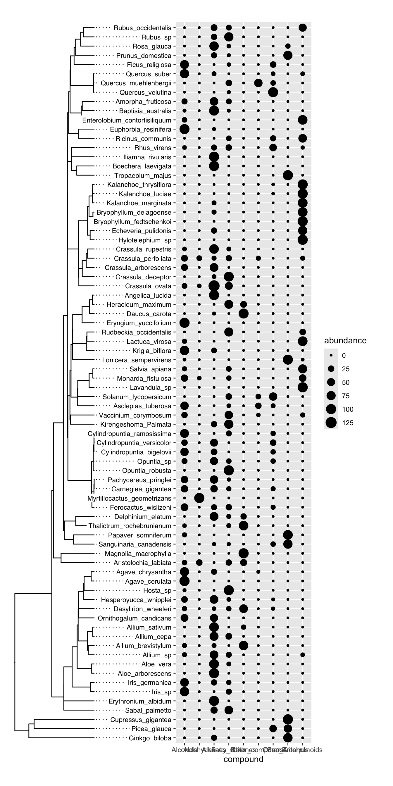
How do we fix this? We need to convert the column group_number into a list of factors that have the correct order (see below). For this, we will use the command factor, which will accept an argument called levels in which we can define the order the the characters should be in:
periodic_table$group_number <- factor(
periodic_table$group_number,
levels = c("1", "2", "3", "4", "5", "6", "7", "8", "9", "10", "11", "12", "13", "14", "15", "16", "17", "18", "lanthanides", "actinides")
)
periodic_table
## # A tibble: 118 × 41
## atomic_number element_name atomic_symbol group_number
## <dbl> <chr> <chr> <fct>
## 1 1 hydrogen H 1
## 2 2 helium He 18
## 3 3 lithium Li 1
## 4 4 beryllium Be 2
## 5 5 boron B 13
## 6 6 carbon C 14
## 7 7 nitrogen N 15
## 8 8 oxygen O 16
## 9 9 fluorine F 17
## 10 10 neon Ne 18
## # … with 108 more rows, and 37 more variables:
## # period <dbl>, atomic_mass_rounded <dbl>,
## # melting_point_C <dbl>, boiling_point_C <dbl>,
## # state_at_RT <chr>, density_g_per_mL <dbl>,
## # electronegativity_pauling <dbl>,
## # first_ionization_poten_eV <dbl>,
## # second_ionization_poten_eV <dbl>, …Notice that now when we look at the type of data that is contained in the column group_number it says “
ggplot(periodic_table) +
geom_point(aes(y = group_number, x = atomic_mass_rounded))VICTORY!
column manipulation
How to select specific columns:
alaska_lake_data %>%
select(water_temp, pH)
## # A tibble: 220 × 2
## water_temp pH
## <dbl> <dbl>
## 1 6.46 7.69
## 2 6.46 7.69
## 3 6.46 7.69
## 4 6.46 7.69
## 5 6.46 7.69
## 6 6.46 7.69
## 7 6.46 7.69
## 8 6.46 7.69
## 9 6.46 7.69
## 10 6.46 7.69
## # … with 210 more rowsHow to remove certain columns:
alaska_lake_data %>%
select(!water_temp)
## # A tibble: 220 × 6
## lake park pH element mg_per_L element_type
## <chr> <chr> <dbl> <chr> <dbl> <chr>
## 1 Devil_Mountain… BELA 7.69 C 3.4 bound
## 2 Devil_Mountain… BELA 7.69 N 0.028 bound
## 3 Devil_Mountain… BELA 7.69 P 0 bound
## 4 Devil_Mountain… BELA 7.69 Cl 10.4 free
## 5 Devil_Mountain… BELA 7.69 S 0.62 free
## 6 Devil_Mountain… BELA 7.69 F 0.04 free
## 7 Devil_Mountain… BELA 7.69 Br 0.02 free
## 8 Devil_Mountain… BELA 7.69 Na 8.92 free
## 9 Devil_Mountain… BELA 7.69 K 1.2 free
## 10 Devil_Mountain… BELA 7.69 Ca 5.73 free
## # … with 210 more rowsuser color palettes
Suppose we want to create a specific color palette for each pack in alaska_lake_data. There are three unique parks:
unique(alaska_lake_data$park)
## [1] "BELA" "GAAR" "NOAT"First we define the colors we want:
custom_colors_for_lakes <- c("#1a9850", "#ffffbf", "#d73027")
custom_colors_for_lakes
## [1] "#1a9850" "#ffffbf" "#d73027"Then we name that vector according to which park we want to be which color:
names(custom_colors_for_lakes) <- c("GAAR", "NOAT", "BELA")
custom_colors_for_lakes
## GAAR NOAT BELA
## "#1a9850" "#ffffbf" "#d73027"Now we feed that object to the values argument of scale_color_manual (or scale_fill_manual, if you want fill):
ggplot(alaska_lake_data) +
geom_point(aes(x = pH, y = water_temp, fill = park), size = 5, shape = 21, color = "black") +
scale_fill_manual(values = custom_colors_for_lakes) +
theme_classic()
templates
1.22 matrix analyses
1.22.1 basic runMatrixAnalysis() template
runMatrixAnalysis(
data = NULL,
analysis = c("hclust", "pca", "pca_ord", "pca_dim"),
column_w_names_of_multiple_analytes = NULL,
column_w_values_for_multiple_analytes = NULL,
columns_w_values_for_single_analyte = NULL,
columns_w_sample_ID_info = NULL
)1.22.2 advanced runMatrixAnalysis() template
runMatrixAnalysis(
data = NULL, # the data set to work on
analysis = c("hclust", "pca", "pca_ord", "pca_dim"), # the analysis to conduct
column_w_names_of_multiple_analytes = NULL, # a column with names of multiple analytes
column_w_values_for_multiple_analytes = NULL, # a column with quantities measured for multiple analytes
columns_w_values_for_single_analyte = NULL, # a column with quantities measured for a single analyte
columns_w_additional_analyte_info = NULL, # a column with character or numeric information about analytes that was not "measured" as part of the experiment.
columns_w_sample_ID_info = NULL, # a column with information about the sample (i.e. contents from the test tube's label)
transpose = FALSE,
kmeans = c("none", "auto", "elbow", "1", "2", "3", "etc."),
na_replacement = c("none", "mean", "zero", "drop")
)